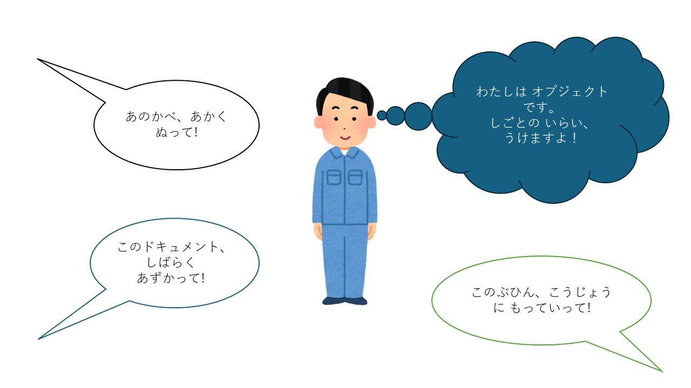
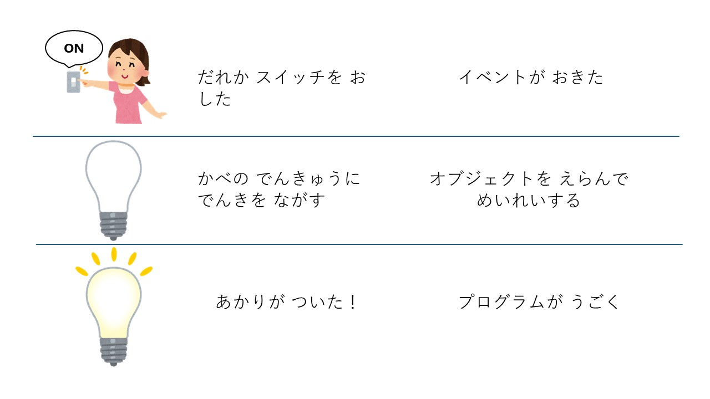
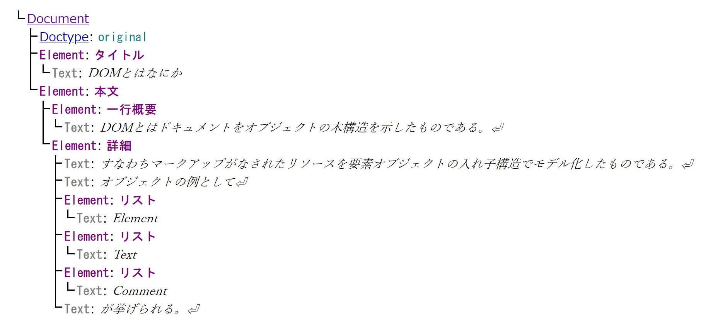
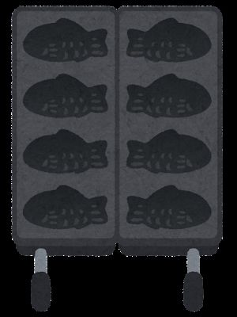
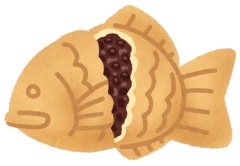
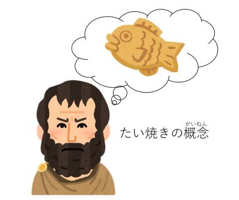

JavaScriptを始める前に
留学生のためのJavaScript学習ガイド：Webを動かす魔法を学ぼう
留学生のみなさん、こんにちは！プログラミングの世界へようこそ。
みなさんが毎日使っているスマートフォンやパソコンの画面。ボタンを押すとメニューが出てきたり、地図が動いたりしますね。これはすべて「JavaScript（ジャバスクリプト）」という言葉が命令を出して動かしています。
このガイドでは、自分でウェブページを動かせるようになるための基礎（きそ）をやさしく解説します。それがJavaScriptの基本だからです。
(参考) 現在のJavaScriptは、ウェブページの操作だけでなく、いろいろな用途に使えるプログラム言語になっています。しかし、今でも、ブラウザ上で活躍しています。
I. 私たちの舞台：WWW（ワールド・ワイド・ウェブ）
まず、javaScriptの活躍の舞台、WWW（ワールド・ワイド・ウェブ）とは何かについて、説明しましょう。
WWW（ワールド・ワイド・ウェブ） は、世界中のコンピュータが「クモの巣（Web）」のようにつながって、情報を共有する仕組みのことです。
これを、「図書館（としょかん）」 に例えて、やさしく説明しますね。
1. 3つの大切な「道具」
WWWを動かすために、3つの主役がいます。
- Webブラウザ（お客さん） ChromeやSafariなど、私たちがサイトを見るためのソフトです。「本を読みたい人」です。
- Webサーバ（図書館のスタッフ） 世界中のどこかにある、24時間動いているコンピュータです。「本を管理している人」です。
- HTML（本の内容） ウェブサイトに書いてある文章や写真のデータです。これが「本」そのものです。
2. ウェブサイトが表示されるまでの「4つのステップ」
あなたがブラウザでURLを入力してから、画面が出るまでの流れを見てみましょう。
- リクエスト（注文）： あなたが「このページを見たい！」とURLをクリックします。これは図書館のスタッフに「あの本を貸してください」と頼むのと同じです。
- 住所の確認（DNS）：
インターネットの世界では、
google.comのような名前ではなく、数字の住所（IPアドレス 例えば、“142.251.223.46” みたいな）で場所を探します。 - レスポンス（返事）： サーバがあなたのリクエストを受けて、HTMLなどのデータをあなたのブラウザに送り返します。「はい、どうぞ！」と本を渡してくれるイメージです。
- レンダリング（組み立て）： ブラウザが、届いたHTMLデータを読み取って、きれいなデザインに組み立てて表示します。
3. WWWで使われる「魔法の言葉」
ウェブの世界には、共通のルール（プロトコル）があります。
- HTTP / HTTPS： 情報をやり取りするときの「言葉のルール」です。
- URL： ウェブサイトの「住所」です。世界に一つしかありません。
まとめテーブル
| ITの言葉 | 図書館での例え | 役割 |
|---|---|---|
| クライアント | 本を読みたい人 | ブラウザでリクエストを送る |
| サーバ | 図書館のスタッフ | データを保管して、送り返す |
| HTML | 本のページ | 文字や写真のデータ |
| URL | 本の整理番号 | サイトがどこにあるか教える |
いかがでしょうか？「注文して、送ってもらって、組み立てる」。このシンプルな流れがWWWの正体です。
「WWWは、世界中の情報をだれでも、どこでも見られるようにしたすごい発明なんです。
II. ウェブページを作る「3つの力」：HTML・CSS・JavaScriptの役割
ウェブページは、3つの技術がチームワークを発揮してできています。これを「家づくり」に例えてみましょう。
| 技術名 | 役割（やくわり） | 家づくりに例えると？ |
|---|---|---|
| HTML | 骨組み・構造 | 柱、壁、床（ゆか） |
| CSS | 見た目・デザイン | ペンキの色、インテリア、壁に貼る紙 |
| JavaScript | 動き・機能（きのう） | 電気（でんき）、機械装置（きかいそうち） |
JavaScriptの役割：電気を通すこと
HTMLとCSSだけでは、家は完成しても「電気が通っていない」状態です。HTMLとCSSだけのウェブページは、ただ情報を表示するだけの、動きのない「紙のポスター」のようなものです。
JavaScriptという電気が通ることで、スイッチを押せばライトがつき、ドアの前に立てば自動ドアが開き、ボタンを押せばエレベーターが動くようになります。ウェブページはユーザーと「対話（たいわ）」ができる便利な道具に変わるのです。
III. イベントとは
1. 「きっかけ」を待っているコンピューター
普段、ウェブページはただじっとしているだけに見えますが、実はあなたの操作を 「今か今かと待っている」 状態です。
例えば、あなたがこんな動きをしたとき、それがすべて「イベント」になります。
- ボタンを カチッ（クリック） としたとき。
- キーボードで 文字を入力 したとき。
- 画面を 上下に動かした（スクロール） とき。
このように、「ユーザーが何かをした！」 という出来事のことを、JavaScriptでは「イベント」と呼びます。
2. 「もし〜したら、〜する」という約束
イベントの考え方は、皆さんの日常（にちじょう）にある 「センサー」 と同じです。
- 自動ドア： 「人が前に来たら（イベント）、ドアを開ける」
- 目覚まし時計： 「朝の7時になったら（イベント）、音を鳴らす」
- ウェブサイト： 「ボタンが押されたら（イベント）、メッセージを出す」
JavaScriptを学ぶと、この 「もし〜が起きたら、この仕事をやってね！」 というマニュアルを書けるようになります。
3. 留学生への導入メッセージ
「今はまだ、難しい魔法の言葉を覚える必要はありません。 画面の中で起きる 『クリック』や『入力』などの変化の一つひとつに、名前（イベント）がついているんだな 、ということだけ覚えておいてください。 皆さんが『何か』をしたときに、サイトが『反応』するのは、このイベントのおかげなんですよ！」
まとめ
| 言葉 | イメージ |
|---|---|
| イベント | 「何かが起きた！」という合図 |
| きっかけ | ユーザーがマウスやキーボードを動かすこと |
| 反応 | 画面の色が変わったり、窓が開いたりすること |
「ウェブページを生きているように動かすための『スイッチ』」。それがイベントです。
IV. オブジェクトとは
皆さんがこれから学ぶのは、ウェブページを動かす方法 です。ウェブページを動かすためには、ウェブページを表示しているブラウザに「これこれこういうことをしなさい」と命令する ことが必要です。
1. オブジェクトとはどんなもの？
HTMLやCSSという設計図に従って、ブラウザはそれをウェブページとして作り上げてくれます。JavaScriptは出来上がったウェブページの部品を 「オブジェクト」 としてとらえ、それに対して『これこれこういうことをしなさい』と命令します。
さまざまな人が集まって会社ができているのと同じように、ウェブページももさまざまなオブジェクトから構成されています。そして、「会社に何かをしてもらう」というのは、実際には「その会社の人に何かをしてもらう」ことです。同じように、「ウェブページを動かす」というのは「ウェブページのオブジェクトに何かをしてもらう」 ということです。

2. あいまいさのない命令：「誰が」「何をする」
JavaScripはマニュアルですから、「みんなで協力して、こういうことをやりなさい」とぼんやりした命令をするのではなく、「Aさんはこれをして」「Bさんはあれをして」と一人ひとりの作業を正確に伝えなければなりません。 「誰が」「何をする」のかを、だれが読んでもわかるように書く ことが大事です。
この「Aさん」「Bさん」がJavaScriptでは 「オブジェクト」 にあたります。
「オブジェクト」という言葉は、皆さんには聞きなれないものかもしれませんが、とりあえず、次のようなイメージを頭に思い描いてください。
- ウェブページの中には、たくさんのオブジェクトと呼ばれるものがいて、JavaScriptを使って、彼らに命令すれば、仕事をしてくれるらしい
今は、それだけで十分です。「オブジェクトの中身がどうなっているのか？」や「それに仕事をしてもらうためのマニュアルをどう書けばよいのか？」については、これから少しずつ、何度かに分けて説明します。
3. HTMLとCSS
では、JavaScriptで扱うオブジェクトとは具体的には、どんなものでしょうか？
ブラウザはサーバーからのレスポンスを受け取ります。そのレスポンスのうち「HTML」と「CSS」がウェブページという「家」の柱、壁、床（ゆか）、あるいはペンキ、インテリア、壁紙、といった部品になるのは、前に説明した通りです。
実は、この「ウェブページの部品」こそが、JavaScriptの オブジェクト です。
したがって、JavaScriptでウェブページを操るためには、まずウェブページの部品そのものについて、理解しなければなりません。
次のステップでは、ウェブページの設計図である HTML と CSS について説明します。
このセクションのまとめ
JavaScriptが動く順番をイラストで描くとこんな風になります。

つまり、JavaScriptでウェブページを動かすために
- 「何が起きたら」（どのイベントに反応させるか？）
- 「誰に」（どのオブジェクトに仕事をさせるか？）
- 「どういう仕事をさせるか？」（プログラムの内容）
を考えておく必要があります。「プログラムの内容」そのものだけではなく、その プログラムをを動かすきっかけ（イベント） と、実際に動くもの（オブジェクト） の関係が大事なのです。
それでは、まずウェブページの骨組みである、「HTML」について、詳しく見てみましょう！
HTML
留学生のためのHTML基礎（きそ）ガイド：JavaScriptを学ぶ前に
Web開発を勉強するみなさん、こんにちは。このガイドでは、プログラミングのJavaScriptを勉強する前に、とても大切な「HTML」と「CSS」をわかりやすく説明します。
I. はじめに：ウェブページを構成する「3つの力」
Webサイトを作（つく）るときには、3つの技術（ぎじゅつ）を使（つか）います。それはHTML、CSS、そしてJavaScriptです。これらを「家」に例えて考（かんが）えてみましょう。
- HTML： 家の「柱」や「壁」です。建物（たてもの）の骨組みを作（つく）る役割（やくわり）があります。
- CSS： 家の「ペンキ」や「インテリア」です。色（いろ）を塗（ぬ）ったりして、見た目（め）をきれいに整（ととの）えます。
- JavaScript： 家の「電気（でんき）」や「機械（きかい）装置（そうち）」です。ボタンを押（お）すとライトがつくような、動きや機能（きのう）を作ります。
HTMLはウェブページの土台です。HTMLの骨組みが正（ただ）しくないと、あとからJavaScriptを使っても、うまく動きません。まずは、ページの見えない部分（ぶぶん）である「設定」から理解（りかい）しましょう。
II. HTMLのメタ情報（じょうほう）：ウェブページの「設定」を理解する
ウェブページには、ユーザーには見えませんが、ブラウザや検索（けんさく）エンジンにとって大切な情報があります。これを「メタ情報（じょうほう）」と呼（よ）び、<head>タグの中（なか）に書きます。
<title>タグ： ブラウザのタブに表示される名前（なまえ）です。そのページの内容（ないよう）を伝（つた）えます。- 文字（もじ）コードの設定： 日本語などが正しく表示されるようにするための設定です。
もし、文字コードの設定が正しくないと、文字が「読（よ）めない記号（きごう）」になってしまいます。これを「文字化（もじば）け」と言（い）います。設定が終わったら、次は実際（じっさい）に画面で見えるコンテンツを作（つく）りましょう。
III. いろいろなHTMLタグ：情報（じょうほう）の意味（いみ）を決める
ウェブページをつくるための「HTMLタグ」と「特殊（とくしゅ）記号」について、やさしい日本語で説明します。
HTMLタグとは？
HTMLは、ウェブページの 「骨組み」 をつくるための言葉です。
タグは、< と > で名前を囲（かこ）んで書きます。たいていの場合、始まりのタグ（例：<p>）と終わりのタグ（例：</p>）で文字をはさみます。タグはタグで囲まれた部分が、HTMLの中でどのような仕事をしているかを示します。
1. 見出し（Heading）: <h1> 〜 <h6>
ページのタイトルや、中身の「見出し」に使います。
<h1>が一番大きく、<h6>が一番小さいです。- 文字を大きくするためではなく、ページの内容（構造）をわかりやすくするために使います。
| タグ | 表示 |
|---|---|
<h1>1番大きな見出し</h1> |
1番大きな見出し |
<h2>2番目に大きな見出し</h2> |
2番目に大きな見出し |
<h3>3番目に大きな見出し</h3> |
3番目に大きな見出し |
<h4>4番目に大きな見出し</h4> |
4番目に大きな見出し |
<h5>5番目に大きな見出し</h5> |
5番目に大きな見出し |
<h6>6番目に大きな見出し</h6> |
6番目に大きな見出し |
2. リンク（Link）: <a>
他のページへ行くためのボタンや文字をつくります。
hrefという「属性お話」を使って、行きたい場所の住所（URL）を書きます。- （例）
<a href="https://www.mozilla.org/">Mozilla</a>
この埼玉コンピュータ医療事務専門学校という文字をクリックすると、学校のホームページが表示されます。
3. 強調（Emphasis）: <strong>
大事な言葉を強調（強く見せる）するときに使います。ブラウザでは、太い文字 のように表示されます。
4. 水平線（Horizontal rule）: <hr>
話題（わだい）が変わるときなどに、横に長い線を引きます。
上の線が水平線です。
5. 段落（Paragraph）: <p>
ふつうの文章のまとまり（段落）をつくるときに使います。文章を書くときに一番よく使います。
<p>長い文章をずっと読み続けるのは大変（たいへん）ですよね。そこで、<strong>「同じ内容（ないよう）のお話し」</strong> をひとつにまとめて、区切くぎりをつけたものが「段落（だんらく）」です。</P>
<p>段落（だんらく）より大きなグループに、「節」や「章」があります。</p>
これは下のように表示されます。
長い文章をずっと読み続けるのは大変（たいへん）ですよね。そこで、「同じ内容（ないよう）のお話し」 をひとつにまとめて、区切くぎりをつけたものが「段落（だんらく）」です。
段落（だんらく）より大きなグループに、「節」や「章」があります。
6. 改行（Line break）: <br>
新しい段落をつくらずに、次の行（ぎょう）へ行きたいときに使います。これには終わりのタグ（</br>）はありません。
<p>長い文章をずっと読み続けるのは大変（たいへん）ですよね。<br>そこで、<strong>「同じ内容（ないよう）のお話し」</strong> をひとつにまとめて、区切くぎりをつけたものが「段落（だんらく）」です。</P>
これは下のように表示されます。
長い文章をずっと読み続けるのは大変（たいへん）ですよね。
そこで、「同じ内容（ないよう）のお話し」 をひとつにまとめて、区切くぎりをつけたものが「段落（だんらく）」です。
7. イメージ（Image）: <img>
ページに写真やイラストを表示します。
src: 画像がある場所（パス）を書きます。alt: 目が見えない人や画像が出なかったときのために、画像の説明を書きます。
<img src="img/駅.jpg" alt="駅の写真">
8. 整形済みテキスト: <pre>
プログラムのコードなどを、書いた通りの形で表示します。
- スペースや改行（かいぎょう）がそのまま画面に出ます。
<h1>1番大きな見出し</h>のように、書いたまま、表示されます。
9. リスト（List）: <ul>, <ol>, <li>
箇条書き（かじょうがき）をつくります。
<ul>: 点（・）がつくリストです。<ol>: 1, 2, 3… と数字がつくリストです。<li>: リストの中の、ひとつひとつのアイテムに使います。
ulの例
- 赤
- 緑
- 青
olの例
- 赤
- 緑
- 青
特殊記号（とくしゅきごう）
HTMLでは、< や > は「タグ」として使われます。そのため、これらを「文字」として画面に出したいときは、特別な書き方をする必要があります。
| 記号 | 名前 | HTMLでの書き方 | なぜ大事か |
|---|---|---|---|
| & | アンパサンド | & | 特殊記号の始まりを教える記号だからです。 |
| < | 小なり | < | タグの始まり（<）とまちがわれるからです。 |
| > | 大なり | > | タグの終わり（>）とまちがわれるからです。 |
| “ | ダブルクォーテーション | " | 属性（例：class="name"）を書くときに使うからです。 |
これらを使わないと、ブラウザが「これはタグかな？それとも文字かな？」と迷（まよ）ってしまい、ウェブページが正しく表示されないことがあります。
アドバイス: HTMLで構造をつくり、CSSで「見た目（色やサイズ）」を整（ととの）え、JavaScriptで「動き」をつけます。まずはこのHTMLタグをしっかり覚（おぼ）えましょう！
JavaScriptのための「目印（めじるし）」： タグには、JavaScriptが場所（ばしょ）を見つけるための名前を付（つ）けることができます。
- id属性お話： そのページで「たった1つ」の要素（ようそ）に付（つ）ける固有（こゆう）の名前です。
- class属性お話： 複数（ふくすう）の要素を「グループ化（か）」するための名前です。
次は、データを見やすく整理（せいり）する「テーブル」について学（まな）びましょう。
IV. テーブル：データをおさめて表示する
たくさんのデータを並（なら）べて見せるときは、表（テーブル）を使（つか）います。テーブルは、タグの中（なか）にタグを入（い）れる「入（い）れ子（こ）」の構造になっています。
テーブルの構成（こうせい）：
<table>タグ：表（ひょう）の全体（ぜんたい）を囲（かこ）む大きな箱（はこ）です。<thead>テーブルヘッダ：表の見出し部分です。<tbody>テーブルボディ：表の内容部分です。<tr>タグ：表の「行（ぎょう）」、つまり横（よこ）の一列（いちれつ）を作ります。<th>または<td>タグ：行の中にある一（ひと）つのマス目（め）です。<th>は見出し、<td>はデータを書きます。
コードの例：
<table>
<thead>
<tr>
<th>名前</th>
<th>点数</th>
</tr>
</thead>
<tbody>
<tr>
<td>田中さん</td>
<td>80点</td>
</tr>
<tr>
<td>佐藤さん</td>
<td>65点</td>
</tr>
</tbody>
</table>
このHTMLは下のように表示されます。
| 名前 | 点数 |
|---|---|
| 田中さん | 80点 |
| 佐藤さん | 65点 |
V. フォーム：ユーザーからの入力を受け取る
「フォーム」は、Webサイトがユーザーとコミュニケーションを取（と）るための大切な場所（ばしょ）です。
<input type="text">：名前（なまえ）などを書く一列（いちれつ）の箱（はこ）です。<input type="password">：パスワード用（よう）です。文字（もじ）が隠（かく）れます。<input type="radio">：ラジオボタンです。いくつかの中から「1つだけ」選びます。<input type="checkbox">：チェックボックスです。好きなだけ選（えら）べます。<input type="submit">：送信（そうしん）ボタンです。これはデータを送（おく）るための「引き金（ひきがね）」になります。
送信ボタンを押（お）すと、データは「道（みち）」を通（とお）ってサーバーへ運（はこ）ばれます。
<form action="#" method="post">
<div class="form-group">
<label>お名前（おなまえ）：</label>
<input type="text" name="username" placeholder="例（れい）：Yamada Taro">
</div>
<div class="form-group">
<label>パスワード：</label>
<input type="password" name="userpass">
</div>
<div class="form-group">
<label>性別（せいべつ）：</label>
<input type="radio" name="gender" value="male" id="m"> <label for="m" style="display:inline;">男</label>
<input type="radio" name="gender" value="female" id="f"> <label for="f" style="display:inline;">女</label>
</div>
<div class="form-group">
<label>好きな日本料理（にほんりょうり）：</label>
<input type="checkbox" name="food" value="sushi"> 寿司（すし） 🍣
<input type="checkbox" name="food" value="ramen"> ラーメン 🍜
<input type="checkbox" name="food" value="curry"> カレー 🍛
</div>
<div class="form-group">
<input type="submit" value="データを送る（おくる）">
</div>
</form>
ここをクリックしてみましょう。上のHTMLがどんなふうに表示されるかわかります。
まだ実際にデータを送信することはできません。
データの受け取り：GETとPOSTの違い（ちがい）
フォームで入力されたデータがサーバーに送（おく）られるとき、2つのルール（メソッド）があります。
- GET（ゲット）： データがURLの中に含（ふく）まれます。検索（けんさく）キーワードなど、人（ひと）に見られても困（こま）らないデータに使（つか）います。
- POST（ポスト）： データがURLには見えない形（かたち）で送られます。パスワードや個人（こじん）情報（じょうほう）など、秘密（ひみつ）にしたいデータに向（む）いています。
JavaScriptを学習（がくしゅう）すると、このデータの送信（そうしん）をコントロールしたり、入力ミスがないかチェックしたりできるようになります。
6. まとめ
Web制作（せいさく）では、HTMLで「骨組み」を作り、CSSで「見た目」を整え、JavaScriptで「動き」を加えます。これらが組み合わさって、素晴らしいWebサイトが完成します。
プログラミングの学習は、一歩ずつ進めば大丈夫です。
HTML基礎のまとめ
- HTMLはウェブページの「骨組み」です。
<head>タグの中にある設定が正しくないと、文字化（もじば）けが起（お）きます。- idは「1つだけ」、classは「グループ」のための目印（めじるし）です。
- テーブルは、
<table>の中に<tr>、その中に<th>や<td>を書く構造です。 - データの送信（そうしん）には、GETとPOSTの2つの方法（ほうほう）があります。
皆さんの学習を心から応援（おうえん）しています。では、次は CSS について学びましょう。
JavaScript学習者のためのCSS基本ガイド：ウェブページのデザインを学ぼう
なぜJavaScriptの前にCSSを学ぶ必要があるのか？
JavaScriptでデザインを変えるためには、CSSの知識がどうしても必要です。留学生の皆さんにもわかりやすい「やさしい日本語」で、大切なポイントを解説します。
JavaScriptはCSSを操作して、デザインを動的に変える役割を持っています。CSSを知っておくことには、次のような戦略的なメリットがあります。
- CSSを知らないとJavaScriptが書けない： JavaScriptで「背景色を変える」という命令を出すとき、CSSのプロパティ名（backgroundColorなど）を知らないと、プログラムが書けません。
- 無駄（むだ）なコードが減る： 簡単なデザインの変化（マウスを乗せたときに色を変えるなど）は、CSSだけで作れます。CSSでできることを知っていれば、JavaScriptのコードを短く、シンプルに保つことができます。
- エラーを減らせる： CSSの仕組みを理解していれば、JavaScriptでデザインを操作したときに「なぜか動かない」というミスを防ぐことができます。
ここをクリックしてみましょう。
これから、このHTMLをCSSを使って、デザインを変更してゆきます。
まず、デザインの基本である「文字のスタイル」について学びましょう。
I. 文字のスタイル（文字のデザインを変える）
Webサイトにおいて、文字は情報を伝えるための最も大切な要素です。文字の「読みやすさ」は、ユーザーの体験（UX “User eXperience“のこと）に大きな影響を与えます。
基本の3つのプロパティ
まずは、よく使われる以下の3つの命令（プロパティ）を覚えましょう。
- font-size： 文字の大きさ。
- color： 文字の色。
- text-align： 文字の並べ方。左（left）、真ん中（center）、右（right）のどこに揃えるかを決めます。
CSSの書き方の基本
CSSは、「どの場所に（セレクタ）」「何の項目を（プロパティ）」「どう変えるか（値）」というルールで書きます。
/* h1タグ（見出し）のデザインを変える例（れい） */
h1 {
font-size: 24px; /* 大きさを24ピクセルにする */
color: blue; /* 色を青にする */
text-align: center; /* 真ん中（まんなか）に並べる */
}
ここをクリックしてみましょう。
セレクタ
セレクタ はウェブページを分解して、その一部を取り出すときに、必要な部分を探すヒントとして使う、名前や特徴です。「タグ セレクタ」「クラス セレクタ」などがあります。
Important
セレクタ はJavaScriptでも、とても大事です。JavaScriptを書くときは、仕事をしてもらうオブジェクトを指定しなければなりません。そのとき、この セレクタ を利用するのです。
II. タグのスタイル（HTML要素に直接命令する）
「タグ セレクタ」とは、<h1>や<p>、<table>といったHTMLのタグ名に対して、スタイルを適用する方法です。ページ全体のデザインを一度に整えるのにとても便利です。
テーブル（表）のスタイル例
「テーブル（表）」をきれいに見せるためのプロパティを比較（ひかく）してみましょう。
| プロパティ名 | 意味（いみ） | 具体的な例と効果 |
|---|---|---|
| border | 枠線（わくせん） | 1px solid black（1pxの太さの黒い実線） |
| padding | 内側の余白 | セルの中の文字と枠線の間のスペースを広げます。 |
| background-color | 背景の色 | 表の背景に色を塗ります。 |
Note
実線：途中で切れず、ずっと続いている線
border-collapse: collapse; は「魔法の言葉」
テーブルのデザインで最も重要なのが border-collapse: collapse; です。 通常、テーブルの枠線はセルごとに分かれていて、そのままでは「二重線」のように見えてしまいます。このプロパティを <table>タグ に適用すると、隣（となり）り合う2本の線を1本にまとめることができます。まさに 「2本の線を1本にする魔法の言葉」 です。これを使うだけで、見た目がスッキリとプロらしくなります。
/* テーブルのデザインを変える例（れい） */
table {
width: 100%;
border-collapse: collapse;
font-family: sans-serif;
}
th, td {
border: 1px solid #333;
}
th, td {
padding: 12px 15px;
}
th {
background-color: #4CAF50; /* ヘッダーは緑 */
color: white;
}
tr:nth-child(even) {
background-color: #f2f2f2;
}
Note
注意：border（枠線）は各セル（
<th>や<td>）に設定し、border-collapseは全体の親である<table>に設定するのが正しいルールです。
ここをクリックしてみましょう。
III. 特定の要素（クラス）のスタイル
「クラス（Class）」を使うと、特定のグループに名前をつけて、その名前を呼ぶことでスタイルを適用できます。同じデザインを何度も書かなくて済むため、コードの管理がとても楽になります。
タグの名前はあらかじめHTMLのルールで決まっていますが、クラスの名前はプログラマが自分で付けるもの です。
クラスを使うステップ
- HTMLで名前をつける：
<p class="highlight">のように書きます。 - CSSでデザインを決める：
.highlight { color: red; }のように、先頭にドットをつけて書きます。
クラス名のルール
- 名前の始まりには必ず .（ドット） をつけます（例：.main-title）。
- 名前は、そのグループが何であるかわかる 意味のある英語 を使います。
- 複数の単語を繋げる場合は、JavaScriptと同じ camelCase（キャメルケース） （例：.submitButton）を使うのがおすすめです。JSとCSSで名前の付け方を統一（とういつ）すると、ケアレスミス（不注意な間違い）を減らすことができます。
JavaScriptへの繋がり
JavaScriptには、getElementsByClassName() という「クラス名を使って要素を見つける」命令があります。CSSでクラスを使ってグループ化しておけば、後でJavaScriptからそのグループだけを一度に動かすことが非常に簡単になります。
/* highlightクラスのデザインを変える例（れい） */
.highlight { color: red; }
ここをクリックしてみましょう。
IV. 特定の状態のスタイル
ウェブページには「普段の状態」だけでなく、「マウスが乗ったとき」のような「特別な状態」があります。この特別な状態を 疑似（ぎじ）クラス と呼びます。
代表的な疑似クラス：:hover
最もよく使われるのが :hover（ホバー）です。これは「要素の上にマウスカーソルが乗ったとき」の状態を指します。
- CSSの :hover： マウスが乗ったときに、色をサッと変えることができます。
- JavaScriptの onmouseover / onmouseout： マウスが乗ったとき（over）と離れたとき（out）に、より複雑（ふくざつ）な動き（計算や画面の切り替え）をさせるときに使います。
使い分けの指針（ししん）： 「ボタンの色を少し明るくする」といった見た目の変更だけなら CSS を使い、「ボタンに乗ったらデータを保存（ほぞん）する」といった機能の追加は JavaScript を使いましょう。
a:link,
a:visited {
color: rebeccapurple;
font-weight: bold;
}
a:hover {
color: hotpink;
}
ここをクリックしてみましょう。
V. JavaScriptからCSSを操作する重要ルール
JavaScriptを使ってデザインを書き換えるとき、CSSのプロパティ名の書き方が少し変わるという「重要なルール」があります。
キャメルケースへの変換（へんかん）
CSSでハイフン（-）を使っていた名前は、JavaScriptではハイフンを消して、次の文字を大文字にする 「キャメルケース」 に書き換えます。
| CSSの書き方 | JavaScriptでの書き方 | 意味 |
|---|---|---|
| font-size | fontSize | 文字の大きさ |
| background-color | backgroundColor | 背景の色 |
| border-radius | borderRadius | 角の丸み（かどのまるみ） |
JavaScriptでの書き換え構造：「道のり」で考える
JavaScriptからCSSを操作するときは、次のような構造で命令を出します。
// ID名が "title" の要素の色を赤に変える
document.getElementById("title").style.color = "red";
これを、目的地（もくてきち）までの 「道のり（みちのり）」 として分解（ぶんかい）してみましょう。
- document：このウェブページという「大きな書類」の中から、
- .getElementById(“title”)：IDが “title” の「場所」を見つけて、
- .style：「デザイン（スタイル）」の担当者に、
- .color = “red”：「文字の色」を「赤」に変えるように命令する。
このように、ドット（.）で繋ぐことで、操作したい場所へ順番にたどり着くことができます。
【参考】この「道のり」を英語を使って「パス(path)」と呼ぶことがあります。
VI. CSS基礎のまとめ
- 文字スタイル： font-size や color で読みやすくする。
- タグスタイル： タグに直接命令し、border（1px solid black）などで整える。
- クラス： 名前をつけてグループ化し、JavaScriptからも操作しやすくする。
- 疑似（ぎじ）クラス： :hover でユーザーの動きに反応させる。
HTMLをしっかり覚（おぼ）えることが、JavaScriptをマスターするための近道（ちかみち）です。また、CSSで自分の思い通りのデザインが作れるようになると、JavaScriptの学習はもっと楽しくなります。まずは 「自分の書いたコードで画面が変わる楽しさ」 を大切にしてください。
はじめてのJavaScript
留学生のためのJavaScript入門：最初の一歩を始めよう
日本でITを学ぶ留学生のみなさん、こんにちは。
前の章ではウェブページの骨組みやデザインを決めるHTMLやCSSについて説明しました。
この章ではいよいよ「初めてのJavaScript（ジャバスクリプト）」を書いていきます。
プログラミングは、最初は難しく感じるかもしれません。でも、ルールを知れば、自分の思い通りにウェブページを動かせる「魔法」のような技術です。
では、始めましょう。
書いてみよう
I. 初めてのプログラム：Hello World! とポップアップ
プログラミングの第一歩は、自分の指示がブラウザに伝わったことを確認することです。画面にメッセージを出す2つの方法を学びましょう。
alert()：ユーザーへの通知
ブラウザに小さなウィンドウを出して、ユーザーに大切なメッセージを伝えます。
<!DOCTYPE html>
<html lang="ja">
<head>
<meta charset="UTF-8">
<meta name="viewport" content="width=device-width, initial-scale=1.0">
<title>Hello</title>
</head>
<body>
<p>Let's JavaScript --<br>
<script type="text/javascript">
alert("こんにちは！");
</script>
</p>
</body>
</html>
これをブラウザで見ると、このようになります。ここをクリックしてみましょう。
console.log()：開発者のための確認（デバッグ）
「デバッグ（プログラムのミスを見つけて直すこと）」のために使います。ユーザーには見えない、開発者のための「確認用メッセージ」をコンソールに出力します。
<!DOCTYPE html>
<html lang="ja">
<head>
<meta charset="UTF-8">
<meta name="viewport" content="width=device-width, initial-scale=1.0">
<title>Hello</title>
</head>
<body>
<p>Let's JavaScript --<br>
<script type="text/javascript">
console.log("プログラムがここまで動（うご）きました");
</script>
</p>
</body>
</html>
「コンソール」の開き方
自分の書いた「意図（やりたいこと）」がブラウザに正しく伝わったかどうかは、ここで確認します。
| OS | 操作方法 |
|---|---|
| Windows | F12 キー（ノートPCは Fn + F12） または Ctrl + Shift + I |
| Mac | Command + Option + I |
コンソールを開いて、ここをクリックしてみましょう。
自分の書いた1行のコードでブラウザが反応したとき、その「喜び」がこれからの学習の力になります！
文（ぶん）／ Statement
alert("こんにちは！"); のような 「コンピューターへの 命令」 を 「文」 と呼びます。「〜をしてください」という、ひとつの完璧な指示です。
JavaScriptでは、最後にセミコロン ; をつけます。
II. イベントとイベントハンドラ：動きを作るきっかけ
JavaScriptは、ユーザーの「クリック」などの操作に反応して動き出します。この「きっかけ」を理解すると、Webサイトに命を吹き込むことができます。
スイッチと電球の関係
- イベント（操作）： ユーザーがボタンを押す「スイッチ」です。
- ハンドラ（処理）： スイッチが入ったときに実行される「電球がつく」という動きです。
よく使われるイベントハンドラ（きっかけ）を整理しました。
| カテゴリ | イベント名 | きっかけ（タイミング） | 使用例 |
|---|---|---|---|
| マウス | onclick | クリックされたとき | ボタンを押して計算を始める |
| マウス | onmouseover | マウスが上に乗ったとき | 画像の色を変える |
| ページ | onload | ページを読み込み終わったとき | 「ようこそ」と挨拶を出す |
| フォーム | oninput | 文字を入力したとき | リアルタイムで文字数を数える |
| フォーム | onfocus | 入力欄を選択したとき | 入力欄の色を明るくする |
記述例： HTMLのボタンに「クリックされたらアラートを出す」魔法をかけるときは、こう書きます。
<button onclick="alert('ボタンが押されました！')">クリックしてね</button>
これをブラウザで読（よ）み込（こ）むと、以下のようになります。
III. JavaScriptの呼び出し方と外部ファイル化
コードが増えてくると、書き場所が重要になります。整理整頓されたコードは、プロの世界の「マナー」です。
- 内部JavaScript： HTMLの中に
<script>タグで直接書く方法です。 - 外部JavaScript： .js という別のファイルに分ける方法です。
外部ファイル化のメリット（戦略的意義）
プロの開発では、必ず「外部ファイル」を使います。理由は、「再利用性（ひとつのファイルを多くのページで使い回せること）」 が高まり、修正も一箇所で済むためです。
読み込みの手順
- .js ファイル（例：script.js）を作成し、JavaScriptだけを書きます。
- HTMLの
<body>タグの最後（閉じタグ</body>の直前） に読み込みコードを書きます。
なぜ <body> の最後に書くの？ ブラウザは上から順番に読み込みます。プログラムを最後に読み込ませることで、ページの文字や画像を先に出し、ユーザーを待たせない「スムーズな表示」が可能になります。
留学生へのメッセージ
最初はエラーが出るのが当たり前です。エラーメッセージはブラウザからの「ヒント」だと思って、楽しみながら挑戦してください。あなたが楽しくコードを書けるようになるまで、応援しています！
🧠 JavaScriptの記述ルール（初心者向けまとめ）
I. 文の終わりにはセミコロン（;）をつける
- 命令の終わりにセミコロンをつけることで、コードの区切りが明確になります。
let name = "Taro";
II. 変数の宣言には let や const を使う
let：変更可能な変数const：変更不可の定数
let age = 20;
const birthYear = 2005;
III. 文字列は " " または ' ' で囲む
- どちらでもOKですが、統一して使うのが良い習慣です。
let greeting = "こんにちは";
IV. インデント（字下げ）でコードを見やすくする
- 通常はスペース2つまたは4つで揃えます。
function sayHello() {
console.log("こんにちは！");
}
V. コメントを使って説明を書く
//を使ってコードの説明を記述できます。
// これは挨拶を表示する関数です
function sayHello() {
console.log("こんにちは！");
}
VI. 命名はわかりやすく、英語で書く
- 変数や関数名は意味のある英語で書くのが一般的です。
let userName = "Taro";
function showMessage() {
console.log("ようこそ！");
}
VII. 大文字と小文字は区別される
Nameとnameは別の変数として扱われます。
let name = "Taro";
let Name = "Hanako"; // ← 別の変数
VIII. ⚠️ 留学生への重要アドバイス：文字列やコメント以外は半角文字で記述する
日本のパソコンやスマホを使うとき、最初にびっくりするのが 「文字の大きさ（幅）」 の違いだと思います。
簡単に言うと、「スリムな文字」 と 「太っちょな文字」 の2種類があります。
これは日本だけではなく、漢字やハングルを使う東アジアの国々（CJK：China, Japan, Korea）に共通する特徴です。
1. 全角と 半角の違い
イメージは「箱」のサイズです。
- 全角 (Full-width): 正方形の箱。漢字やひらがなと同じ大きさ。
- 半角 (Half-width): 全角の半分の細い箱。アルファベットや数字に使われます。
| 種類 | 見た目 | 特徴 |
|---|---|---|
| 半角 (Half) | A B C 1 2 3 ! ? | スリム。世界中で使われる標準サイズ。 |
| 全角 (Full) | Ａ Ｂ Ｃ １ ２ ３ ！ ？ | 横に広い。日本の漢字やひらがなと仲良しサイズ。 |
2. なぜこれが大事なの？
日本のウェブサイト（銀行、学校の登録、ネットショッピングなど）では、「ここは半角で書いてください」「ここは全角で！」 というルールがとても厳しいです。
- メールアドレス・パスワード: ほとんどが 「半角」 です。全角で打つとエラーになります。
- 名前（フリガナ）: 銀行などでは 「全角」 を求められることが多いです。
Important
よくあるミス： スペース（空白）にも「全角」と「半角」があります。 パスワードの間に「全角スペース」が入ってしまうと、見た目では気づけないのでログインできなくて困ることがあります。注意しましょう！
コードはすべて「半角（half-width）」で書きます
JavaScriptなどのプログラムを書くときは、画面に日本語で表示する言葉や、コメントなどを除いて、半角文字で書きます。
特に「全角スペース」や「全角のセミコロン ； 」、「全角のカッコ （ ） 」が混じると、プログラムは動きません。日本語入力（IME）を使っているときは、常に半角になっているか確認しましょう。
また、ほとんどのプログラミング言語（Python, JavaScript, Java, C++ など）は、英語をベースに作られています。そのため、コンピュータは「全角スペース」をスペースとして認識できず、「ナゾの記号」だと思ってしまいます。
3. どうやって使い分けるの？
キーボードの「半角/全角」キー以外にも、便利なショートカットがあります（Windowsの場合）。
- 文字を入力して、確定する（Enterを押す）前に…
- F8キー を押すと、一瞬で 半角 になります。
- F9キー を押すと、一瞬で 全角アルファベット になります。
最初は少し面倒に感じるかもしれませんが、「日本の文字（漢字）は大きいから、専用の広い席が必要なんだな」と思えばOKです！
IX. まとめ：JavaScript学習のルールと習慣
JavaScriptの書き方：これだけは守りたい8つのルール
最後に、ミスを防ぐための大切なルールをまとめました。
たとえば飲食店でアルバイトをする場合も、わかりやすく書かれたマニュアルを見れば、ミスをすることなく作業することができます。マニュアルは、誰が読んでも同じ意味にとれるように、あいまいさのない、はっきり書かれたものでなければなりません。
プログラミングは世界共通のルールです。なぜ英語（えいご）で名前を付けるのか？ それは世界中のプログラマーが共通して使う「公用>の言葉」だからです。
以下のルールを「チェックリスト」として使いましょう。
- 文の終わりにはセミコロン（;）： 命令の区切りをはっきりさせます。
- 変数の宣言（せんげん）は let と const： 値を入れる「箱（はこ）」を作ります。
- const：一度決めたら変えられない 「箱に貼った固定ラベル」 です。基本はこちらを使います。
- let：あとで中身を入れ替られる箱です。
- 文字列は “ “ または ’ ’ で囲む： 「こんにちは」などの言葉は引用符（いんようふ）で囲みます。
- インデント（字下げ）： コードの行の最初をスペースで揃えて、見やすくします。
- コメント（//）： 自分のためのメモです。コンピュータは無視します。
- 名前は英語（えいご）で付ける： let namae ではなく let userName と書くのがプロのルールです。
- 命名にキャメルケース (camelCase)： 2つ目の単語を大文字にします（例：userName）。
- 大文字と小文字を分ける： MyName と myname は、コンピュータには違う箱に見えます。
- コメントを書きましょう：
//のあとにメモを書きます。自分の母国語でメモを残すと学習がはかどります。 - コードはすべて「半角（half-width）」で書きます： これが一番大切です。文字列の中とコメント以外で 「全角」を使うと、コードは絶対に動きません。
イベントハンドラ
I. 🎯 イベントハンドラとは？
イベントハンドラとは、ユーザーの操作（クリック、マウス移動、ページ読み込みなど）に応じて、JavaScriptで何かの処理を実行する仕組みです。
- 「イベント」＝ ユーザーの操作やブラウザの動き
- 「ハンドラ」＝ そのイベントが起きたときに実行される関数（処理）
📌 例：ボタンをクリックしたらメッセージを表示する
🖱️ onclick（クリックされたとき）
- 要素がクリックされたときに実行されるイベント。
- よく使われるイベントの1つです。
🐭 onmouseover / onmouseout（マウスが乗ったとき・離れたとき）
onmouseover：マウスカーソルが要素の上に来たときonmouseout：マウスカーソルが要素から離れたとき
📦 onload（ページが読み込まれたとき）
- ページ全体が読み込まれたときに実行されるイベント。
- 初期化処理などに使います。
II. 🧩 よく使うイベントハンドラ
以下は、JavaScriptでよく使われるイベントハンドラを、3つのカテゴリに整理したものです。
🖱️ 1. マウス操作に関するイベント
| イベント名 | 説明 | 使用例 |
|---|---|---|
onclick | 要素がクリックされたとき | ボタンを押したときに処理を実行 |
ondblclick | ダブルクリックされたとき | 2回クリックで別の動作を実行 |
onmouseover | マウスが要素の上に乗ったとき | テキストの色を変えるなど |
onmouseout | マウスが要素から離れたとき | 元の色に戻すなど |
onmousemove | マウスが動いたとき | マウス位置を表示するなど |
oncontextmenu | 右クリックされたとき | カスタムメニューを表示するなど |
📦 2. ページの読み込み・移動に関するイベント
| イベント名 | 説明 | 使用例 |
|---|---|---|
onload | ページや画像などが読み込まれたとき | 初期化処理を実行 |
onunload | ページが閉じられるとき | 確認メッセージを表示するなど |
onresize | ウィンドウサイズが変更されたとき | レイアウトを調整するなど |
onscroll | ページがスクロールされたとき | スクロール位置に応じた処理 |
onerror | エラーが発生したとき | 画像の読み込み失敗時に代替処理を行うなど |
📝 3. フォーム関連のイベント
| イベント名 | 説明 | 使用例 |
|---|---|---|
onchange | 入力欄の内容が変更されたとき | ドロップダウンの選択変更など |
oninput | 入力欄に文字が入力されたとき | リアルタイムで文字数をカウント |
onsubmit | フォームが送信されたとき | 入力チェックを行うなど |
onreset | フォームがリセットされたとき | 入力内容を初期化したときの処理 |
onfocus | 入力欄が選択されたとき | 背景色を変えるなど |
onblur | 入力欄の選択が外れたとき | 入力内容の確認など |
onkeydown | キーが押されたとき | 特定のキー操作に反応 |
onkeyup | キーが離されたとき | 入力完了後の処理など |
✅ 補足
- これらのイベントは、HTMLタグに直接書く方法（例：
<input oninput="..." />）と、JavaScriptで後から設定する方法（例：element.addEventListener(...)）の両方で使えます。 - 初心者には、まずHTML内に直接書く方法が理解しやすいです。
JavaScriptの基本文法
JavaScriptは
- 「何が起きたら」（どのイベントに反応させるか？）
- 「誰に」（どのオブジェクトに仕事をさせるか？）
- 「どういう仕事をさせるか？」（プログラムの内容）
を書くものです。
が、すべてを一度に学ぶことはできません。
ここでは、「何が起きたら」「誰に」についての詳しい説明は省略して、まず 「どういう仕事をさせるか？」を書く方法 について、IT業界の標準的な考え方と一緒に「やさしい日本語」で解説します。
変数
JavaScriptの基礎：データの入れ物「変数」をマスターしよう
JavaScriptを学ぶ上で、最初の重要なステップが「変数」の理解です。
留学生の皆さんが日本語を学ぶとき、単語を覚えて整理するように、プログラミングでもデータを整理して名前をつける作業が必要です。変数を使いこなせるようになると、プログラムの中でデータを自由に再利用（さいりよう）し、複雑な処理を組み立てることができるようになります。
では、まず、「変数とは何か」から、はじめましょう。
I. 変数とは何か：データを保存する「名前付きの箱」
プログラミングにおける「変数」とは、プログラムの中で扱う数値や文字列などのデータを保存しておくための「名前のついた箱」のようなものです。
空港で荷物を預けるシーンを想像してみてください。たくさんのスーツケースがあるとき、『どれが誰のものか？』『中身が何か？』を見分けるために「名前のラベル」を貼りますよね。これが変数です。ラベル（変数名）があるからこそ、後で必要なときに迷わずそのデータを取り出すことができます。
1.「代入」
「名前のついた箱」である 「変数」の中にデータを入れる ことを、プログラミングでは 「代入」 と言います。
- 名前（ラベル）: 変数名（例:
score,myName） - 箱の中身: データ（例: 数字の
100, 文字の"山田"）
代入するときは、=（イコール） という記号を使います。ここで一番大切なルールがあります。
「右側（みぎがわ）にあるデータを、左側（ひだりがわ）の変数に入れる」,
数学（すうがく）の 「=」 は「左と右が同じ」という意味ですが、プログラミングの 「=」 は 「入れる」 という動きを表します。
たとえば、テストの点数をscoreという変数に保存したいときは次のように書きます。
score = 100;
- これは、「100」という数字を、「score」という名前の箱に入れた という意味になります。
また、「再代入（さいだいにゅう）」 とは、「一度、変数に値を代入したあとで、別の値を入れなおす」ことです。
一度、100という点数を入れたscoreを、あとで80点に変更する場合、下のように書きます。
score = 100; // 最初に100を代入（だいにゅう）します
// プログラムの途中は省略します
score = 80; // 一度、100を入れた変数（へんすう）scoreに、80を再代入（さいだいにゅう）します
2. 変数宣言とキーワードの種類
変数を利用するには、まずシステムにその変数名を使うことを知らせる「変数宣言」が必要です。現代のJavaScriptでは、主に const と let という2つのキーワードを使用して宣言を行います。
なぜ変数を宣言するキーワードが2つあるのでしょうか？ 実は、JavaScriptには2種類の箱があります。プログラムを効率的に、そしてミスなく作るためには、これらを使い分けることが重要です。
キーワードは、プログラムが動いている途中で「値を変更するかどうか」で使い分けます。
letで宣言した変数は、あとで値を変えることができます。つまり 「再代入が可能」 です。反対に、constで宣言した変数は、あとで値を変えることができません。
| 種類 | 特徴 | 使いどき | 例 |
|---|---|---|---|
| let | 中身を入れ替られる箱 | ゲームのスコアやクリックされた回数など、後で値が変わるもの | const MAX_LEVEL = 99; |
| const | 一度入れたら変えられない箱 | 名前、誕生日、設定値など、ずっと同じもの | let score = 0; （あとで score = 10; と変えられる） |
💡 プロの視点：なぜ const を優先するのか？
const で宣言された変数は、後から値を変更できません。一度決めた値が「変わらない」ことが約束されいてると、後からコードを読み返したときに迷わず、バグ（ミス）を減らすことができるからです。
ですから、みなさんは、できるだけ const を使いましょう。そして、後から値を変更しなければならないときだけ let を使いましょう。
※ むかしは letの代わりに var が使われていましたが、知らないうちに変数の中身が書きかえられてしまうかもしれないので、現在は、「使わないのがよい」とされています。
3. 変数の初期化
変数を宣言する際、同時に値を代入することを「初期化（しょきか）」と呼びます。
- 宣言と初期化を同時に行う例:
let myDog = "Rover"; // 宣言（せんげん）と同時に "Rover" という文字列を入れる const pi = 3.14; // constは宣言（せんげん）時に必ず初期化（しょきか）が必要 - 宣言だけ先に行う例（
letのみ可能）:let myName; // 箱だけ用意する。この時の中身は undefined（未定義（みていぎ））となる myName = "Chris"; // 後から値を代入（だいにゅう）する
4. 変数の名前の付け方
変数に名前を付けるときには、いくつかの守るべきルールと慣習があります。
- 大文字と小文字は区別される:
Nameとnameは別の変数として扱われます。 - 使用できる文字: 半角英数字、アンダースコア（
_）、ドル記号（$）が使えますが、数字から始めることはできません。 - キャメルケース (camelCase): 複数の単語を繋げる場合、2つ目以降の単語の先頭を大文字にする書き方が一般的です。
- 例:
finalOutputValue、userName
- 例:
- 意味のある名前:
aやbといった一文字ではなく、countやisRainingなど、中身が何であるか伝わる英語の名前を付けるのがよい、とされています。
⚠️ 留学生への重要アドバイス：半角と全角
JavaScriptのコードを書く際、最も多いエラーの原因は全角文字の使用です。変数の名前にも、全角文字は使えません。 すべて半角文字にしてください。
箱の使い方がわかったところで、次は、その箱に入れる「データの種類」について詳しく見ていきましょう。
以下のようなものがあります。
- 文字列型:
let name = "山田";（シングル' 'または ダブル" "の引用符で囲む） - 数値型:
let age = 17;（引用符は付けない） - 論理型:
let iAmAlive = true;（trueまたはfalseの真偽値） - 配列:
let myNameArray = ["Chris", "Bob", "Jim"];（複数の値をまとめて管理するリスト） - オブジェクト:
let dog = { name: "ポチ", breed: "ダルメシアン" };（関連するデータと機能をひとつにまとめたもの）
ここでは「文字列型」「数値型」「論理型」について説明します。「配列」と「オブジェクト」については、あとの章で説明します。
II. 文字列型 (String)：テキストデータを扱う
ウェブページで「こんにちは」というメッセージを表示したり、ユーザーの名前を扱ったりする際に使われるのが「文字列（もじれつ）」です。
1. 文字列を作る
文字列を作るには、テキストを 引用符（クォーテーション） で囲みます。
- シングルクォーテーション： ‘こんにちは’
- ダブルクォーテーション： “こんにちは”
どちらを使っても構いませんが、ひとつのプログラムの中で統一するのが良い習慣です。
2. テンプレートリテラル：最新のスマートな書き方
バッククォート（ ` ）と ${ } を使った「テンプレートリテラル」を使うと、変数の埋め込みや改行が非常に簡単になります。
const name = "佐藤";
// 変数(へんすう）を文章の中に埋（う）め込（こ）む
const greeting = `こんにちは、${name}さん！`;
console.log(greeting);
実際、どんなふうになるか見てみましょう。F12 キー（ノートPCは Fn + F12）を使ってコンソールを開いてから、下の 「実行」 ボタンを押してみてください。
// テンプレートリテラルなら、そのまま改行（かいぎょう）もできます
const multiLine = `一行目です
二行目です
三行目です`;
console.log(multiLine);
下の 「実行」 ボタンを押すと、上のコードの実行結果がコンソールに表示されます。
文字の次は、計算に欠かせない「数値」の扱いに進みます。
III. 数値型 (Number) と特別な値 (NaN / Infinity)
JavaScriptでは、整数（100）も小数（3.14）も、すべて同じ「数値」型として扱います。
1. 算術演算子（計算の記号）
数値を使って、算数と同じように計算ができます。
+（足し算）-（引き算）*（掛け算）/（割り算）%（余り）
※ 算術演算子については、あとで、もっと詳（くわ）しく説明します。
2. 特別な数値：NaNとInfinity
数値型には、注意が必要な特殊な値があります。
- NaN (Not a Number) ：「数値ではない」状態です。例えば、文字列を無理やり計算しようとした時に発生します。
- Infinity ：無限に大きな数値です。
計算の次は、プログラムが「正しいか間違いか」を判断するためのデータを見てみましょう。
IV. 論理型 (Boolean)：YesかNoかの判断基準
プログラムが「もし〜なら、これをする」という制御（せいぎょ）を行う際、その土台となるのが「論理（ろんり）」型です。
1. 2つの値だけ
論理型には、true（真／正しい） と false（偽／間違い） の2つの値しか存在しません。
2. 比較と組み合わせ
比較演算子を使うと、結果として論理型の値が得られます。
- score === 100 （スコアは100と厳密に等しいか？）
- age >= 20 （年齢は20以上か？）
また、論理演算子を使って複数の条件を組み合わせることもできます。
| 演算子 | 意味 | 覚えるポイント |
|---|---|---|
| && | 〜かつ〜 (AND) | すべて true のときだけ true |
| || | 〜または〜 (OR) | どちらかが true であれば true |
| ! | 〜ではない (NOT) | true と false を逆転させる |
※ 比較演算子と論理演算子については、次の章で、もっと詳（くわ）しく説明します
論理型を正しく理解すると、複雑なシステムの判断ロジックを整理して、ユーザーの入力に対して「正しく反応する」プログラムを書くことができるようになります。
V. 未定義型 (Undefined)：値が決まっていない状態
変数を作ったけれど、中身をまだ何も入れていないとき、JavaScriptはその状態を undefined と表現します。これは「未定義（みていぎ）」型という特殊な型になります。「未定義」とは「まだ定義されていない」「まだ、どういうものか決まっていない、わからない」という意味です。
「空の箱」と「存在しない箱」の違い
初心者の方が間違いやすいのが、以下の違いです。
- undefined：箱（変数）はあるけれど、中身がまだ入っていない状態。
- ReferenceError：そもそも箱（変数）自体が存在していない、または名前を間違えている状態。
💡 デバッグのヒント 実行結果に undefined と表示されたら、「データの代入を忘れていないか？」「スペルミスをしていないか？」を疑ってみましょう。これはミスを特定するための重要な手がかりになります。
VI. 型の変換 (Type Conversion)
Webサイトの入力フォームから受け取るデータは、数字に見えても実際には「文字列」です。これを使って計算するには「型の変換」が必要です。
1. データの抽出：parseInt()
文字列の中から数字だけを取り出す便利な機能があります。
console.log(parseInt("55kg")); // 55 （数字の部分だけ取り出す）
console.log(parseInt("12.99ドル")); // 12 （整数部分だけ取り出す）
console.log(parseInt("A123")); // NaN （先頭が文字だと失敗する）
2. 安全な数値入力の受け取りフロー
プロの現場では、以下のように段階を踏んでデータを処理します。
- 受け取る：prompt() などで文字列として入力を受け取る。
- 変換する：Number() や parseInt() で数値に変える。
- チェックする：isNaN() で、正しく数字になったか確認する。
3. 🔍 学習者の味方：typeof 演算子
「今のこの変数は、何型なんだろう？」と迷ったときは、typeof を使いましょう。
const value = "123";
console.log(typeof value); // "string" と表示（ひょうじ）される
const numValue = Number(value);
console.log(typeof numValue); // "number" と表示（ひょうじ）される
自分の書いたコードが思ったとおりに動いているか、コンソールで typeof を使って確認するクセをつけましょう。
VII. まとめ：プログラミングの基礎を固める
変数と型の知識(ちしき)は、これからの学習の土台(どだい)になります。
💡 最重要ポイント
- 変数は「名前のついた箱」： データを記憶(きおく)し、何度でも使うために必要です。
- 基本は const を使う： 安全のために const を使い、値を変えるときだけ let を使いましょう。
- 数値変換(すうちへんかん)を忘れずに： prompt() などで受け取ったデータは Number() や parseInt() で数字に変えてから計算しましょう。
⚠️ 初心者が間違えやすいポイント
- 引用符（クォーテーション）の忘れ： 文字を書くときは必ず “ “ で囲んでください。囲まないと変数だと勘違(かんちが)いされてエラーになります。
- 全角(ぜんかく)文字の使用： プログラムのコード（let, const, ; など）は、必ず半角(はんかく)の英数字で書いてください。全角のスペースがひとつあるだけでも、プログラムは動かなくなります。
これで変数の基本は完璧(かんぺき)です。さあ、次に進みましょう！
演算子
JavaScriptの「演算子（えんざんし）」：プログラムに計算や判断をさせる道具
I. はじめに：演算子（えんざんし）とは何か
プログラミングを学ぶとき、一番大切な道具が「演算子（えんざんし）」です。これは、データを使って計算をしたり、正しいか間違いかを調べたりするための「記号」のことです。
演算子を「料理の道具」に例えてみましょう。「料理の材料」はデータです。材料を包丁で切ったり、鍋で煮たりするように、演算子を使ってデータを加工します。また、演算子は「計算機のボタン」にも似ています。ボタンを押すことで、計算機に「何をすべきか」を伝えます。
演算子がないプログラムは、ただの「動かない文字の集まり」です。 演算子を使うことで初めて、プログラムに「知能（判断力）」や「動き」という「心」が生まれます。
ではまず、演算子の中でもプログラムの動きを作る基本中の基本、「計算の演算子」から学んでいきましょう。
II. 計算の演算子（算術演算子：さんじゅつえんざんし）
数値を計算するときに使う記号です。算数のルールと似ていますが、掛け算や割り算の記号がプログラミング特有のものになっています。
1. 基本的な計算の記号
プログラムでは、計算の結果を画面に出したり、変数（箱）に保存して次の処理に使ったりします。
| 演算子 | 意味 | 例 | 結果 |
|---|---|---|---|
| + | 足し算（加算） | 5 + 3 | 8 |
| - | 引き算（減算） | 10 - 4 | 6 |
| * | 掛け算（乗算） | 6 * 2 | 12 |
| / | 割り算（除算） | 10 / 2 | 5 |
| % | 余り（剰余） | 10 % 3 | 1（10÷3の余り） |
2. 数を1つずつ増やす・減らす
「あと何回繰り返すか」を数えるときなど、ループ処理で非常によく使う特別な記号があります。
- インクリメント（++）: 値を「1」増やします。（例：count++）
- デクリメント（–）: 値を「1」減らします。（例：count–）
3. 文字列の結合と「Number()」の魔法
+ 演算子は文字をつなげることもできますが、注意が必要です。
- “こんにちは” + “田中さん” → “こんにちは田中さん”
- “100” + 1 → “1001” （文字の100と数字の1がくっついてしまう）
このように、文字として数字を扱ってしまうと計算ミス（バグ）になります。そこで便利なのが Number() という関数です。これは、「文字の “100” を数値の 100 に変える魔法」 です。
- Number(“100”) + 1 → 101 （正しく計算できます！）
※ 関数については、後の章で詳しく説明します。今は、ひとつの 「魔法」 だと思っていてください。
計算ができるようになったら、次はプログラムに「はい」か「いいえ」を判断させる方法を見てみましょう。
4. 式（しき）／ Expression
5 + 3 のように、演算子（道具）を使って、「答え（値）」を出すもの を 式 と呼びます。「計算のフレーズ」のことです。
- 例：
10 + 5（答えは15）、a == b（答えは「はい」か「いいえ」） - 料理でいうと： 「野菜（やさい）を切る」「お肉を焼く」
- 何かのアクションをして、「切った野菜」という結果が生まれます。
III. 条件式で使う演算子（比較演算子：ひかくんざんし）
プログラムに「もし〜なら」という判断をさせるためには、2つの値を比べる必要があります。このときに使うのが比較演算子です。これはプログラムが自分で考えて動くための「心臓部」です。
1. 値の大きさを比べる
比較した結果は、正しいなら true（真）、間違いなら false（偽） という「ブール値」で返されます。
>：左の方が大きい<：右の方が大きい>=：左の方が右と同じか、大きい（以上）<=：左の方が右と同じか、小さい（以下）
2. 「同じ」かどうかを調べる（ここは一番大切です！）
「同じ」を調べるとき、JavaScriptには2つの書き方がありますが、初心者は必ず === を使ってください。
==（等しい）: 値が同じか「大まかに」調べます。===（厳密に等しい）: 値だけでなく「データの種類（数字か文字か）」まで正確に調べます。
なぜ === がいいのか？ == を使うと、JavaScriptが、たのまれてもいないのに、勝手に手伝おうとして、データの種類を変えて比較してしまいます。例えば、5 == "5" は true になってしまいます。このようにJavaScriptが勝手に型を変えてしまうことが、予想外のバグの原因になります。正確なプログラムを作るために、型までチェックする === を使いましょう。
次は、複数の条件を組み合わせる「論理演算子」について説明します。
IV. 論理演算子（ろんりえんざんし）：複数の条件を組み合わせる
「18歳以上、かつ、会員である」のように、複雑な判断を行いたいときに使うのが論理演算子です。
1. 3つの基本ルール
- 論理積（&&）: 「かつ（AND）」。すべての条件が true のときだけ全体が true になります。
- 論理和（||）: 「または（OR）」。どれか1つでも true なら全体が true になります。
- 論理否定（!）: 「ではない（NOT）」。結果を反対にします（true を false に変える）。
2. 真偽値の結果（真理値表）
| 条件A | 条件B | A && B (かつ) | A || B (または) | ! A (ではない) |
|---|---|---|---|---|
| true | true | true | true | false |
| true | false | false | true | false |
| false | true | false | true | true |
| false | false | false | false | true |
複雑な条件をこれらの記号でシンプルに整理することが、ミスのない綺麗なコードを書くコツです。
V. 演算の優先度（えんざんのゆうせんど）：計算の正しい順番
1つの行にたくさんの演算子があるとき、どの順番で処理されるかが重要です。順番を間違えると、計算結果がめちゃくちゃになってしまいます。
1. 基本のルール
算数と同じで、「掛け算・割り算（*, /）は、足し算・引き算（+, -）よりも先」 に計算されます。
2. 括弧 () でコントロールする
「足し算を先にしたい」というときは 括弧 () を使います。
- 10 + 2 * 5 → 20
- (10 + 2) * 5 → 60
3. プロとしてのコツ
1行で長く書くのではなく、括弧を使って順番をはっきりさせたり、計算をいくつかの行に分けたりしましょう。そうすることで、自分だけでなく、チームの仲間があなたのコードを読んだときに迷わなくて済むようになります。
VI. まとめ：プログラミングの基礎を固める
演算子はJavaScriptで「動き」を作るための大切な道具です。これらを使いこなせば、あなたのアイデアを自由にプログラムにすることができます。
留学生が間違いやすいポイントをリマインド！
- = と === の混同:
=は「代入（右の値を左に入れる）」、===は「比較（同じか調べる）」です。 - 文字列の結合: 数字と文字を + でつなぐと文字になってしまいます。計算したいときは Number() を使いましょう。
- 優先順位のミス: 複雑な計算は括弧 () を使って順番を整理しましょう。
練習が一番の近道です
頭で覚えるだけでなく、実際に手を動かしましょう。ブラウザの「開発者ツール」にあるコンソールは、あなたの「最高の友達」です。 console.log() を使って、演算の結果を自分の目で何度も確認してください。
- 例：console.log(10 * 5 === 50); と打って true が出るか試す。
ひとつひとつの道具を楽しみながら練習していきましょう。あなたが素晴らしいエンジニアになれるよう、いつも応援しています！
これがマスターできれば、次のステップである「条件分岐」や「ループ（繰り返し）」も、きっとスムーズに理解できるはずです。自信を持って学習を続けていきましょう！
制御文
プログラムの「流れ」をコントロールしよう：制御文（せいぎょぶん）の基本
みなさん、こんにちは！ プログラミングの学習は進んでいますか？ 今日は、JavaScript（ジャバスクリプト）を学ぶ上でとても大切な「制御文（せいぎょぶん）」について解説します。
I. はじめに：制御文（せいぎょぶん）とは？
ウェブページを作るとき、HTMLは「家の柱（はしら：骨組み）」、CSSは「壁のペンキ」のような見た目を整える役割です。そして、JavaScriptは家に「電気」を通したり、「機械装置（きかいそうち）」を動かしたりする役割を持っています。
そして、制御文 （Control Statement）は、その機械を動かすための「のう（のう）」にあたります。「もしボタンが押されたら、電気をつける」「もしパスワードが違ったら、エラーを表示する」といった判断（はんだん）をプログラムに教えるのが、制御文の役割です。
これを使えるようになると、Webサイトがまるで生きているように、ユーザーの動きに合わせてかしこく反応するようになります。まずは、最も基本的な判断のルールである「if文」から見ていきましょう。
II. 「もし〜なら」を決める：if文（イフぶん）
プログラミングで一番よく使うのが「if文 （if statement）」です。これは「もし〜なら、これをする」という条件（じょうけん）を作るための命令です。
if if else else というキーワードを使って書きます。
if ( 条件１ ) {
処理１
} else if ( 条件２ ) {
処理２
} else {
処理３
}
- 条件１が正しいとき、処理１が実行されます
- 条件１が間違っていて、条件２が正しいとき、処理２が実行されます
- 条件１も条件２が間違っているとき、処理３が実行されます。
もう少し具体的に、留学生のみなさんにもなじみのある「雨と傘（かさ）」の例で考えてみましょう。
- 「もし、雨が降っているなら、傘を持っていきます」
- 「そうでなくて、くもりなら、折りたたみ傘を持っていきます」
- 「それ以外（晴れ）なら、傘は持っていきません」
これをJavaScriptのコードのフォーマットを使って書くと、次のようになります。
if (雨が降っています) {
傘を持っていきます
} else if (くもりです) {
折りたたみ傘をもっていきます
} else {
傘は持っていきません
}
今度は実際のJavaScriptです。テストの評価を例にして書いてみます。
let score = 95; // テストの点数
if (score >= 90) {
// 条件が true（正しい）のときだけ動（うご）きます
console.log("成績は「優」です。素晴らしい！");
} else if (score >= 70) {
// 90点未満で、かつ70点以上のとき
console.log("成績は「良」です。よく頑張りました。");
} else {
// どの条件にも合わなかったとき
console.log("次はもっと頑張りましょう！");
}
書き方のポイント
- { }（波括弧）の使い方： 条件が正しいときに動かしたい処理は、必ず { } の中に書きます。
- どれかひとつ（ひとつ）が選ばれる： 上から順番にチェックして、最初に条件が合ったブロックだけが動きます。
- const と let： 値を変えない要素などは
const、点数や回数のように変わる数字はletを使うのが現代のプログラミングの良い習慣です。
if文を使うことで、ウェブページはユーザーの入力に対して「かしこく反応する」ことができるようになります。
III. 正しく比べるための道具：比較演算子と論理演算子
条件を作るときには、「比べるための記号」を使います。これを「比較演算子（ひかくえんざんし / Comparison operators）」と呼びます。
特に大切なのが ===（厳密に等しい） です。== という記号もありますが、これはデータ型（数字か文字か）をあいまいにはんていするため、間違い（バグ）の原因になりやすいです。プロの現場では、必ず === を使う のがルールです。
主要な演算子をまとめました。
| 記号 | 意味 | やさしい日本語での例 |
|---|---|---|
| === | 厳密に等しい | score === 100 （点数が100点のとき） |
| > | より大きい | score > 80 （点数が80点より高いとき） |
| && | かつ (AND) | age >= 18 && hasTicket === true （18歳以上で、かつチケットもある） |
| || | または (OR) | age < 18 || age > 70（18歳未満、または、70歳以上） |
| ! | ではない (NOT) | !isLoggedIn （ログインしていない状態） |
IV. たくさんの選択肢から選ぶ：switch文（スウィッチぶん）
多くの条件をif文だけで書くと、コードが長くなって大変です。そんな時に便利なのが「switch文」です。「ひとつの変数の値」によって、たくさんの選択肢から処理を分けたいときは、switch文を使いましょう。
const dayNum = 1; // 1は月曜日、2は火曜日...
switch (dayNum) {
case 1:
console.log("今日は月曜日です。");
break;
case 2:
console.log("今日は火曜日です。");
break;
default:
console.log("月曜と火曜以外の曜日です。");
}
大切なキーワード
- case： 値がこれと一致（いっち）するかをチェックします。
- break： 処理が終わったら外に出る命令です。これを忘れると、次のcaseの処理も勝手に動いてしまう（フォールスルー） ので注意してください。
- default： どのcaseにも合わなかったときに動く「その他」の枠です。
if文を何度も重ねるよりも、switch文を使うことで「パッと見てすぐに意味がわかる」ようになります。つまり、「コードの読みやすさ」がグンと上がります。これを「コードの可読性（かどくせい）が上がる」と言うことがあります。
V. 決まった回数を繰り返す：for文（フォーぶん）
プログラミングのすごいところは、同じ仕事を自動で何度も繰り返せることです。決まった回数を繰り返すには「for文」を使います。
for文には、動かすために必要な「3つの要素」があります。
- 初期設定 (しょき せってい)： let i = 0 （カウンターを0から始める）
- 継続条件 (けいぞく じょうけん)： i < 3 （iが3より小さい間は続ける）
- 増減処理 (ぞうげん しょり)： i++ （1回終わるごとに、iを1増やす）
動きの流れ（i < 3 の場合）
- 1回目： i は 0。条件（0 < 3）は正しい。処理を実行。 → i が 1 になる。
- 2回目： i は 1。条件（1 < 3）は正しい。処理を実行。 → i が 2 になる。
- 3回目： i は 2。条件（2 < 3）は正しい。処理を実行。 → i が 3 になる。
- 終了： i は 3。条件（3 < 3）は正しくない。ここで止まる。
手作業で100回書く代わりに、for文なら3行で済みます。この効率性（こうりつせい）があるからこそ、プログラマーは1,000人以上のユーザーデータを一瞬で処理したり、複雑なアニメーションを作ったりすることができるのです。
5回「こんにちは！」と表示するプログラムです。
for (let i = 0; i < 3; i++) {
console.log(i + "番目：こんにちは！");
}
実際、どんなふうになるか見てみましょう。F12 キー（ノートPCは Fn + F12）を使ってコンソールを開いてから、下のボタンを押してみてください。
VI. 条件が合うまで続ける：while文（ワイルぶん）
「何回繰り返すか」は決まっていないけれど、「条件が合っている間はずっと続けたい」という時は「while文」が便利です。
let count = 1;
while (count <= 3) {
console.log(count + "回目の処理です");
count++;
}
下のボタンを押すと、コンソールに実行した結果が表示されます。
⚠️ 警告：無限ループ（むげんループ）に注意！ while文で一番怖いのは、プログラムが止まらなくなる「無限ループ」です。条件がいつまでも true（正しい）のままだと、ブラウザが固まってしまいます。 特に continue（後述）を使うときは注意 です。数字を増やす処理（count++ など）の前に continue を書いてしまうと、数字が増えないまま次の回に進んでしまい、永遠にループが終わらなくなります。
VII. ループを自由にコントロールする：break と continue
繰り返しの途中で、「ここで止めたい」「今回は飛ばしたい」と思うことがあります。
- break： 繰り返しをその場で「強制終了（きょうせいしゅうりょう）」します。
- continue： 今回の回だけ「スキップ（飛ばす）」して、次の回へ進みます。
for (let i = 1; i <= 5; i++) {
if (i === 3) {
// iが3のときだけ特別な動（うご）きをします
// continueなら「3」を表示（ひょうじ）せずに、すぐ「4」に進みます
continue;
}
console.log(i);
}
下のボタンを押すと、コンソールに実行した結果が表示されます。1 2 4 5 が表示されて、3だけ表示されません。
<button onclick="for (let i = 1; i <= 5; i++) {
if (i === 3) {
// iが3のときだけ特別な動（うご）きをします
// continueなら「3」を表示（ひょうじ）せずに、すぐ「4」に進みます
continue;
}
console.log(i);
}">実行</button>
これらを使いこなすことで、無駄な計算を減らし、プログラムをより効率的に動かせるようになります。
VIII. まとめと学習のアドバイス
今日学んだ「制御文」は、Webサイトに「知能（ちのう）」を与えるための基礎です。if文で判断し、ループで大量の仕事をこなす。これがプログラミングの核（かく）となる部分です。
上達するためのアドバイスです：
- ブラウザの「コンソール」を使おう： F12キーを押して、コンソールに直接コードを打ち込んでみてください。すぐに結果が見えるので、最高の練習になります。
- エラーは「ヒント」だと考えよう： 赤い文字でエラーが出ても、それは「間違いの場所」を教えてくれるメッセージです。恐れずに読みましょう。
- 小さなゲームを作ってみよう： ソースコンテキストにある「数当てゲーム」のように、小さな目標を作ってコードを書くのが一番の近道です。
制御文をマスターすれば、あなたのJavaScriptはもっと自由に、楽しく動かせるようになります。一歩ずつ進んでいきましょう。
頑張りましょう！
関数
やさしい日本語で学ぶ JavaScript の「関数」ガイド
皆さん、こんにちは。JavaScriptを勉強中の留学生の皆さんにとって、一番大切な道具（どうぐ）のひとつが 「関数」 です。 関数を使いこなせると、プログラムを整理（せいり）して、賢（かしこ）く書くことができます。
実は、今までにも、関数は使っていました。alert(), Number()などは、あらかじめJavaScriptが用意している関数です。
一緒に学んでいきましょう。
I. 用語の整理
関数について説明する前に、整理しておきたい言葉があります。前に出てきた言葉ですが、ここで復習しておきましょう。
プログラミングを勉強していると、漢字が並んでいて難しく感じますよね。「演算子」 と 「式」 と 「文」 です。これらは、プログラミングの 「文法（ぶんぽう）」 の名前です。そして、どれもプログラムの動きを書くためのものです。
日本語の「単語（たんご）」「句（く）」「文（ぶん）」の違いに似ています。
わかりやすく「料理」に例えて説明しますね。
演算子（えんざんし）／ Operator
→「道具（どうぐ）」のこと
数字を足したり、比べたりするための「記号（きごう）」です。そのときにも 「料理の道具」のようなもの と説明したのは、覚えているでしょうか？
- 例：
+,-,*,/,=,>,&& - 料理でいうと： 包丁（ほうちょう）、お鍋（なべ）、フライパン
しかし、道具を用意しただけでは何も起きません。道具を使って何かをする必要があります。
式（しき）／ Expression
→「計算のフレーズ」のこと
演算子（道具）を使って、「答え（値）」を出すものです。
- 例：
10 + 5（答えは15）、a == b（答えは「はい」か「いいえ」） - 料理でいうと： 「野菜（やさい）を切る」「お肉を焼く」
- 何かのアクションをして、「切った野菜」という結果が生まれます。
文（ぶん）／ Statement
→「コンピューターへの 命令」のこと
「〜をしてください」という、ひとつの完璧な指示 です。
JavaScriptでは、最後にセミコロン ; をつけます。
- 例：
let x = 10 + 5;（xという箱に、15を入れてください！） - 料理でいうと： 「カレーを作ってください！」
- 道具（演算子）を使い、ステップ（式）を組み合わせて、**ひとつの仕事（文）**を終わらせます。
まとめの比較表
| 名前 | 英語 | イメージ | 役割（やくわり） |
|---|---|---|---|
| 演算子 | Operator | 道具 | + や = などの記号 |
| 式 | Expression | フレーズ | 何かの* 「値（あたい）」* になるもの |
| 文 | Statement | 命令（文） | コンピューターに**「動作」**をさせるもの |
Tip
見分けかたのコツ： 最後に
;（セミコロン）がついているものは、ほとんどの場合 「文」 です。日本語の「。」（まる）と同じです。
II. 関数とは何か？
「関数」は、プログラミングの中でとても便利な 「魔法の箱」 や 「自動販売機」 のようなものです。
漢字で見ると難しそうですが、その中身は、いくつかの 「文」 をひとつ（ひとつ）にまとめた 「セット」 です。とてもシンプルですよ！
関数は「料理マシン」と同じ！
関数をイメージするときは、キッチンにある「ジューサー（ミキサー）」を思い出してください。
- 入れるもの（引数：ひきすう）： リンゴを入れる。
- 中での仕事（処理：しょり）： リンゴを細かくつぶす。
- 出てくるもの（戻り値：もどりち）： リンゴジュースが出てくる！
一度この「マシン」を作っておけば、次からは「リンゴ」を入れるだけで、いつでもリンゴジュースを作れます。それだけでなく、「オレンジ」や「バナナ」を入れれば、オレンジジュースやバナナジュースを作ることもできるのです。
こんどは、「自動販売機（じどうはんぱいき）」 に例えで見ます。
- お金を入れる・ボタンを押す： これが、関数に渡すデータ 「引数（ひきすう）」 です。
- 飲み物が出る： これが、命令を実行した結果である 「戻り値（もどりち）」 です。
自動販売機の中には、「お金を数える」「在庫（ざいこ）を確認する」といった複雑（ふくざつ）なプログラムが入っています。でも、私たちは「ボタンを押す」というひとつの命令だけで、欲しい結果を受け取ることができます。
なぜ「関数」を使うの？
同じコードを何度も書くのは大変だし、間違いのもとです。関数を使うメリットは2つあります。
- 楽ができます： 一度作れば、名前を呼ぶだけで何度でも使えます。同じことを何度も書かなくてよくなります。
- 直しやすくなります： 挨拶の言葉を変えたいとき、1ヶ所（関数の中）を直すだけで全部変わる。
- **整理しやすくなります： 長いコードがスッキリします。
次は、この便利な「関数」をどうやって作るのか、ルールを見ていきましょう。
III. 関数の作り方（定義：ていぎ）
関数を新しく作ることを「定義（ていぎ）」と言います。 JavaScriptでは、誰が見ても分かりやすいように、名前の付け方に世界共通のルールがあります。
基本の書き方
以下のキーワードと記号を組み合わせて作ります。
- function： 「今から関数を作ります」という合図（あいず）です。
- 関数名： そのセットに付ける名前です。
- ()： 引数（データ）を受け取るための場所です。
- {}： この中に、実行したい命令をすべて書きます。これを「ブロック」と呼びます。
良い名前をつけるルール
プログラマーは、関数が「何をするものか」すぐ分かるように、以下のルールを守ります。
- 動詞（どうし）から始める： get（取る）、show（見せる）、calculate（計算する）、handle（処理する）などの動詞を使います。
- キャメルケース（camelCase）： 2つ目以降の単語の最初を大文字にします。例：showMessage, calculateTotal
コードの例
「挨拶（あいさつ）をしてくれるマシン」を作ってみましょう。
// 準備: 関数（かんすう）を定義（ていぎ）する
function sayHello() {
console.log("こんにちは！JavaScriptの世界へようこそ。");
}
これで「準備」ができました。次は、これを目的に合わせて「動かす」方法を説明します。
IV. 関数の呼び出し（実行：じっこう）
関数を作っただけでは、プログラムは動きません。作った関数を動かすことを 「呼び出し」 と言います。初心者の方は「定義（準備）」と「呼び出し（実行）」を分けて考えることがとても大切です。
呼び出しの仕組み
関数名のあとに () をつけると、中身が動き出します。 sayHello(); と書くと、先ほど {} の中に書いたメッセージが表示されます。
イベントとの連携（れんけい）
ウェブページでは、ボタンをクリックした時に関数を呼び出すことが多いです。これを 「イベントハンドラ」 と言います。
HTMLとJavaScriptのつながり
[ HTML側 ]
<button onclick="sayHello()">ボタンを押してね</button>
↓
(クリックされると、関数（かんすう）を呼び出す)
↓
[ JavaScript側 ]
function sayHello() {
alert("こんにちは！");
}
実際、どんなふうになるか見てみましょう。下のボタンを押してみてください。
V. 引数（ひきすう）の活用と注意点
今度は引数をとる関数を作ってみましょう。
「名前を呼んで、挨拶（あいさつ）をしてくれるマシン」を作ってみましょう。
// 1. 定義（ていぎ）：マシンを作る
function sayHello(name) {
return "こんにちは、" + name + "さん！";
}
function： 「これからマシンを作るよ！」という合図。name（引数）： マシンに入れる材料（ここでは名前）。return（戻り値）： マシンが最後に出してくれる結果。
関数にnameという変数に入ったデータを渡すことで、処理を柔軟（じゅうなん）に変えることができます。
では、引数をとる関数を呼び出すときは、どのようにすればよいでしょうか？
// 2. 実行：ボタンを押して動かす
let message = sayHello("田中");
console.log(message); // 「こんにちは、田中さん！」と出る
このように、()の中に関数に渡すデータを書きます。
ここで、
- 仮引数（かりひきすう）： 関数の中で使う「データの箱」の名前。ここでは
name - 実引数（じつひきすう）： 呼び出すときに実際に渡す「中身」のデータ。ここでは“田中“という文字列
というふうに呼びます。この呼び方もよく使うので、覚えてください。
では、実際、どんなふうに動くか見てみましょう。F12 キー（ノートPCは Fn + F12）を使ってコンソールを開いてから、下のボタンを押してみてください。
次は、変数の「使える範囲」について学びます。
VI. 変数のスコープ（Scope）：変数の見える範囲
変数は、どこからでも見えるわけではありません。この「見える範囲」をスコープと呼びます。スコープを正しく使うことで、プログラムのミス（バグ）を減らすことができます。
プログラミングの「スコープ（Scope）」は、日本語でいうと 「有効（ゆうこう）な範囲（はんい）」、つまり 「その変数がどこまで使えるか」というルールのこと です。
グローバルスコープ (Global Scope)
→「外の世界（公園やインターネット）」のようなもの
プログラムのどこからでも見える、一番広いスコープです。
let world = "こんにちは世界！"; // グローバル変数（へんすう）
function sayWorld() {
console.log(world); // 関数（かんすう）の中でも使える
}
sayWorld();
console.log(world); // 関数（かんすう）の外でも使える
- イメージ： 空に浮かんでいる「お月様（つきさま）」です。どこにいても見えますよね。
ローカルスコープ / 関数スコープ (Local Scope)
→「家の中」のようなもの
function（関数）の中で作った変数は、その関数の外からは見えません。
function myHouse() {
let secret = "これは秘密（ひみつ）です"; // ローカル変数（へんすう）
console.log(secret); // 関数（かんすう）の中ならOK
}
myHouse();
console.log(secret); // ❌ エラー！外からは見えません。
- イメージ： 家の中にある「テレビのりもこん」です。隣の家の人（関数の外）は使えません。
ブロックスコープ (Block Scope)
→「小さな箱（はこ）」のようなもの
if 文や for 文などの { } （波（なみ）かっこ）の中で let や const を使って作った変数は、その { } の中だけでしか使えません。
if (true) {
let fruit = "りんご"; // ブロック変数（へんすう）
console.log(fruit); // ブロックの中ならOK
}
console.log(fruit); // ❌ エラー！箱の外には出せません。
- イメージ： ロッカーの中の荷物です。ロッカー（
{ }）を閉めたら、外からは触れません。
ポイントまとめ
| スコープの名前 | 使える場所 | わかりやすい例え |
|---|---|---|
| グローバル | どこでもOK | 公園にある時計（みんな見れる） |
| ローカル（関数） | その関数の中だけ | あなたの部屋の電気（外からは消せない） |
| ブロック | { } の中だけ | お弁当箱の中のおかず（外にはこぼれない） |
なぜこれが大事なの？
もし、すべての変数を「グローバル（どこでも使える）」にすると、知らないうちに別の場所で**データが上書き（書きかえ）**されてしまい、バグの原因になります。
Tip
「できるだけ狭（せま）く」が基本！ 留学生には、「変数はなるべく小さな箱（ブロックスコープ）に入れて、必要なときだけ外に出そうね」と教えてあげてください。
var は使わない、const を使おう
JavaScriptには変数の作り方が3つありますが、安全性のために使い分けが重要です。
var・let・const の違いは、プログラミングの世界では 「古いルール」と「新しいルール」の違い だと考えると分かりやすいです。
むかしは var しかありませんでしたが、今はもっと安全な let と const を使うのが普通です。
違いをまとめた表
まずは、この表で全体（ぜんたい）のルールを見てみましょう。
| 種類 | スコープ（範囲） | 値の書き換え | 同じ名前で作り直し |
|---|---|---|---|
var | **関数**スコープ（広い） | OK | OK（危ない！） |
let | ブロックスコープ（狭い） | OK | ❌ だめ |
const | ブロックスコープ（狭い） | ❌ だめ | ❌ だめ |
なぜ var は使わないほうがいいの？
var は「ルールがゆるすぎる」ので、ミスが起きやすいんです。
① ブロック { } を無視して外に出てしまう
var は if や for の外まで飛び出してしまいます。
if (true) {
var leak = "外に出ちゃうよ！";
}
console.log(leak); // ⭕ 表示（ひょうじ）できてしまう（これがバグの原因になる）
if (true) {
let safe = "外には出ないよ";
}
console.log(safe); // ❌ エラー（外からは見えないので安全！）
② 同じ名前で何度でも作れてしまう
var は、同じ名前の変数をうっかり2回作っても怒られません。
var name = "田中";
var name = "鈴木"; // ⭕ OK（前の「田中」が消えてしまう！）
let age = 20;
let age = 25; // ❌ エラー！「もうありますよ！」と教えてくれる
let と const はどう使い分ける？
今のプログラミングでは、この 「使い分け」 がとても大切です。繰り返しになりますが、ここでも確認しておきましょう。
const（定数：ていすう）
- 「カギをかけた箱」 です。
- 一度入れたら、中身を変えることはできません。
- 基本はこれを使います。 途中で値が変わらないほうが、読む人が安心できるからです。
let（変数：へんすう）
- 「カギのない箱」 です。
- 中身を何度も入れ替ることができます。
for文のカウンター（i++など）のように、数字が変わるものだけ に使います。
学生へのアドバイス
- まずは
constを使おう！（一番安全だから） - もし、あとで値を書き換える必要があるなら
letに変えよう。 varはもう使わない！（古い本や古いサイトには書いてあるけど、今は使わないのがルールだよ）
Tip
「定数（const）」 の 「定」 は「決定（けってい）」の「定」。 つまり、「もう決まっていて動かない」という意味だと教えると分かりやすいですよ。
VII. 無名関数（むめいかんすう）
ここまで「関数（マシン）」についてお話ししました。次は、そのマシンの 「ちょっと特別な形」 である、無名関数（むめいかんすう）とアロー関数 について説明します。
どちらも、今のJavaScriptでは毎日使うとても大切な書き方です！
無名関数（むめいかんすう）
→「名前のない マシン」のこと
普通の関数は function sayHello() ... のように名前をつけますが、名前をつけないで作ることもできます。
-
なぜ名前をつけないの？ 「その場ですぐに使うだけだから、名前をつけるのが面倒（めんどう）」という時に使います。
-
例え話： 名前のある関数が「名前を登録（とうろく）した専属のシェフ」なら、無名関数は「その時だけ手伝ってくれる助っ人（すけっと）」のようなイメージです。
// 普通の関数（かんすう）（名前がある）
function sayHi() {
console.log("こんにちは！");
}
// 無名関数（かんすう）（名前がない）
// 変数（へんすう）に入れて使うことが多いです
const sayHi2 = function() {
console.log("こんにちは！");
};
アロー関数 (Arrow Function)
→「もっと短く書ける、最新のショートカット」のこと
「無名関数」をさらに短く、かっこよく書く方法です。 =>（矢印：アロー） を使うので「アロー関数」と呼びます。
書き方の変化を見てみよう
どれも同じ動きをしますが、下に行くほど短くなります。
- 普通の関数：
function(a, b) { return a + b; } - アロー関数：
(a, b) => { return a + b; } - もっと短く（1行のとき）：
(a, b) => a + b;
どうしてアロー関数を使うの？
留学生のみなさんには、この3つのメリットを覚えてほしいです。
- タイピングが楽：
functionと書かなくていいので、指が疲れません。 - 見た目がスッキリ： コードが短くなって、読みやすくなります。
- 「this」のルールがやさしい： （少し難しい話ですが）アロー関数を使うと、プログラムが「自分（this）」を見失いにくくなり、エラーが減ります。
どんな時に使うの？（具体的な例）
一番よく使うのは、「他の関数の中で、ちょっと手伝ってほしい時」 です。
// 3秒後に「時間ですよ！」と表示（ひょうじ）する
setTimeout(() => {
console.log("時間ですよ！");
}, 3000);
このように、setTimeout という関数の中に、さらに小さな関数（アロー関数）を入れて使います。
学生へのアドバイス
| 名前 | 書き方の特徴 | ニュアンス |
|---|---|---|
| 普通の関数 | function 名前() { ... } | どこでも使える、基本の形 |
| 無名関数 | function() { ... } | 名前をつけるのが面倒なとき |
| アロー関数 | () => { ... } | 今、一番よく使う形！ かっこよくて便利 |
Tip
初心者のうちは… 自分で書くときは、まず 「アロー関数」 を練習してみてください。今の現場では 90% くらいアロー関数が使われています。もし古いコードを読んで
functionが出てきたら、「あ、これはお父さん世代の書き方だな」と思えばOKです！
いかがでしょうか？「矢印（=>）が出てきたら、短い関数の合図だ！」と覚えると簡単ですよ。
VIII. まとめ
JavaScriptの「関数」をマスターするために、5つのポイントを振り返りましょう。
- 定義： function を使い、動詞から始まる名前をつけてセットにしましょう。
- 呼び出し： 関数名のあとの () を忘れずにつけて実行しましょう。
- スコープ： 変数は const を使い、なるべく {} の中で安全に管理しましょう。
- 無名関数： 一度きりの処理は、名前をつけずにスマートに書きましょう。
So What?（だから何？） 関数を学ぶことは、ただコードを書くことではありません。大きな問題（プログラム）を、小さくて扱いやすい「関数のセット」に分けて考えることです。これが**「プログラマーのように考える」**ための第一歩です。
留学生向けの言葉のガイド
難しい専門用語を、もっと簡単な日本語に言いかえてみましょう。
| 専門用語 | やさしい言いかえ | 英語 |
|---|---|---|
| 定義（ていぎ）する | マシンを作る | Define |
| 呼び出す / 実行する | マシンを動かす | Call / Execute |
| 引数（ひきすう） | 入れるもの / 材料 | Arguments / Parameters |
| 戻り値（もどりち） | 返ってくるもの / 答え | Return value |
Tip
「引数（ひきすう）」の覚え方 「いんすう」と読みたくなりますが、プログラミングでは 「ひきすう」 と読みます。「（材料を）引き連れてくる数」だと覚えるといいですよ！
ブラウザのオブジェクト
初心者のためのJavaScript：ブラウザを動かす「オブジェクト」の仕組み
みなさん、こんにちは！IT専門学校（せんもんがっこう）でプログラミングを教えているシニア講師（こうし）です。留学生のみなさんも、これからJavaScriptを使ってウェブサイトに「動き」をつける方法を楽しく学んでいきましょう。
プログラミングは難（むずか）しく見えますが、実は 「ブラウザという家」の中にある「道具（どうぐ）」の使い方を覚（おぼ）えるだけなんです。今日は、その道具である「オブジェクト」について、プロの視点（してん）からやさしく解説します。
I. JavaScriptは「誰が」「何をするか」を指示するマニュアル
ここでもう一度、最初に説明したイメージを思い出してください。
- ウェブページの中には、たくさんのオブジェクトと呼ばれるものがいて、JavaScriptを使って、彼らに命令すれば、仕事をしてくれるらしい
JavaScriptは「誰が」「何をするか」を指示するマニュアルです。
マニュアルですから、「みんなで協力して、これをやりなさい」とぼんやりした命令をするのではなく、「Aさんはこれをして」「Bさんはあれをして」と一人ひとりの作業を正確に、細かく書く必要があります。そうしないと、みんなが同じ仕事をしようとしたり、大事な仕事を誰もしなかったり、ということが起こります。
ここでは、 「誰が」（つまり、どのオブジェクトが）その作業をするのか を、間違いなく伝えるために、 JavaScriptがどのようにそのオブジェクトを見つけるのか 、その方法を説明します。
1. BOM/DOMツリーは「ブラウザが作った地図」
われわれが「これをしなさい」と命令する相手は、オブジェクトと呼ばれる、ウェブページのいろいろな部品です。その部品とは、たとえば、ひとまとまりの文である『段落<p>』であり、『見出し<h1>』であり、あなたが文字を入力する『入力ボックス<input>』であり、あなたがクリックする『ボタン』です。これらは 「ツリー構造（木の枝のような形）」 で整理されています。
ブラウザは、HTMLファイルを受け取ると、中身を読み取って、その指示に従って オブジェクト たちを作り、それらをコンピュータが扱いやすい 「木（Tree）」 の形に並べ替えます。これを DOM（Document Object Model）ツリー と呼びます。
またブラウザ自身も自分の持っている機能をツリーの形で整理しています。これを BOM（Browser Object Model） と呼びます。
ブラウザ世界の構造
一番上のボスは window オブジェクト です。
- window (ブラウザ全体)
- location (URLの情報)
- document (ウェブページの内容)
- html
- body (ページの本文)
- html
2. ツリーの「家族（かぞく）」関係
DOMツリーの中では、それぞれの要素（Element）を 「ノード（Node）」 と呼び、家族のような名前で関係を表します。
- Document（ルート）： 木の「一番下の根っこ」または「一番上の先祖」。すべての始まりです。
- Parent（親）： ある要素を包んでいる外側のタグ。
- Child（子）： タグの中に入っている内側のタグ。
- Sibling（兄弟）： 同じ親の中に並んでいるタグ同士。
3. JavaScriptの仕事：地図をたどって操作する
JavaScriptはこの「地図」を使って、オブジェクトの場所を探し出し、命令を出します。
- 見つける（Select） 「IDが ‘btn’ のボタン（子）を探して！」
- 変える（Change） 「そのボタンの色を赤くして！」
- 作る・消す（Create / Delete） 「新しいリストを1つ増やして、古いのは消して！」
4. 留学生へのアドバイス：なぜ「ツリー」と呼ぶの？
「HTMLのコードはただのテキストだけど、ブラウザの中では 『生きている木』 のように枝分かれしているんだ。 枝（えだ）の先にある葉っぱ（文字や画像）を動かしたいときは、幹から順番にたどっていくイメージを持つと、プログラミングがすごく分かりやすくなるよ！」
まとめテーブル
| 言葉 | 意味 | 役割 |
|---|---|---|
| Document | 木の全体 | JavaScriptが操作する入り口 |
| Node（ノード） | 木の節（ふし） | タグやテキストのひとつひとつ |
| Element（要素） | タグそのもの | 具体的なパーツ（<div>, <h1>など） |
まずは、この家の「家主（やぬし）」であり、すべてを管理（かんり）している「Windowオブジェクト」から見ていきましょう。
II. すべての基点：Windowオブジェクト
ブラウザのタブを開（ひら）いたとき、その画面全体（がめんぜんたい）を管理しているのがWindow（ウィンドウ）オブジェクトです。これはJavaScriptの世界（せかい）の「王様（おうさま）」です。
- 階層（かいそう：重なりの順番）のイメージ： Windowオブジェクトはすべての「ルート（根っこ）」です。Windowという大きな箱（はこ）の中に、この後説明するDocument（書類）やLocation（場所）など、すべての道具が入っています。
- 王様のインパクト： もし王様（Window）がいなくなると、その国（タブ）にあるすべてのデータや書類（Document）も消えてしまいます。タブを閉じるとページの情報が消えるのはそのためです。
- Windowの便利な機能（きのう）： alert() や prompt() などがあります。
- alert(“こんにちは！”)：画面にメッセージを出す「拡声器（かくせいき：大きな声を出す機械）」のようなものです。
- prompt(“お名前は？”)：ユーザーに文字を入力してもらう「アンケート用紙」のような役割（やくわり）です。
次は、王様が持っている大切な「書類」、つまりページの中身を指す「Document」についてお話しします。
III. ウェブページを操る：DOMとDocumentオブジェクト
ウェブページに表示されている文字や画像そのものを操作（そうさ）するのがDocument（ドキュメント）オブジェクトです。
ここで大切なのが DOM（Document Object Model）です。HTMLの構造は、枝分かれした「木（ツリー）」 のような親子関係（おやこかんけい）になっています。これを「DOMツリー」と呼びます。
DOMツリーの中から、操作したい「特定のパーツ」を見つけることを、プログラミングでは 「要素の取得（しゅとく）」 や 「セレクタ」 と呼びます。
留学生の方には、「たくさんの家が並んでいる街の中から、特定の家を探し出す方法」 だと教えてあげてください。住所（ID）で探す方法もあれば、家の色（クラス）で探す方法もあります。
1. よく使う4つの「探し方」
JavaScriptには、目的のオブジェクトを見つけるための代表的な命令が4つあります。
① getElementById（一番確実な「住所」）
世界にひとつしかない「ID（アイディー）」を使って探します。
- イメージ： 「東京都○○区…」という絶対的な住所で家を特定する。
- 特徴： 一番スピードが速くて正確です。
② getElementsByClassName（同じ「グループ」）
同じ「クラス名」がついているものを、まとめて全部探します。
- イメージ： 「赤い屋根の家を全部集めて！」とお願いする。
- 特徴： 複数の要素が「リスト（配列のような形）」で返ってきます。
③ getElementsByTagName（「種類」で探す）
<div> や <li> など、タグの種類で探します。
- イメージ： 「この街にある『コンビニ』を全部探して！」
④ querySelector / querySelectorAll（最強の「万能メガネ」）
CSSのセレクタ（.class や #id）を使って探します。最近のプログラミングで最もよく使われます。
- イメージ： 「2番目の角にある、青いドアの家を探して」という複雑な指定ができます。
2. 実際に動かしてみよう！
留学生に、コードの書き方の違いを見せてあげましょう。
// 1. IDで探す（1つだけ見つかる）
const title = document.getElementById("main-title");
title.style.color = "red";
// 2. クラスで探す（たくさん見つかるので、[0]のように番号を指定する）
const items = document.getElementsByClassName("menu-item");
items[0].textContent = "最初のメニュー";
// 3. 万能（ばんのう）な探し方（CSSと同じ書（か）き方（かた））
const firstLink = document.querySelector("nav a"); // navの中の最初のaタグ
3. 留学生へのアドバイス：HTMLCollection に注意！
初心者がよくハマるポイントを、優しく教えてあげてください。
「
getElementsByClassNameやquerySelectorAllを使ったときは、**『1人』ではなく『グループ（リスト）』**が返ってくるんだ。 だから、1人だけに命令したいときは、items[0]のように 『0番目の人！』 と番号で呼んであげてね。これを忘れると、命令が届かないから気をつけて！」
まとめテーブル
| 命令（メソッド） | 探し方 | 見つかる数 | おすすめ度 |
|---|---|---|---|
getElementById | ID名 | 1つ | ⭐⭐⭐ |
querySelector | CSS形式 | 1つ（最初） | ⭐⭐⭐ |
querySelectorAll | CSS形式 | 全部 | ⭐⭐ |
getElementsByClassName | クラス名 | 全部 | ⭐ |
IV. まとめ：オブジェクトを自由に操るために
お疲れ様（おつかれさま）でした！今回学んだオブジェクトたちは、バラバラではなく、みんなで協力（きょうりょく）してひとつのページを動かしています。
いかがでしょうか？「どうやって特定のパーツを指名するか」が分かれば、DOM操作の半分はマスターしたも同然です！
ターゲットが見つかったら、次は具体的にその「部品」をどう動かすかを見ていきましょう。
学習（がくしゅう）のアドバイス：
- まずは「Window」の alert で遊ぶ。
- 次に「Document」で文字を書き換える。
- そして「Event」でユーザーの動きに反応させる。
このステップで進めば、きっと上達（じょうたつ）します。エラーが出ても大丈夫、それは成長（せいちょう）のチャンスです。
みなさんのプログラミング学習を、心（こころ）から応援（おうえん）しています！
オブジェクトの中を見てみてみよう
I. オブジェクトとは？
オブジェクトについて、もう少し詳しく説明しましょう。
ここまでは「オブジェクトを使う」という目的のために必要なことを、できるだけ簡単に説明してきました。いわば、自動販売機を外側から見ていたようなものです。
自動販売機を使うには
- お金を入れて
- ボタンを押せば
- ジュースが出てくる
という点だけ理解していれば、ふつうは大丈夫でしょう。機械の蓋を開いて、中に何が入っているか見る必要はありません。しかし、それでは、中身をまったく知らない小さな子供のように、お菓子の自動販売機からジュースを出そうして、困ってしまうことになるかもしれません。
なので、ここではちょっとだけ、オブジェクトの中身を見てみましょう。自動販売機だって、「この中にジュースの缶やボトルがたくさん入っているんだ」「入れたコインが何円かを計算する装置が入っているんだ」ということを知っていた方が、より間違いなく使えるというものです。
心配しなくても、難しいことはありません。
一言でいうと、オブジェクトは 「関係（かんけい）がある 情報を まとめたもの」 です。
ここでは、「プロフィールのカード」 や 「キャラクター」 に例えて説明します。
II. イメージは「自己紹介（じこしょうかい）カード」
例えば、ある留学生のことを変数で表してみます。すると、こんなふうになります。
let name = "マリア";let age = 20;let country = "ブラジル";
しかし、これだと、情報がバラバラで管理（かんり）が大変です。そこで、これらを1枚のカードにまとめてみます。
III. オブジェクトの書き方
JavaScriptでは { } を使って、このように書きます。
const student = {
name: "マリア", // 名前
age: 20, // 年齢
country: "ブラジル" // 出身
};
このように、いくつかの情報を1枚のカードにまとめたもの 、それが「オブジェクト」です。
IV. プロパティ
カードの中のひとつひとつの情報を 「プロパティ」 と言います。カードの中から情報を取り出すときは、「.（ドット）」 を使います。
student.name→ 「マリア」が出てくる！student.age→ 「20」が出てくる！
ブラウザオブジェクトでの例：
document.body.style.backgroundColor = "red";
このコードは、documentオブジェクトの中のbodyオブジェクトの、backgroundColor（プロパティ）を“red“に変えるという命令です。
V. メソッド: 「特徴」と「動き」をセットにできる
オブジェクトのすごいところは、データ（特徴） だけでなく、関数（動き） も一緒にまとめられることです。オブジェクトに含まれる関数を メソッド と言います。
- プロパティ（特徴）： 名前、身長、色、値段など
- メソッド（動き）： 走る、話す、計算するなど
VI. ゲームのキャラクターで例えると：
「オブジェクト」の考え方は、ゲームのキャラクターに例えると非常に分かりやすくなります。
- オブジェクト： キャラクター自身（例：勇者アレン）
- プロパティ： ステータス（例：hp や name）
- メソッド： 行動（例：attack() や heal()）
コードでの例:
const hero = {
name: "Allen" // 特徴（プロパティ）
hp: 100, // 特徴（プロパティ）
level: 5, // 特徴（プロパティ）
attack: function() {
alert("エイッ！と攻撃しました"); // 動（うご）き（メソッド）
}
};
VII. なぜ「オブジェクト」を使うの？
世界にあるものは、すべて「名前」や「状態（じょうたい）」や「動き」を持っていますよね。
- 車： 名前、色、スピード、ブレーキをかける動き
- スマホ： モデル名、電池の残り、アプリを開く動き
オブジェクトを使うと、現実（げんじつ）の世界と同じようにプログラムが書ける ので、複雑（ふくざつ）なアプリも作りやすくなるんです。
Tip
「オブジェクト ＝ 便利な情報のセット」 だと教えてあげてください。 “Object“という英語を辞書で見ると、難しい漢字の「対象物（たいしょうぶつ）」と出てきます。プログラムでは、そう考えるより、「データとアクションをひとまとまりにしたもの」 と覚えるのが近道です！
オブジェクトのイメージはつかめたでしょうか？
上で見たstudentやhereのように、自分でオブジェクトを作ることもできます（その方法については、第５章で説明します）。でも、そのまえに、すでに用意されているオブジェクトを利用してみましょう。
Windowオブジェクト
さて、オブジェクトがどんなものか、を理解したら、次はブラウザのオブジェクトをもっとくわしく見てみましょう。こうしたオブジェクトはあらかじめ、JavaScriptに組み込まれているので、そのプロパティもメソッドも、いきなり呼び出して使うことができます。
ブラウザで動くJavaScriptを学習するとき、一番大きな存在が Windowオブジェクト です。
留学生の方には、Windowオブジェクトは 「ブラウザの画面全体を管理している『社長さん』」 だと教えてあげてください。JavaScriptでできることのほとんどは、この社長さんにお願いして動かしています。
I. Windowオブジェクト
1. Windowオブジェクトとは？
ブラウザの「タブ」ひとつひとつが、ひとつの window です。
JavaScriptを実行するとき、最初からそこにいる「グローバルオブジェクト」（一番偉いオブジェクト）です。
実は、私たちが普段使っている console.log() や alert() も、本当は window.console.log() や window.alert() という名前です。でも、社長さんは有名すぎるので、window. を省略（しょうりゃく）して書くことができます。
2. よく使うプロパティ（画面の情報）
社長さんが持っている「今のブラウザの状態（じょうたい）」についての情報です。
window.document
今見ている「ウェブサイトの中身（ページ）」そのものです。文字の色を変えたり、ボタンを作ったりするときに使います。
window.location
今の「URL（Web上の住所）」の情報です。
- 例：
location.href = "https://google.com";と書くと、別のサイトに移動できます。
window.innerWidth / innerHeight
ブラウザの「中身の横幅（よこはば）と高さ」です。
- イメージ： 画面の大きさに合わせてデザインを変えたいときにチェックします。たとえば「パソコンでは、画面の横幅がスマートフォンより広いので、それに合わせ横にメニューなどを表示する」というようなことをしたいときに、使います。
3. よく使うメソッド（社長さんができること）
alert() / prompt() / confirm()
ユーザーにメッセージを出したり、質問をしたりする「小さな窓（ダイアログ）」を出します。
alert("こんにちは！"); // メッセージを出す
let name = prompt("お名前は？"); // 名前を入力（にゅうりょく）してもらう
setTimeout() / setInterval()
「タイマー」の仕事です。
setTimeout： ○秒後に1回だけ実行する。setInterval： ○秒ごとに、ずっと繰り返す。
open() / close()
新しいタブを開いたり、今あるタブを閉じたりします。
4. 留学生への説明ポイント：window と document の違い
ここが一番混乱（こんらん）しやすいポイントです！
「Window」は「ブラウザの枠（わく）全体」。 「Document」は「その中にある紙（ページ）」のこと。
「社長（window）は、秘書のドキュメントくん（document）に『このページを書き換えて！』と命令しているんだよ」と教えてあげてください。
まとめテーブル
| 種類 | 名前 | やっていること |
|---|---|---|
| プロパティ | document | ページの内容をいじる |
| プロパティ | location | 住所（URL）を確認・移動する |
| メソッド | alert() | お知らせを表示する |
| メソッド | setTimeout() | タイマーをセットする |
| メソッド | scrollTo() | 画面を上や下に動かす（スクロール） |
Tip
グローバル変数に注意！ 自分で作った変数も、実は
windowの持ちものになることがあります。 「何でもかんでもwindowに入れると、社長さんの部屋が散らかって大変だよ（バグの原因になるよ）」と伝えてあげると、良いプログラミングの習慣（しゅうかん）が身につきます。
いかがでしょうか？「ブラウザのボス」というイメージが伝われば、Windowオブジェクトの理解はバッチリです！
II. Documentオブジェクト
前回、window オブジェクト はブラウザ全体の「社長さん」だと説明しましたね。
今回の document オブジェクト は、window オブジェクトの下にあるプロパティで、その社長さんの下で働く 「現場監督（げんばかんとく）」 です。
Important
オブジェクトは別のオブジェクトのプロパティになることがあります。
留学生の方には、**「ウェブページという建物を管理し、中身を書き換えたり、新しくパーツを作ったりする責任者」**だと伝えるとイメージが湧きやすくなります！
documentオブジェクトとは、ブラウザに表示されているHTML（ウェブページの中身） そのものを指します。 JavaScriptを使って、文字の色を変えたり、ボタンが押されたときに動きをつけたりするのは、すべてこの「現場監督（document）」に命令を出しているからです。
これを専門用語で DOM（ドム / Document Object Model） と呼びます。HTMLを「木の枝（えだ）」のような構造として管理しているのが特徴です。
DOMツリーについては、次のセクションで、くわしく説明します。ここでは、Windowとdocumentの違いをしっかり頭に入れてください。
1. documentオブジェクトとは？
ブラウザに表示されているHTML（ウェブページの中身） そのものを指します。 JavaScriptを使って、文字の色を変えたり、ボタンが押されたときに動きをつけたりするのは、すべてこの「現場監督（document）」に命令を出しているからです。
これを専門用語で DOM（ドム / Document Object Model） と呼びます。HTMLを「木の枝（えだ）」のような構造として管理しているのが特徴です。
2. よく使うプロパティ（ページの情報）
現場監督が知っている、今のページの情報です。
document.titleブラウザのタブに表示されている「ページのタイトル」です。JavaScriptで書き換えることもできます。document.bodyHTMLの<body>タグの中身全体です。ページ全体の背景色を変えたいときなどに使います。document.URL現在開いているページの住所（URL）を教えてくれます。
3. よく使うメソッド（現場監督への命令）
これが一番大切です！特定の場所を探したり、中身を変えたりする命令です。
場所を探す（セレクタ）
getElementById("ID名")特定のIDがついたパーツを1つだけ探します。一番速くて正確です。querySelector("セレクタ")CSSと同じ書き方（.classや#id）でパーツを探せます。とても便利です！
これらは、以前にも出てきましたね。実はdocumentオブジェクトのメソッドだったのです！
Note
document.getElementById("ID名")のように書いてもかまいませんが、普通はdocument.を省略して、getElementById("ID名")と書きます。
中身を書き換える・作る
createElement("タグ名")新しいパーツ（<div>や<li>など）をメモリの中に作ります。write("文字")ページに直接文字を書き込みます（※最近はあまり使いませんが、基本として覚えます）。
4. 実際に動かしてみよう！
コンソールを開いて、ここをクリックし、下のJavaScriptを入力してみましょう。
コンソールを開くには、F12 キー（ノートPCは Fn + F12） または Ctrl + Shift + I を使います。
// 1. IDが "greeting" というパーツを探す
const message = document.getElementById("greeting");
// 2. その中身を書（か）き換（かえ）える
message.textContent = "こんにちは、日本へようこそ！";
// 3. スタイル（色）も変えちゃう
message.style.color = "red";
オブジェクトと const の意外な関係
上のコードを見て、疑問に思いませんでしたか？「const で宣言された変数は、後から値を変更できないはずでは？」そう思った人は、変数の説明をとてもよく覚えている人です。
しかし、上のコードはエラーになりません。それについて、説明しましょう。
JavaScriptの初心者が混乱しやすい点のひとつが、オブジェクトと const の意外な関係です。
「 const で宣言した変数は中身を変えられない」と説明しましたが、オブジェクトの場合は少し違います。
- 名札の固定（参照の不変性）：const で作ったオブジェクトそのものを別のオブジェクトに入れ替ることはできません（別の箱に名札を付け替えるのは禁止）。
- 中身の変更はOK：箱の中に入っている個別のデータ（プロパティ）を書き換えることは可能です。
「強力なガムテープで名札が貼られた箱」をイメージしてください。ガムテープで固定されているので、名札を別の新しい箱に貼り直すことはできません。でも、箱の蓋（ふた）をひとつ開けて、中に入っているお菓子を入れ替たり、ジャムを塗ったりすることは自由なのです。
例えるなら、「ファイルの保存場所（パス）」は固定されているけれど、「ファイルの中身」は自由に書き換えられるようなイメージです。
先ほどの例では、constを使って宣言したmessageという箱を開けて、中身を“こんにちは、日本へようこそ！“に入れ替ました。これはエラーにはなりません。
しかし、
// 1. IDが "greeting" というパーツを探す
const message = document.getElementById("greeting");
// 2. タグがpのパーツを探す
message = document.querySelector("p")
はエラーになります。message というラベルを「“greeting“というIDの箱」からはがして、「“p“というタグの別の箱」に貼ろうとしているからです。
const は message というラベルと、それを入れる入れ物との関係を固定して、ラベルの張替えを許しません。
しかし、あくまで ラベルと入れ物との関係 であって、 入れ物が同じであれば、その中身が変わっても、かまわない のです。
5. 留学生へのアドバイス：window と document の使い分け
「どっちを使えばいいの？」と聞かれたら、こう答えてあげてください。
「ブラウザの機能（タイマー、アラート、URL移動）を使いたいときは
window」「ページの中身（文字、画像、ボタン）をいじりたいときは
document」
まとめテーブル
| 命令・情報の名前 | 役割 | 例え話 |
|---|---|---|
title | ページのタイトル | 本の表紙の名前 |
getElementById() | 特定のパーツを指名する | 「出席番号○番の人！」と呼ぶ |
querySelector() | 自由にパーツを探す | 「赤い服を着ている人！」と探す |
textContent | 文字を書き換える | 看板の文字を書き直す |
createElement() | 新しい要素を作る | 新しいレンガを用意する |
いかがでしょうか？「現場監督の document くん」がいれば、ウェブページを思った通りに操れるようになります。
III. Locationオブジェクト
Locationオブジェクト は、今ブラウザで見ているウェブサイトの「住所（URL）」を管理するオブジェクトです。
留学生の方には、Locationオブジェクトは 「ブラウザの住所録（じゅうしょろく）」 や 「カーナビ」 だと教えてあげてください。今の場所を知ることもできるし、新しい場所へ移動することもできます。
1. Locationオブジェクトとは？
window.location を通じてアクセスします。URLを「プロトコル」「ドメイン」「パス」などのパーツに分けて持っているので、JavaScriptで簡単にURLの情報を調べたり、変更したりできます。
2. よく使うプロパティ（住所の情報）
現在のURLの「どの部分を知りたいか」によって使い分けます。
例：https://example.com:8080/search?q=js#result というURLの場合
-
hrefURLの全部です。 -
console.log(location.href); -
protocol「http:」や「https:」の部分です。 -
hostドメイン名とポート番号です。（example.com:8080） -
pathnameドメインの後の「フォルダやファイル」の場所です。（/search） -
search?から始まる「クエリパラメータ」です。検索キーワードなどが入ります。（?q=js） -
hash#から始まる「アンカー（ページ内の場所）」です。（#result）
3. よく使うメソッド（場所を移動する）
新しいページへ行きたいときや、今のページをやり直したいときに使います。
assign("URL")
指定したURLに移動します。
- 特徴： ブラウザの「戻る」ボタンで、前のページに戻れます。
location.assign("https://google.com");
replace("URL")
新しいURLに移動しますが、今のページの履歴（ひれき）を消します。
- 特徴： 「戻る」ボタンを押しても、今のページには戻れません。ログイン後の画面などでよく使います。
reload()
今のページを「再読（さいよ）み込み」します。ブラウザの更新ボタンを押すのと同じです。
4. 実際に動かしてみよう！
留学生がよく使う「ボタンを押して別のページへ行く」コードです。
// 3秒後に自動（じどう）でGoogleへ移動する
setTimeout(function() {
location.href = "https://google.com";
// 実は location.assign() と同じ意味になります
}, 3000);
// 「更新（こうしん）ボタン」を作るなら
function refreshPage() {
location.reload();
}
5. 留学生へのアドバイス：href の書き換えが一番人気
URLを操作する方法はたくさんありますが、現場で一番よく使われるのは location.href への代入です。
「一番簡単な移動（いどう）のやり方は、
location.hrefに新しい住所を代入することだよ。一番覚えやすくて便利だよ！」
まとめテーブル
| プロパティ・メソッド | 役割 | 例え話 |
|---|---|---|
href | URLのすべて | 正式な住所 |
pathname | ファイルの場所 | 建物の「何階の何号室」か |
search | 検索データ | 住所に添えられた「おまけ情報」 |
assign() | ページを移動する | 次の目的地へ歩いていく（戻れる） |
replace() | 履歴を残さず移動 | 瞬間移動して前の場所を忘れる（戻れない） |
reload() | ページを更新する | 同じ場所でもう一度やり直す |
いかがでしょうか？URLをパーツごとに理解できると、特定のページだけで動くプログラムを作ったり、ユーザーを別のページに誘導（ゆうどう）したりできるようになります。
次は、今のページから「ひとつ前に戻る」など、ブラウザの履歴をさらに詳しく操る History オブジェクトについても見てみますか？
IV. Styleオブジェクト
Styleオブジェクトは、JavaScriptを使ってウェブサイトの見た目（CSS）を自由に変えるための道具です。
留学生の方には、Styleオブジェクトは**「パーツに新しい服を着せたり、メイクをしたりする『スタイリストさん』」**だと教えてあげてください。
1. Styleオブジェクトとは？
HTMLの各要素（Element）が持っているオブジェクトです。これを使うと、ボタンの色を赤くしたり、文字を大きくしたり、アニメーションのように動かしたりできます。
基本の書き方はこうです：
要素.style.プロパティ = "値";
2. よく使うプロパティ（見た目の変更）
CSSのプロパティ名とほぼ同じですが、1つだけ大きなルールがあります。
「キャメルケース」で書く！
CSSでハイフン（-）を使う名前は、JavaScriptではハイフンを消して、次の文字を大文字にします。
background-color→backgroundColorfont-size→fontSizemargin-top→marginTop
| よく使うプロパティ | 役割 |
|---|---|
color | 文字の色を変える |
backgroundColor | 背景（はいけい）の色を変える |
display | パーツを表示するか消す（none）か決める |
**width / height** | 幅と高さを変える（“100px” のように単位が必要！） |
borderRadius | 角を丸くする |
3. よく使うメソッド（より高度な操作）
style.color = "red" のような直接の変更以外に、便利な命令（メソッド）もあります。
setProperty("プロパティ名", "値")
CSSのプロパティをセットします。これを使うときは、CSSと同じ形（background-color）で書けます。
element.style.setProperty("background-color", "blue");
removeProperty("プロパティ名")
JavaScriptで設定したスタイルを消して、元のCSSの状態に戻します。
getPropertyValue("プロパティ名")
設定されているスタイルの値を取得します。
4. 実際に動かしてみよう！
留学生に「マウスが乗ったら色が変わるボタン」の仕組みを説明するコード例です。
const box = document.querySelector(".box");
// 1. 背景（はいけい）をオレンジ色にする
box.style.backgroundColor = "orange";
// 2. 文字を白くして、大きくする
box.style.color = "white";
box.style.fontSize = "24px"; // ⚠️ "px" を忘れないで！
// 3. 枠線（わくせん）をつける
box.style.border = "5px solid black";
5. 留学生へのアドバイス：Styleオブジェクトの限界
ここが中級者へのステップアップとして大切なポイントです。
「
element.styleで調べられるのは、JavaScriptで直接つけたスタイルだけなんだ。 もともとCSSファイル（.css）に書いてあるスタイルを知りたいときは、getComputedStyle(element)という別の魔法を使う必要があるよ！」
まとめテーブル
| 特徴 | 内容 |
|---|---|
| 役割 | JavaScriptからCSSを操作する |
| 書き方のルール | ハイフンなしの「キャメルケース」 |
| 値のルール | 必ず “ “（ダブルクォーテーション）で囲む文字列にする |
| 単位 | 数値だけでなく “px” や “%” を必ずつける |
いかがでしょうか？「スタイリストのStyleくん」を使えば、クリックしたときに画面を暗くしたり、メニューを横から出したりするような、リッチなサイトが作れるようになります。
V. Historyオブジェクト
Historyオブジェクトは、ブラウザの「戻る」ボタンや「進む」ボタンと同じ役割をするオブジェクトです。
留学生の方には、Historyオブジェクトは**「ブラウザの中にある『タイムマシン』」**だと教えてあげてください。ユーザーが今までに見てきたページの履歴（ひれき）を管理しています。
1. Historyオブジェクトとは？
window.history を通じてアクセスします。ユーザーがそのタブでこれまでに訪れたページのリストを持っていて、JavaScriptから「1つ前のページに戻る」といった操作ができます。
2. よく使うプロパティ（履歴の情報）
length現在のタブの履歴リストに、全部でいくつページがあるかを教えてくれます。console.log(history.length);- 初めて開いたタブなら
1になります。
3. よく使うメソッド（タイムマシンを動かす）
直感的に使えるメソッドが揃っています。
back()
ブラウザの「戻る（←）」ボタンを押すのと同じです。1つ前のページに戻ります。
history.back();
forward()
ブラウザの「進む（→）」ボタンを押すのと同じです。
history.forward();
go(数字)
指定した数だけ、履歴を移動します。
history.go(-1);（1つ戻る。back()と同じ）history.go(-2);（2つ戻る）history.go(1);（1つ進む。forward()と同じ）
4. 高度なメソッド：URLを書き換える（履歴を作る）
最近のモダンなウェブサイト（SPAなど）でよく使われる、少し魔法のようなメソッドです。
pushState(データ, タイトル, URL)
ページを読み直さずに、URLだけを新しく書き換えて履歴に追加します。
- 例： 検索結果をフィルタリングしたときに、ページはそのままでURLだけを変えたいときに使います。
replaceState(データ, タイトル, URL)
今の履歴を、新しいURLで 上書き（書き換え） します。
5. 実際に動かしてみよう！
留学生に「戻るボタン」を自作する方法を教えてあげましょう。
// 「戻る」ボタンを作るとき
function goBack() {
// 履歴が1つ以上あれば戻る
if (history.length > 1) {
history.back();
} else {
alert("戻るページがありません！");
}
}
6. 留学生へのアドバイス：プライバシーに注意！
留学生が「ユーザーがどのサイトから来たか（URLの中身）」を知りたがることがありますが、それはできません。
「Historyオブジェクトは『何個戻れるか』や『戻れ！』という命令はできるけど、プライバシーを守るために『戻る先の具体的なURL』を覗（のぞ）くことはできないんだよ」
まとめテーブル
| プロパティ・メソッド | 役割 | 例え話 |
|---|---|---|
length | 履歴の数 | 今まで何箇所（なんかしょ）の駅を通ったか |
back() | 戻る | 電車を1駅戻す |
forward() | 進む | 電車を1駅進める |
go(-2) | 指定した数戻る | 特急で2駅分戻る |
pushState() | 履歴を偽造（？）する | 実際に移動せずに、切符のスタンプだけ増やす |
いかがでしょうか？「タイムマシンのボタン」をJavaScriptで操作できると、よりアプリらしい便利なサイトが作れるようになります。
VI. Imageオブジェクト
JavaScriptで画像を扱う Imageオブジェクト は、画面に写真やイラストを表示するための特別な道具です。
留学生の方には、Imageオブジェクトは**「デジタルの『写真立て』」**だと教えてあげてください。新しい写真（データ）を読み込んで、それをウェブサイトという「部屋」の好きな場所に飾ることができます。
1. Imageオブジェクトとは？
HTMLの <img> タグと同じ役割をしますが、JavaScriptの中で 「まだ画面にない画像」をあらかじめ準備する のにとても便利です。
作り方は2通りあります：
- HTMLから持ってくる：
document.getElementById("myImg") - 新しく作る：
new Image()
2. よく使うプロパティ（写真の状態）
写真がどんな大きさか、どこにあるかを知るための情報です。
src（ソース） 画像の「ファイルの場所（URL）」です。ここを書き換えると、別の画像に切り替わります。- **
width/height**画像の「横幅（よこはば）」と「高さ」です。 complete画像の読み込みが終わったかどうかをtrue/falseで教えてくれます。alt（オルト） 画像が表示できなかったときに出る「説明文」です。
3. よく使うイベント（メソッド的な役割）
Imageオブジェクトでは、メソッドよりも 「状態が変わったときのイベント」 をよく使います。
onload画像の読み込みが 「成功（せいこう）」 して、表示できるようになったときに動きます。onerror画像のファイルが見つからないなど、読み込みに 「失敗（しっぱい）」 したときに動きます。
4. 実際に動かしてみよう！
留学生に「JavaScriptで新しく画像を作って表示する」流れを説明するコード例です。
// 1. 新しい「写真立て（Imageオブジェクト）」を作る
const myPic = new Image();
// 2. 読（よ）み込（こ）みが終わったあとの「お祝い」を決める
myPic.onload = function() {
console.log("画像（がぞう）の準備ができました！サイズは " + myPic.width + "px です。");
// 画面（がめん）に表示（ひょうじ）する（bodyに追加）
document.body.appendChild(myPic);
};
// 3. 失敗したとき（エラー）の準備
myPic.onerror = function() {
console.log("画像（がぞう）が見つかりませんでした...");
};
// 4. 最後に「写真（データ）」を入れる（読（よ）み込（こ）みスタート！）
myPic.src = "https://example.com/japan.jpg";
5. 留学生へのアドバイス：プリロード（先読み）
「どうしてHTMLに書かずにJavaScriptで作るの？」と聞かれたら、こう答えてあげてください。
「ゲームや重いサイトでは、画像が出るまで時間がかかるよね。JavaScriptで先に読み込んでおけば（プリロード）、ユーザーがボタンを押した瞬間にパッと画像を出せるから、親切なんだよ！」
まとめテーブル
| プロパティ・イベント | 役割 | 例え話 |
|---|---|---|
src | 画像の住所 | どの写真を入れるか決める |
**width / height** | 画像のサイズ | 写真の大きさ |
onload | 読み込み完了 | 「写真の表示が完了した現像が終わったよ！」 |
onerror | 読み込みエラー | 「写真をなくしちゃった！」 |
いかがでしょうか？Imageオブジェクトをマスターすると、スライドショーやキャラクターが動くゲームなどが作れるようになります。
VI. Anchorオブジェクト
Anchor（アンカー）オブジェクトは、ウェブサイトにある「リンク（<a> タグ）」のことです。
留学生の方には、Anchorオブジェクトは**「別の場所へつなぐ『ワープの門（もん）』」**だと教えてあげてください。Locationオブジェクトと似ていますが、Locationが「ブラウザ自身」の居場所を扱うのに対し、Anchorは「ページ内にある個別のリンク」を扱います。
1. Anchorオブジェクトとは？
HTMLの <a> 要素（アンカー要素）が、JavaScriptの世界では「HTMLAnchorElement」というオブジェクトになります。
JavaScriptからは、主に以下の方法でアクセスします。
document.links[0]（ページにある1番目のリンク）document.getElementById("myLink")（IDで指定）
2. よく使うプロパティ（門の設定情報）
Anchorオブジェクトは、移動先のURLをバラバラに分解して持っています。これは Locationオブジェクトとほぼ同じ です！
-
hrefリンク先のフルアドレス（住所）です。 -
myLink.href = "https://example.com";と書けば、飛び先を自由に変えられます。 -
**
protocol/host/pathname**URLの「http:」の部分や、「ドメイン名」の部分だけを個別に読み書きできます。 -
targetリンクをどこで開くか（今のタブか、新しいタブか）の設定です。 -
"_blank"にすると、新しいタブで開くようになります。 -
text（またはtextContent） 画面に表示されている「リンクの文字」です。
3. よく使うメソッド
Anchorオブジェクト専用の特別なメソッドは少ないですが、Elementオブジェクトから受け継いだ大切なメソッドを使います。
click()人間がマウスでクリックしたのと同じことを、JavaScriptで実行します。- 例： 「3秒後に自動的にボタンをクリックしてワープさせる」といったことができます。
4. 実際に動かしてみよう！
留学生に「危ないリンクをチェックする」というイメージでコードを見せてあげましょう。
// 1. ページ内の最初のリンクを取得（しゅとく）
const link = document.links[0];
// 2. リンク先が「https」で始まっているかチェック（正規（せいき）表現（ひょうげん）の ^ を活用！）
if (/^https:/.test(link.protocol)) {
console.log("このリンクは安全です。");
} else {
// 安全じゃない場合は、色を赤くして警告（けいこく）する
link.style.color = "red";
link.text = "⚠️ 注意：安全ではないリンクです";
}
// 3. クリックしたときに新しいタブで開くようにする
link.target = "_blank";
Note
正規表現は付録参照
5. 留学生へのアドバイス：Locationとの違い
「window.location と何が違うの？」と聞かれたら、こう答えてあげてください。
「
locationは、今あなたが乗っている『船（ブラウザ）』そのものの操縦席（そうじゅうせき）だよ。書き換えると船が動く。anchorは、ページの中にたくさんある『ワープボタン』のこと。それをいじっても、クリックするまでは船は動かないんだよ」
まとめテーブル
| プロパティ・メソッド | 役割 | 例え話 |
|---|---|---|
href | リンク先の住所 | どこにワープするか |
target | 開き方の設定 | 今の場所を離れるか、新しい窓を作るか |
text | 表示される文字 | 門に書いてある看板（かんばん） |
click() | クリックを実行 | 誰かの代わりにボタンを押してあげる |
いかがでしょうか？「ワープの門」であるAnchorオブジェクトを操作できれば、ユーザーを正しいページに案内したり、安全なリンクだけを許可したりするプログラムが作れるようになります。
VII. Navigator（ナビゲーター）オブジェクト
Navigator（ナビゲーター）オブジェクトは、今使っている「ブラウザ（ChromeやSafariなど）」や「パソコン・スマホの状態」を教えてくれるオブジェクトです。
留学生の方には、Navigatorオブジェクトは**「ブラウザの身分証明書（みぶんしょうめいしょ）」**だと教えてあげてください。どこの国の言葉を使っているか、インターネットにつながっているか、などの情報をすべて持っています。
1. Navigatorオブジェクトとは？
window.navigator を通じてアクセスします。このオブジェクトを見れば、ユーザーがどんな環境（かんきょう）でサイトを見ているかが分かります。
2. よく使うプロパティ（ブラウザの情報）
「この人は誰？」「どんな設定？」を知るためのプロパティです。
-
userAgent（ユーザーエージェント） ブラウザの名前やバージョン、OS（WindowsかMacか）などの詳細な情報です。 -
例： これを見て「iPhoneの人にはiPhone用の画面を見せる」といった判断ができます。
-
languageブラウザで設定されている「言語（げんご）」です。 -
例： 日本語なら
ja、英語ならen-USが返ってきます。これを使えば、自動でメッセージを英語に変えられます。 -
onLine今、インターネットに つながっているか（オンラインか） をtrue/falseで教えてくれます。 -
cookieEnabledクッキー（ブラウザにデータを保存する機能）が使える設定になっているかを確認できます。
3. よく使うメソッド（便利な機能）
最近のブラウザでは、Navigatorを使って高度な機能（カメラ、位置情報、コピーなど）を動かすことができます。
clipboard.writeText()
文字を 「クリップボードにコピー」 します。
navigator.clipboard.writeText("コピーしたい文字");
geolocation.getCurrentPosition()
ユーザーの 「今の場所（GPS）」 を取得します。
- イメージ： 地図アプリなどを作る時に使います。
4. 実際に動かしてみよう！
留学生に「おもてなし（自動言語切り替え）」のイメージでコードを見せてあげましょう。
// 1. ユーザーの言語をチェック
const userLang = navigator.language;
if (userLang.includes("ja")) {
console.log("こんにちは！");
} else if (userLang.includes("en")) {
console.log("Hello!");
}
// 2. ネットがつながっているか監視（かんし）する
if (navigator.onLine) {
console.log("オンラインです 🟢");
} else {
alert("ネットワークが切れています 🔴");
}
5. 留学生へのアドバイス：情報の正確性（せいかくせい）
「userAgent を見れば、100% 正確にブラウザがわかりますか？」と聞かれたら、こう答えてあげてください。
「
userAgentは昔からの複雑な歴史があって、実は少しウソが混ざっていることもあるんだ（Chrome なのに Safari と書いてあったりする）。 だから、あまり深く信じすぎず、『だいたいこんな感じ』と判断するために使うのがプロのコツだよ！」
まとめテーブル
| プロパティ・メソッド | 役割 | 例え話 |
|---|---|---|
userAgent | ブラウザ・OS情報 | 自己紹介（名前や出身地） |
language | 言語設定 | 何語で話してほしいか |
onLine | 通信状態 | 今、電話がつながっているか |
clipboard | コピー機能 | メモをクリップで留める |
geolocation | 位置情報 | 今どこにいるか教える |
いかがでしょうか？「身分証明書」であるNavigatorオブジェクトを使えば、世界中のユーザー一人ひとりに合わせた親切なサイトが作れるようになります。
VIII. Cookieオブジェクト
1. クッキー（Cookie）ってなに？
通常、ブラウザはページを閉じると「さっきまで何をしていたか」を忘れてしまいます。そこで、**「ユーザーの情報をブラウザに保存しておいて、次にサイトに来たときに思い出せるようにする」**のがクッキーの仕事です。
- ログイン維持： 「お帰りなさい！」と名前が出る。
- 買い物カゴ： ページを移動しても選んだ商品が消えない。
- 設定保存： ダークモードなどの設定を覚えておく。
2. JavaScriptでのクッキー操作
JavaScriptでは document.cookie という特別なプロパティを使って、このメモ帳を読み書きします。
クッキーを保存する（書く）
クッキーは「名前=値」のセットで保存します。
// 「username」という名前に「Taro」を保存する
document.cookie = "username=Taro";
クッキーに期限（きげん）をつける
期限を決めないと、ブラウザを閉じると消えてしまいます。ずっと覚えておいてほしいときは max-age（秒数）を使います。
// 7日間（604800秒）覚えておいてね！
document.cookie = "username=Taro; max-age=604800";
クッキーを読み取る
document.cookie を見ると、保存されているすべてのクッキーが1つの長い文字列で返ってきます。
console.log(document.cookie); // "username=Taro; theme=dark"
3. 留学生への説明ポイント：クッキーの「ルール」
クッキーを扱うときには、留学生に以下の3つのルールを教えてあげてください。
- サイズが小さい： 4KB（約2000文字）くらいしか保存できません。あくまで「短いメモ」用です。
- 有効期限（ゆうこうきげん）： 期限が切れると、魔法が解けるように消えてしまいます。
- セキュリティ： クッキーにはパスワードなどの大事な情報は直接書かないのがルールです（盗まれる危険があるため）。
4. 実際に動かしてみよう！
留学生に「名前を覚えるプログラム」のイメージを見せてあげましょう。
// 1. クッキーをセットする関数（かんすう）
function saveName() {
const name = prompt("あなたのお名前は？");
// 1日後まで保存
document.cookie = "userName=" + name + "; max-age=86400";
alert("保存しました！");
}
// 2. クッキーから名前を探す関数（かんすう）
function greet() {
const cookies = document.cookie;
if (cookies.includes("userName")) {
// 文字列の中から名前の部分だけ取り出す（少し工夫が必要）
const nameValue = cookies.split("userName=")[1].split(";")[0];
alert("お帰りなさい、" + nameValue + "さん！");
} else {
alert("はじめまして！");
}
}
5. 留学生へのアドバイス：LocalStorageとの違い
最近はクッキーの代わりに localStorage という新しい道具を使うことが多いです。
「クッキーはサーバー（サイトの裏側）に自動で送信されるメモ。
localStorageは、ブラウザだけに保存する大きな物置（ものおき）。 最近のプログラミングでは、大きなデータを保存するならlocalStorageを使うのが主流だよ！」
まとめテーブル
| 特徴 | 内容 | 例え話 |
|---|---|---|
| 役割 | ユーザーの情報を一時保存 | お店の「ポイントカード」 |
| 保存場所 | ブラウザの中 | 自分の財布（さいふ）の中 |
| プロパティ名 | document.cookie | 共有のメモ帳 |
| 最大サイズ | 約 4KB | 付箋（ふせん）1枚分 |
| 主な用途 | ログイン状態の管理 | 「この人は会員です」という印 |
いかがでしょうか？「ブラウザが持っている記憶の付箋」というイメージが伝われば、クッキーの基本は完璧です。
I. Eventオブジェクト
JavaScriptはウェブページの上で起こるさまざまな「事件」に反応して、動きます。
- マウスでウェブページのボタンをクリックする
- ボックスに文字を入力する
- 画面をスクロールする
そうした「事件」をJavaScriptでは 「イベント」 と呼びます。
JavaScriptにおける Event（イベント）オブジェクト は、ウェブサイトで「何かが起きたとき」に作られる、たくさんの情報が詰まった 「報告書（ほうこくしょ）」 のようなものです。
「クリックやキー入力という『事件』が起きたときに、警察官が書くメモ」 なのです。
1. Eventオブジェクトとは？
マウスをクリックした、キーボードを叩いた、画面をスクロールした…。これらはすべて「イベント」です。 イベントが発生したとき、JavaScriptは自動的に「誰が、いつ、どこで何をしたか」という情報をまとめたオブジェクトを作ります。
// ボタンがクリックされたとき
button.addEventListener("click", function(event) {
// この「event」という引数（ひきすう）が、Eventオブジェクト（報告書）です
console.log(event);
});
2. よく使うプロパティ（何が起きたかの情報）
報告書に書かれている、大切なチェック項目です。
event.target（ターゲット）
「誰が」事件を起こしたか、つまり イベントが発生したパーツ（要素） を指します。
- 例： クリックされた「ボタンそのもの」を指します。
event.type（タイプ）
イベントの 種類（なまえ） です。
- 例： “click”（クリック）、“keydown”（キーを押した）、“mouseover”（マウスが乗った）など。
event.key（キー）
キーボードのイベント（keydownなど）のとき、どのキーを押したか を教えてくれます。
- 例： “Enter”、“a”、“ArrowUp”（上矢印）など。
**event.clientX / event.clientY**
マウスがクリックされたときの 画面上の座標（ざひょう）、つまり「場所」です。
3. よく使うメソッド（イベントへの命令）
報告書を受け取ったあと、その後の動きをコントロールする命令です。
event.preventDefault()（プリベント・デフォルト）
ブラウザがもともと持っている 「決まった動き」をキャンセル します。
- イメージ： 「リンク（
<a>）を押したけど、ページを移動させないで！」というときに使います。 - よく使う場所： フォームの入力が間違っているとき、送信を止めるために使います。
event.stopPropagation()（ストップ・プロパゲーション）
イベントが 「親の要素」に伝わるのを止めます。（イベントのバブリング停止）
- イメージ： 小さいボタンを押したのに、後ろにある大きい枠（わく）までクリックされたことになってしまうのを防ぎます。
4. 実際に動かしてみよう！
留学生に「入力されたキーをチェックする」コードを見せてあげましょう。
const input = document.querySelector("input");
input.addEventListener("keydown", function(event) {
// どのキーを押したか報告書を見る
console.log("押されたキーは: " + event.key);
// もし Enterキー だったら
if (event.key === "Enter") {
alert("Enterが押されました！送信（そうしん）します。");
}
});
5. 留学生へのアドバイス：名前は何でもいい？
関数のカッコの中にある (event) という名前について、よく質問されます。
「カッコの中の名前は
eやevtと短く書くプログラマーも多いよ。 でも、中身は同じ 『イベントの報告書』 だから安心してね！」
まとめテーブル
| プロパティ・メソッド | 役割 | 例え話 |
|---|---|---|
target | 発生した場所 | 「犯人（はんにん）」はどのボタン？ |
type | イベントの種類 | 「クリック事件」か「キー入力事件」か |
preventDefault() | 元の動きを止める | 「勝手に動かないで！」とブレーキをかける |
stopPropagation() | 伝言を止める | 「周りの人には内緒（ないしょ）にして！」 |
いかがでしょうか？ Eventオブジェクトが使えるようになると、「ユーザーが何をしたか」に合わせた細かいリアクションができるようになります。
DOMツリー
前のセクションで DOM（ドム）ツリー について、少しだけ触れました。しかし、その中には、「ブラウザに表示されているHTML（ウェブページの中身） すべて」が含まれています。とてもたくさんの種類のオブジェクトが含まれます。
そのため、ここで新たなセクションを作って、もっと詳しく解説します。
I. DOMとは？
1. DOMツリーってなに？
DOMは Document Object Model の略です。 ブラウザはHTMLファイルを読み込むと、それをそのまま表示するのではなく、まず扱いやすいように 「枝分かれした木（Tree）」 の形に並べかえます。これがDOMツリーです。

DOM node tree“ by Yuho.K is licensed under CC BY-SA 4.0. This file is licensed under the Creative Commons Attribution-Share Alike 4.0 International license.
2. ツリーの「呼び名」と「関係」
DOMツリーを理解するコツは、**「家族（かぞく）」**の名前に例えて覚えることです。
- Document（ルート）： 木の「根っこ」です。一番上にあります。
- Parent（親）： ある要素の、すぐ上にある要素。
- Child（子）： ある要素の、すぐ中（下）にある要素。
- Sibling（兄弟）： 同じ親から生まれた、横に並んでいる要素。
例：
<ul>（親）の中に、3つの<li>（子）があるとき、3つの<li>同士は「兄弟」になります。
3. なぜ「ツリー」にするの？
なぜわざわざ「木」の形にするのでしょうか？ それは、JavaScriptという「魔法使い」が、特定のパーツをすぐに見つけやすくするためです。
- 「一番上の親を赤くして！」
- 「2番目の兄弟を消して！」
- 「この子の隣（となり）に、新しい子を追加して！」
このように、ツリーの枝をたどるように命令ができるので、非常に便利なのです。
4. DOM操作（そうさ）のイメージ
留学生には、DOM操作を 「木になっているリンゴ（要素）を、もぎ取ったり、別の場所に植え替えたりする作業」 だと伝えてください。
- 見つける（Select）：
querySelectorなどを使って、目的の枝まで行く。 - 変える（Change）：
styleやtextContentで色や文字を変える。 - 追加・削除（Update）：
appendChildで新しい枝を付けたり、removeで枝を切ったりする。
5. 留学生へのアドバイス
「HTMLファイルはただの『文字の集まり（テキスト）』だけど、ブラウザがそれを DOMツリーという『生きている木』 に変えてくれるんだ。 JavaScriptはこの木を自由に育てるための道具だよ。木の関係（親・子・兄弟）が分かれば、どんな複雑なページも自由に操（あやつ）れるようになるよ！」
まとめテーブル
| 専門用語 | 意味 | 家族で例えると？ |
|---|---|---|
| Document | ツリー全体の入り口 | ご先祖（せんぞ）様 |
| Element | <div> や <p> などの要素 | 家族の一人ひとり |
| Parent Node | すぐ上の要素 | お父さん・お母さん |
| Child Node | すぐ下の要素 | 息子・娘 |
| Sibling | 同じ階層にある要素 | 兄・妹 |
いかがでしょうか？「木の関係図」というイメージが持てれば、DOM操作はぐっと簡単になります。
II. Formオブジェクト
ウェブサイトで自分の名前を入力したり、アンケートに答えたりするときに使うのが「フォーム（お問い合わせ、ログイン画面など）」です。
JavaScriptでは、これらを Formオブジェクト として扱います。留学生の方には、Formオブジェクトは**「役所の窓口（まどぐち）」**だと教えてあげてください。
1. Formオブジェクトとは？
HTMLの <form> タグで囲まれた部分のことです。ユーザーが入力したデータをまとめて管理し、サーバー（裏側のコンピュータ）へ送る準備をする役割（やくわり）を持っています。
JavaScriptでは、主に以下の2つの方法でフォームを捕まえ（アクセスし）ます。
document.forms[0]（ページにある1番目のフォーム）document.getElementById("myForm")（ID名で指定）
2. よく使うプロパティ（フォームの情報）
窓口（フォーム）が持っている設定情報です。
nameフォームの名前です。複数のフォームがあるときに区別するために使います。actionデータをどこ（どのURL）に送るかという「宛先（あてさき）」です。methodデータの送り方です。主にGET（URLにのせる）かPOST（封筒に入れる）のどちらかです。elementsフォームの中にあるボタンや入力欄（入力パーツ）を、配列のような形でまとめて持っています。
3. よく使うメソッド（フォームを動かす）
submit()「送信（そうしん）ボタン」を押さなくても、JavaScriptから強制的にデータを送ります。reset()入力した内容をすべて消して、最初の状態（空っぽ）に戻します。
4. フォームの中の「入力パーツ」の操作
留学生が一番やりたいのは、**「ユーザーが書いた文字を読み取ること」**です。これは、各パーツの value（バリュー） プロパティを使います。
// 1. フォーム全体を取得（しゅとく）
const myForm = document.forms["loginForm"];
// 2. ユーザーが書いた「ユーザー名」を取り出す
const userName = myForm.elements["uName"].value;
// 3. 送信（そうしん）する前にチェックする
if (userName === "") {
alert("名前を書いてください！");
} else {
myForm.submit(); // 問題なければ送信（そうしん）！
}
5. 留学生への説明ポイント：onsubmit イベント
データを送る瞬間に「ちょっと待って！今の入力、間違っていない？」とチェックする機能がよく使われます。
「
onsubmitは、窓口で書類（しょるい）を渡す前の『最終チェック』だよ。もし書き忘れがあったらreturn falseと言って、送信をストップさせるんだよ」
myForm.onsubmit = function() {
if (this.elements["email"].value === "") {
alert("メールアドレスが必要です！");
return false; // 送信（そうしん）を中止（キャンセル）する
}
return true; // 送信（そうしん）する
};
まとめテーブル
| プロパティ・メソッド | 役割 | 例え話 |
|---|---|---|
elements | 全パーツのリスト | 窓口にある書類の束（たば） |
value | 入力された文字 | 書類に書かれた内容 |
submit() | 送信する | 書類を受け付けて送る |
reset() | リセットする | 書類をゴミ箱に捨てて新しくする |
Tip
「id」と「name」の使い分け 留学生には、「JavaScriptでデザインを変えるときは
id、サーバーにデータを送るときはnameを使うのが一般的だよ」 と教えてあげると、混乱が少なくなります。
いかがでしょうか？「窓口」と「書類」のイメージで、フォームの操作もバッチリですね。
次は、チェックボックスやラジオボタンなど、文字入力以外のパーツを操作する方法についても練習してみますか？
III. Elementオブジェクト
前回の document が「現場監督（げんばかんとく）」なら、今回の Element オブジェクトは、現場にある**「レンガや窓、ドアといったひとつひとつの『部品（パーツ）』」**のことです。
HTMLタグ（<div>, <h1>, <a> など）が、JavaScriptの世界で「Elementオブジェクト」と呼ばれます。
1. Elementオブジェクトとは？
ウェブページを構成する「ひとつひとつの要素」です。
document.getElementById() などで見つけてきたものは、すべてこのElementオブジェクトになります。これを使うことで、特定のパーツだけの色を変えたり、文字を書き換えたりできます。
2. よく使うプロパティ（パーツの状態）
そのパーツがどんな状態（じょうたい）かを知るためのプロパティです。
**id / className**
HTMLの id や class の名前です。
- 注意： JavaScriptでは
classは予約語（特別な言葉）なので、プロパティ名はclassNameと書きます。
**innerHTML / textContent**
パーツの中身（文字やタグ）です。
textContent：中の「文字」だけを扱います。（安全でおすすめ！）innerHTML：中の「HTMLタグ」も含めて扱います。
style
見た目（CSS）を直接いじります。
- 例：
element.style.color = "blue";
attributes
そのタグについている「属性お話」のリストです。
3. よく使うメソッド（パーツへの操作）
パーツに対して「何かをする」ための命令です。
属性（じょうほう）を操作する
getAttribute("<ruby>属性<rt>ぞくせい</rt></ruby>名")：設定されている値（srcやhrefなど）を読み取ります。setAttribute("<ruby>属性<rt>ぞくせい</rt></ruby>名", "値")：新しく値をセットします。removeAttribute("<ruby>属性<rt>ぞくせい</rt></ruby>名")：設定を消します。
クラスを操作する（とても便利！）
classList.add("クラス名")：クラスを追加する。classList.remove("クラス名")：クラスを消す。classList.toggle("クラス名")：あれば消す、なければ追加する。
パーツを動かす
remove()：そのパーツを画面から消します。
4. 実際に動かしてみよう！
留学生に「画像を切り替えるボタン」の仕組みを説明するコード例です。
// 1. <img>タグ（Elementオブジェクト）を見つける
const myImage = document.querySelector("#profile-pic");
// 2. setAttribute で画像（がぞう）のURLを変える
myImage.setAttribute("src", "new-image.jpg");
// 3. classList でデザインを切（きり）り替（か）える
myImage.classList.add("rounded-frame");
5. 留学生へのアドバイス：innerHTML の注意点
留学生がよくやってしまう「危ない書き方」について、一言教えてあげてください。
「
innerHTMLは便利だけど、ユーザーが入力した文字をそのまま入れると、悪いプログラム（ウイルスなど）が動かされる危険があるんだ。 ただの文字を表示したいときは、必ずtextContentを使おうね！」
まとめテーブル
| プロパティ・メソッド | 役割 | 例え話 |
|---|---|---|
id | ID名 | パーツの「名前ラベル」 |
style | CSSデザイン | パーツの「服の色やサイズ」 |
textContent | 中のテキスト | パーツに書いてある「看板の文字」 |
setAttribute() | 設定を変える | 窓を「開ける」か「閉める」か設定する |
classList | クラスの管理 | パーツに「タグ（目印）」を貼ったり剥がしたりする |
いかがでしょうか？Elementオブジェクトを使いこなせれば、ユーザーの動きに合わせて画面を動的に変える「動くサイト」が作れるようになります！
IV. DOMツリーを使ったエレメントの取得
DOMツリーの「家族（親子・兄弟）」の関係がわかったら、次は実際に**「その枝（え要素）をたどって、操作する方法」**を学びましょう！
留学生の方には、**「住所を知らなくても、家系図をたどれば目的の人に会える」**というイメージで説明するとわかりやすくなります。
1. 要素の関係（プロパティ）を使ってたどる
IDやクラス名を使わなくても、今いる場所から「隣の人」や「親」を指名できます。
parentNode（親）： 自分のすぐ上の要素。children（子）： 自分のなかにいる要素たちのリスト。previousElementSibling（前の兄弟）： 自分のすぐ上（前）にある同じレベルの要素。nextElementSibling（次の兄弟）： 自分のすぐ下（後）にある同じレベルの要素。
2. 実際にたどって操作するコード
例えば、リスト（<ul>）の中の「2番目の項目」からスタートして、周りを操作してみましょう。
// 1. まず、真ん中（まんなか）の「2番目」を捕まえる
const centerItem = document.getElementById("item2");
// 2. 「親」の背景（はいけい）色を変える（リスト全体がオレンジに！）
centerItem.parentNode.style.backgroundColor = "orange";
// 3. 「前の兄弟（1番目）」の文字を大きくする
centerItem.previousElementSibling.style.fontSize = "25px";
// 4. 「次の兄弟（3番目）」を消してしまう
centerItem.nextElementSibling.remove();
3. 要素を「追加」する（新しい枝を増やす）
DOMツリーに新しい要素を加えるときは、**「部品を作って、親に渡す」**という2ステップが必要です。
document.createElement("タグ名")： 新しい要素をメモリの中に作ります（まだ画面には出ません）。親要素.appendChild(新しい要素)： 親の「最後の子」としてツリーに追加します。
// ① 新しい <li> を作る
const newLi = document.createElement("li");
newLi.textContent = "新しい家族です！";
// ② <ul> を見つけて、その中に入れる
const list = document.querySelector("ul");
list.appendChild(newLi);
4. 留学生へのアドバイス：Elementを忘れないで！
ここでよくある間違いを教えてあげてください。
「
nextSibling（兄弟）」と「nextElementSibling（要素の兄弟）」は似ているけど違うんだ。nextSiblingは、目に見えない『改行（かいぎょう）』や『スペース』も1つの枝として数えてしまうことがある。 「HTMLタグだけをたどりたいときは、名前に『Element』が入っている方を使おうね！」
まとめテーブル：たどるための魔法
| 魔法の言葉 | 行き先 |
|---|---|
parentElement | お父さん・お母さんのところへ |
firstElementChild | 長男・長女のところへ |
lastElementChild | 末っ子のところへ |
nextElementSibling | 弟・妹のところへ |
previousElementSibling | 兄・姉のところへ |
いかがでしょうか？「今いる場所」を基準にツリーを移動できるようになると、まるで迷路を攻略するように自由にHTMLを操作できるようになります。
V. 要素の生成・追加・削除
DOMツリーの操作の中でも、**「新しく作る（生成）」「仲間に入れる（追加）」「さよならする（削除）」**の3つは、もっともワクワクする部分です。
留学生の方には、**「レゴブロックで新しいパーツを作って、組み立てたり外したりする遊び」**と同じだと教えてあげてください。
1. 要素を「作る（生成）」
まずは、魔法を使って何もないところにパーツを誕生させます。
document.createElement("タグ名")指定したタグ（div,li,pなど）を新しく作ります。
注意： この時点では、まだ「メモリの中」にあるだけで、画面には見えません。
// 「たこ焼き（li）」というパーツを1つ作る
const takoyaki = document.createElement("li");
// 中身の文字を入れる
takoyaki.textContent = "たこ焼き 🐙";
2. 要素を「入れる（追加）」
作ったパーツを、DOMツリーのどこに置くかを決めます。
appendChild(新しい要素)
親要素の**「一番最後の子」**として追加します。一番よく使います。
const list = document.getElementById("food-list");
list.appendChild(takoyaki); // リストの最後にたこ焼きが登場！
insertBefore(新しい要素, 目印にする要素)
「一番最後じゃなくて、この要素の前に入れたい！」というときに使います。
3. 要素を「消す（削除）」
いらなくなったパーツをツリーから取り除きます。
要素.remove()
その要素を自分自身で消去します。とても簡単です！
const badApple = document.getElementById("rotten");
badApple.remove(); // 画面（がめん）から消える
親要素.removeChild(子要素)
昔からある方法で、「親が子を取り除く」という書き方です。
4. 実際に動かしてみよう！
留学生に「ToDoリストに項目を追加して、クリックしたら消える」という魔法のような体験をさせてあげましょう。
function addNote() {
// 1. 生成：新しい <li> を作る
const item = document.createElement("li");
item.textContent = "勉強する 📖";
// 2. 追加：リストの中に入れる
const todoList = document.querySelector("#todo");
todoList.appendChild(item);
// 3. 削除の準備：クリックされたら消えるようにする
item.onclick = function() {
this.remove();
};
}
5. 留学生へのアドバイス
「要素を作ったら、**『テキスト（textContent）』や『色（style）』をセットして、最後に『親（appendChild）』**に渡す。この 『作る → 飾る → 貼る』 の3ステップが基本だよ！」
まとめテーブル
| 操作 | 使う魔法（メソッド） | イメージ |
|---|---|---|
| 生成（作る） | createElement() | レゴの新しいピースを用意する |
| 追加（最後へ） | appendChild() | 列の最後尾に並ばせる |
| 追加（割り込み） | insertBefore() | 「お先に失礼！」と間に入る |
| 削除（消す） | remove() | 舞台（ぶたい）から退場する |
いかがでしょうか？「生成・追加・削除」ができるようになると、ユーザーがボタンを押すたびに画面がどんどん変わる、本格的なアプリが作れるようになります。
イベント処理
Window操作
I. Windowの操作
「ダイアログボックスを表示する」「新しいウィンドウやタブを開く」
ブラウザの「社長さん」である Windowオブジェクト は、画面全体をコントロールする力を持っています。
留学生の方には、Windowの操作は 「ユーザーに話しかけたり、新しい部屋（タブ）を作ったりするコミュニケーション」 だと教えてあげてください。
1. ダイアログボックスを表示する（話しかける）
ユーザーに短いメッセージを伝えたり、質問をしたりする「小さな窓」を表示します。これらはすべて、一時的に他の操作を止めて注目させる効果があります。
-
alert("メッセージ")「お知らせ」です。「OK」ボタンしかありません。 -
confirm("質問")「確認」です。「OK」か「キャンセル」を選んでもらいます。 -
戻り値：
true（OK）またはfalse（キャンセル） -
prompt("質問", "初期値")「入力」です。ユーザーに文字を書いてもらいます。 -
戻り値：入力された文字、または
null（キャンセル時）
if (confirm("本当（ほんとう）に消去（しょうきょ）しますか？")) {
const name = prompt("確認のため、お名前を入力（にゅうりょく）してください");
alert(name + "さん、削除を受け付けました");
}
2. 新しいウィンドウやタブを開く・閉じる
今のページから別のページへ「ジャンプ」させるのではなく、**「新しい窓」**を用意する操作です。
window.open("URL", "名前", "オプション")
新しいタブやウィンドウを開きます。
- 第1引数： 開きたいページの住所（URL）。
- 第3引数： ウィンドウのサイズなどを指定できます。
- 例：
"width=400,height=400"
window.close()
今開いているウィンドウやタブを閉じます。
注意： セキュリティ上、JavaScriptで開いた窓（
window.openで作ったもの）以外は、勝手に閉じられないようになっています。
3. ウィンドウのサイズと位置を操る
今のウィンドウを動かしたり、大きさを変えたりする魔法です（最近のブラウザでは制限されることもあります）。
window.moveTo(x, y)：指定した場所へウィンドウを移動させる。window.resizeTo(width, height)：指定したサイズにウィンドウを変える。
4. スクロールをコントロールする
長いページを自動で動かしたいときに使います。
window.scrollTo(x, y)：指定した場所まで一気に飛ばす。window.scrollBy(x, y)：今の場所から「あと○○px」だけ動かす。
// ボタンを押したら一番上（0, 0）に戻る
function goToTop() {
window.scrollTo({
top: 0,
behavior: "smooth" // ゆっくり動くアニメーション
});
}
5. 留学生へのアドバイス：使いすぎに注意！
「
alertやwindow.openはとても目立つから、使いすぎるとユーザーがびっくりして『このサイト、うるさいな！』と思ってしまうよ。 本当に大切なときだけ使うのが、良いエンジニアのルールだよ！」
まとめテーブル
| 命令 | 役割 | ユーザーの反応 |
|---|---|---|
alert() | お知らせ | 「わかった！」とOKを押す |
confirm() | はい／いいえ | 「やる」か「やめる」か選ぶ |
prompt() | 文字入力 | キーボードで何か書く |
open() | 新しい窓 | 新しいタブが開く |
scrollTo() | スクロール | 画面が上下に動く |
いかがでしょうか？これで「ブラウザの外側」も自由に操れるようになりましたね。
II. タイマー
JavaScriptには、時間をコントロールする**「タイマー（Timer）」**という便利な魔法が2つあります。
留学生の方には、**「一度きりのアラーム時計」と「ずっと繰り返すリズム時計」**の違いとして説明すると、とてもスムーズに理解してもらえます。
1. setTimeout（一度だけ実行）
指定した時間がたった後に、1回だけプログラムを動かします。
- イメージ： カップラーメンのタイマー（3分たったら1回鳴る）。
- 書き方：
setTimeout(動かしたいプログラム, <ruby>待<rt>ま</rt></ruby>ち<ruby>時間<rt>じかん</rt></ruby>ms) - ※時間は「ミリ秒（ms）」で書きます。1000ms = 1秒 です。
console.log("タイマースタート！");
// 3秒（3000ms）後に実行
setTimeout(function() {
console.log("3秒たちました！ 🍜");
}, 3000);
2. setInterval（繰り返し実行）
指定した時間ごとに、何度も繰り返しプログラムを動かします。
- イメージ： 目覚まし時計の「スヌーズ機能」や、心臓のドクドクというリズム。
- 書き方：
setInterval(<ruby>繰<rt>く</rt></ruby>り<ruby>返<rt>かえ</rt></ruby>したいプログラム, 間隔ms)
// 1秒（1000ms）ごとに「ピッ！」と表示（ひょうじ）する
setInterval(function() {
console.log("ピッ！ ⏰");
}, 1000);
3. タイマーを止める方法（重要！）
タイマーをセットすると、ブラウザから**「予約番号（タイマーID）」**がもらえます。この番号を使って、タイマーをキャンセルできます。
clearTimeout(ID)：setTimeoutをキャンセルする。clearInterval(ID)：setIntervalを止める。
// 1. タイマーをセットして、番号（timerId）をもらう
const timerId = setInterval(function() {
console.log("動いています...");
}, 1000);
// 2. 5秒後にタイマーを止める
setTimeout(function() {
clearInterval(timerId); // 番号を指定してストップ！
console.log("タイマーを止めました。");
}, 5000);
4. 留学生への説明ポイント：ミリ秒の計算
留学生が「5秒は何ミリ秒？」と迷わないように、覚え方を教えてあげましょう。
「1秒は 1,000。だから、秒数に 0 を 3つ つけるだけだよ！」
- 1秒 =
1000- 5秒 =
5000- 10秒 =
10000
5. 実際に動かしてみよう！
留学生と一緒に作れる、簡単な「カウントダウン」の例です。
let count = 5;
const countdown = setInterval(function() {
console.log(count);
count--;
if (count < 0) {
clearInterval(countdown); // 0になったら止める
console.log("打ち上げ！ 🚀");
}
}, 1000);
まとめテーブル
| 関数名 | 役割 | 繰り返す？ | 例え話 |
|---|---|---|---|
setTimeout | ○秒後に実行 | しない（1回だけ） | カップラーメンのタイマー |
setInterval | ○秒おきに実行 | する（ずっと） | メトロノーム |
clear... | タイマーを消去 | - | キャンセルボタン |
いかがでしょうか？「時間を操る力」を手に入れると、スライドショーやゲーム、リアルタイムの時計など、動きのあるサイトが作れるようになります。
組み込み（くみこみ）オブジェクト
JavaScriptの便利な道具「組み込みオブジェクト」を学ぼう
JavaScript（ジャバスクリプト）には、ここまで学んできたブラウザオブジェクト以外にも、最初から用意されている「便利な道具箱」がたくさんあります。これを 組み込み（くみこみ）オブジェクト と呼びます。
オブジェクトとは
まず「オブジェクト」について復習しましょう。一言でいうと、オブジェクトは 「関係（かんけい）がある 情報を まとめたもの」 でしたね。
そして、オブジェクトのすごいところは、データ（特徴） だけでなく、関数（動き） も一緒にまとめられることでした。
- プロパティ（特徴）： 名前、身長、色、値段など
- メソッド（動き）： 走る、話す、計算するなど
まとめ
JavaScriptの組み込みオブジェクトを学ぶことは、留学生のみなさんがプログラミングの「初心者」から「中級者」へステップアップするための大きな一歩です。
- 配列やオブジェクトでデータをきれいに並べ、
- forEachやfor-inで効率よく処理し、
- StringやMath、Dateで情報をかしこく加工する。
では、最初の組み込みオブジェクトとして、「配列（はいれつ）」について、みてみましょう。
配列
I. 配列（Array）の基本
たくさんのデータをバラバラに管理するのは大変です。そこで使うのが「配列（はいれつ）」という、複数のデータをひとつにまとめて管理できるリストのような道具です。
配列（はいれつ）は「ならんだ箱」
たくさんのデータを、ひとつのグループとしてまとめたいときに、「配列」を使います。留学生のみなさんには、「番号がついたロッカー」 や 「番号がついた部屋が並んでいるマンション」 をイメージすると分かりやすくなります！
Tip
漢字のヒント 「配」 は「くばる」、「列」 は「ならぶ」という意味です。 みんなが並んでいる様子をイメージすると、覚えやすいですよ！
[ ] （角（かく）かっこ）
JavaScriptで配列（はいれつ）を使うとき、必ず出てくるのが [ ]（角（かく）かっこ） です。
大きく分けて、2つの使い方があります。
配列を「作る」ときの [ ]
→「新しいマンションを建てる」イメージ
一番はじめに、中身（なかみ）をまとめて入れるときに使います。
const colors = ["赤", "青", "黄（き）"];
[：ここからマンションが始まります。,：部屋（へや）と部屋の間の「かべ」です。]：ここでマンションが終わります。
中身を「指定する」ときの [ ]
→「部屋番号（へやばんごう）で 呼ぶ」イメージ
作ったあとで、「○番目のデータがほしい！」というときに使います。
console.log(colors[0]); // 「赤」が出てくる
ここが大事！「0番」から始まるルール
マンションの「1号室（いちごうしつ）」は、プログラミングでは [0] と書きます。
- 1つめ：
colors[0] - 2つめ：
colors[1] - 3つめ：
colors[2]
Tip
覚え方： プログラミングの世界では、「まだ一歩（いっぽ）も動いていない状態」を 0 と考えます。だから最初が 0 なんです。 「1つめは 0（ゼロ）！」 と心の中で3回唱えてください。これだけで、バグが半分に減りますよ！
中身を「書きかえる」ときの [ ]
→「ロッカーの中身を 入れ替える」イメージ
特定のロッカー番号を指定して、中身を新しくすることもできます。
const snacks = ["チョコ", "グミ"];
snacks[1] = "アイス"; // 1番ロッカー（2つめ）のグミを、アイスに変える
console.log(snacks); // ["チョコ", "アイス"]
まとめ：[ ] の役割（やくわり）
| 使い方 | やっていること | 例え話 |
|---|---|---|
[a, b, c] | 配列を作る | マンションを建てる |
[0] | データを取り出す | 部屋をノックする |
[0] = "x" | データを入れ替える | 住人を入れ替える |
Note
よくあるミス： 全角の
［ ］を使ってしまうとエラーになります。必ず半角の[ ]を使いましょう！
配列の要素
配列のひとつひとつの箱の中に入っているデータを配列の「要素（ようそ）」と言います。
配列の要素の数はlengthプロパティで、知ることができます。オブジェクトのプロパティを取り出すときは、「.（ドット）」 を使います。
fruits.length→ 今、箱がいくつあるか（3つ）教えてくれます。
console.log(fruits.length); // 3 と表示（ひょうじ）されます。
留学生へのアドバイス
いかがでしょうか？「0から始まるリスト」のイメージはつかめましたか？
II. よく使うプロパティ・メソッド・演算子
配列には、中身を操作するための「道具（メソッド）」や「情報（プロパティ）」、そして「特別な記号（演算子）」がたくさんあります。
留学生の方に特に覚えてほしい、「これだけは外せない！」という便利なリストをまとめました。
よく使うプロパティ（配列の情報）
プロパティは、配列が持っている「データ」のことです。
length（レングス）
配列の中に、今いくつデータが入っているかを教えてくれます。
const students = ["マリア", "ジョン", "リー"];
console.log(students.length); // 3 が出る
- イメージ： 列に並んでいる人の数をパッと数えるリーダーのような存在です。
So What?（なぜ大切なの？）
配列の .length プロパティを使うことで、「データが今いくつあるか」を常に知ることができます。これにより、データの数が増えたり減ったりしても、プログラムを書き直さずに柔軟に対応できるようになります。
覚えたい便利なメソッド（道具）
配列操作のメソッド
配列には、中身を操作（そうさ）するための便利なメソッドがたくさんあります。
代表的（だいひょうてき）なメソッドを、**「元の配列が変わるかどうか」**と 「どこを操作するか」 に注目して、まとめて解説します。
配列を 「電車（でんしゃ）の車両（しゃりょう）」 や 「人の列（れつ）」 に例えて説明するのが一番わかりやすいです。
push（プッシュ）：おしりに追加する
一番最後（右側）に、新しいデータを追加します。
- イメージ： 電車の最後に、新しい車両をつなげる。
- 元の配列： 変わります。
const train = ["車両（しゃりょう）A", "車両（しゃりょう）B"];
train.push("車両（しゃりょう）C");
console.log(train); // ["車両（しゃりょう）A", "車両（しゃりょう）B", "車両（しゃりょう）C"]
pop（ポップ）：おしりをひとつ消す
一番最後（右側）のデータを1つ取り除きます。
- イメージ： 電車の最後の車両を切り離（はな）す。
- 元の配列： 変わります。
const train = ["車両（しゃりょう）A", "車両（しゃりょう）B", "車両（しゃりょう）C"];
const last = train.pop();
console.log(last); // "車両（しゃりょう）C" （消えたもの）
console.log(train); // ["車両（しゃりょう）A", "車両（しゃりょう）B"]
shift（シフト）：先頭をひとつ消す
一番最初（左側・0番目）のデータを消して、残りのデータを前にずらします。
- イメージ： お店の行列で、先頭の人が店に入り、後ろの人が全員前にずれる。
- 元の配列： 変わります。
const queue = ["1番の人", "2番の人", "3番の人"];
queue.shift();
console.log(queue); // ["2番の人", "3番の人"] （みんな前にずれた！）
slice（スライス）：一部をコピーする
指定（してい）した場所だけを、別の新しい配列として取り出します。
- イメージ： 写真を撮（と）るようなものです。景色（元の配列）はそのままで、必要な部分だけを切り取ります。
- 元の配列： 変わりません（ここが重要！）。
const members = ["A", "B", "C", "D"];
// 1番目から3番目の「手前」までコピー
const sub = members.slice(1, 3);
console.log(sub); // ["B", "C"]
console.log(members); // ["A", "B", "C", "D"] （元の配列（はいれつ）はそのまま！）
unshift（アンシフト）:先頭にひとつ追加する**
配列の**一番最初（先頭）**に、新しいデータを追加します。
- イメージ： 行列の一番前に割り込み（わりこみ）をする感じです。
- 元の配列： 変わります。
let queue = ["2番の人", "3番の人"];
// unshift を使って、一番前に「1番の人」を入れます
queue.unshift("1番の人");
// 中身を確認（かくにん）してみましょう
console.log(queue); // 結果：["1番の人", "2番の人", "3番の人"]
splice（スプライス）:好きな場所にデータを出し入れする
配列の好きな場所のデータを消したり、新しく入れたりします。
- イメージ： 「手術（しゅじゅつ）」です。悪い部分を切り取ったり、新しい部品を埋（う）め込んだりします。
- 元の配列： 変わります。
コードの書きかた（ルール）
splice のうしろのカッコ ( ) には、2つの数字を書きます。
<ruby>配列<rt>はいれつ</rt></ruby>名.splice(スタートする番号, 消したい数);
- 1つめの数字： 何番目（インデックス）から消し始めるか？
- 2つめの数字： そこから何個（いくつ）消すか？
入れ替る例
const colors = ["赤", "青", "緑"];
// 1番目（青）を消して、代わりに「黄（き）」を入れる
colors.splice(1, 1, "黄（き）");
console.log(colors); // ["赤", "黄（き）", "緑"]
削除する例
const fruits = ["りんご", "バナナ", "オレンジ", "メロン"];
// 「バナナ」を消してみましょう
// バナナは [1] 番目（2つめ）です。
fruits.splice(1, 1);
// 中身を確認（かくにん）します
console.log(fruits);
// 結果：["りんご", "オレンジ", "メロン"] （バナナがいなくなりました！）
includes（インクルーズ）:デーがあるかないかを調べる
そのデータが配列の中にあるかないかを調べます。
- イメージ： 探し物を見つける「警察犬」です。
- 答え：
true（ある）かfalse（ない）で返ってきます。
// カバンの中に「りんご」「ペン」「ノート」が入っています
const myBag = ["りんご", "ペン", "ノート"];
// 「ペン」が入っているかチェックします
const hasPen = myBag.includes("ペン");
console.log(hasPen); // 結果：true（あります！）
// 「バナナ」が入っているかチェックします
const hasBanana = myBag.includes("バナナ");
console.log(hasBanana); // 結果：false（ありません...）
delete 演算子（デリート）
特定の場所のデータを消しますが、注意が必要です。
- 注意： データは消えますが、「箱（部屋）」は残ったままになります。部屋が「空（empty）」の状態になり、配列の長さ（length）も変わりません。
const snacks = ["チョコ", "グミ", "アメ"];
delete snacks[1];
console.log(snacks); // ["チョコ", <empty>, "アメ"]
console.log(snacks.length); // 3 のまま！（穴があいた状態）
Important
留学生へのアドバイス： 配列からきれいにデータを消したいときは、
deleteではなくspliceを使うように教えてあげてください。deleteは「穴」があくので、あまり使いません。
スプレッド演算子 ... （てん・てん・てん）
配列の中身を バラバラにして取り出す 魔法の記号です。
- イメージ： 袋に入ったお菓子を、テーブルの上に全部ザーッと広げる感じです。
const groupA = ["A", "B"];
const groupB = ["C", "D"];
// 2つの配列（はいれつ）を合体させて、新しい配列（はいれつ）を作る
const all = [...groupA, ...groupB];
console.log(all); // ["A", "B", "C", "D"]
比較（ひかく）テーブル
| 種類 | 名前 | 場所 | 動き | 元の配列は？ |
|---|---|---|---|---|
| プロパティ | length | すべて | 数を数える | 変わらない |
| メソッド | push | 最後 | 追加する | 変わる |
| メソッド | pop | 最後 | 消す | 変わる |
| メソッド | shift | 最初 | 消す（ずれる） | 変わる |
| メソッド | slice | どこでも | コピーする | 変わらない |
| メソッド | unshift | 最初 | 足す | 変わる |
| メソッド | splice | どこでも | 入れ替える | 変わる |
| メソッド | includes | すべて | あるか探す | 変わらない |
| 演算子 | delete | すべて | 穴をあけて消す | 変わる（非推奨） |
| 演算子 | ... | すべて | 中身を広げる | 変わらない |
留学生へのアドバイス
「元の配列が変わってしまうメソッド（push, pop, shift）」を使うときは注意が必要です。もし、元のデータを壊（こわ）したくないときは、slice を使ってコピーを作ってから作業する のがプロのコツですよ！
Tip
「slice（スライス）」 は、料理でハムやチーズを薄（うす）く切るのと同じ言葉です。「元の塊（かたまり）から、一切れ分をもらう」と覚えると忘れません。
Tip
「splice」と「slice」は名前が似ている！
splice：手術（しゅじゅつ）して中身をいじる。slice：写真（しゃしん）のように一部を撮るだけ。この違いを強調（きょうちょう）してあげると、留学生も混乱（こんらん）しません。
III. 連想配列
「連想配列（れんそうはいれつ）」という言葉は、少し難しく聞こえますよね。 簡単に言うと、「番号（ばんごう）の代わりに、『名前（ラベル）』をつけた箱（はこ）」 のことです。
JavaScriptでは「オブジェクト」の一種です。メソッドがなく、データだけをまとめたものです。
1. 普通（ふつう）の配列との違い
普通の配列と、連想配列の違いを「ロッカー」でイメージしてみましょう。
-
普通の配列 (Array): 番号がついたロッカー。
-
「0番のロッカー、1番のロッカー……」と、数字 で中身を探します。
-
連想配列 (Associative Array): 名前が書かれたラベル付きのロッカー。
-
「『名前』のロッカー、『国籍（こくせき）』のロッカー……」と、言葉 で中身を探します。
2. 書き方と呼び方
「名前（Key：キー）」と「中身（Value：値（あたい））」をセットにして作ります。
// 連想配列（はいれつ）（オブジェクト）を作る
const user = {
name: "田中",
age: 20,
country: "日本"
};
中身を取り出すには、ドット.やブラケット[]を使います。
// 中身を取り出す
console.log(user["name"]); // 「田中」が出る
console.log(user.name); // これでも「田中」が出る（こっちがよく使われます）
3. なぜ「連想（れんそう）」というの？
「連想」とは、「Aという言葉から、Bを思い出す」 という意味です。
国と「食べ物・場所」の例
それぞれの国をイメージしたときに、パッと思い浮かぶものはありませんか？
- 日本 から連想するのは… 「お寿司（すし）」
- イタリア から連想するのは… 「ピザ」
- フランス から連想するのは… 「エッフェル塔（とう）」
このように、例えば「国名（名前） を聞いたら、その国の 特徴（データ） を思い出す」というような心の動きを、「連想」と言います。
「名前（キー）」と「中身（バリュー）」がセットになっている 仕組みが、「連想」の仕組みとよく似ているため、「連想配列」と呼ばれるのです。
4. 配列と連想配列のまとめ
| 種類 | 探し方（呼び方） | どんなときに使う？ |
|---|---|---|
| 普通の配列 | 0, 1, 2…（数字） | 出席番号や買い物リストなど、順番が大事なとき |
| 連想配列 | “name”, “price”…（言葉） | プロフィールや商品の詳細など、意味が大事なとき |
Tip
留学生へのアドバイス： 実は「連想配列」という言葉は、もともと他のプログラミング言語（PHPやRubyなど）で使われていた言葉なんです。JavaScriptでは、この「連想配列」のことを 「オブジェクト」 と呼びます。「名前（キー）と中身（バリュー）がセットになっている」状態は、「プロパティ名とプロパティの値がセットになっている」状態と同じだからです。書き方も同じですね。ただ「連想配列」はデータだけでメソッドはありません。
いかがでしょうか？「数字ではなく、名前で探すリスト」だと考えれば簡単ですね！
V. 二次元配列
「二次元配列（にじげんはいれつ）」という言葉を聞くと、なんだか難しそうに感じますよね。 でも大丈夫です。一言でいうと、「配列（リスト）の中に、さらに配列が入っているもの」 のことです。
イメージは「マンションの 部屋番号」
普通の配列が「一列にならんだロッカー」だとしたら、二次元配列は 「たて と よこ に ならんだマンション」 です。
- 1つめの数字： 何階（なんがい）か？
- 2つめの数字： どの部屋か？
あるいは 「エクセルの表」 をイメージした方がわかりやすいかもしれません。
- 1つめの数字： 行：ぎょう / Row
- 2つめの数字： 列：れつ / Column
| 1列 | 2列 | 3列 | |
|---|---|---|---|
| 1行 | |||
| 2行 | |||
| 3行 |
JavaScriptでの書きかた
学校のクラスの「座席表（ざせきひょう）」を例に見てみましょう。
const classMap = [
["田中", "鈴木"], // 0番目のグループ（1列目）
["佐藤", "マリア"], // 1番目のグループ（2列目）
["ジョン", "リー"] // 2番目のグループ（3列目）
];
| 1列 | 2列 | |
|---|---|---|
| 1行 | 田中 | 鈴木 |
| 2行 | 佐藤 | マリア |
| 3行 | ジョン | リー |
中身を取り出すとき
カギかっこを 2つ [ ][ ] 並べて書きます。
console.log(classMap[2][1]); // 「リー」さんが出ます！
classMap[2]→ 3つめのグループ（[“ジョン”, “リー”]）を選びます。[1]→ その中の、2番目の人（リー）を選びます。
| 1列 | 2列 | |
|---|---|---|
| 1行 | [0][0] | [0][1] |
| 2行 | [1][0] | [1][1] |
| 3行 | [2][0] | [2][1] |
なぜ「二次元」というの？
- 一次元（いちじげん）： 「線」です。横（よこ）だけにデータがならんでいます。
- 二次元（にじげん）： 「面」です。横（よこ）と縦（たて）にデータが広がっています。
Tip
「多次元（たじげん）」って何？ 二次元（たて・よこ）よりもさらに増えて、三次元（奥行き・高さ）など、もっと複雑になったものをまとめて「多次元」と呼びます。
どんなときに使う？
- ゲームの地図： どこに宝箱（たからばこ）があるか、座標（ざひょう）で決めるとき。
- カレンダー： 「○週目の、○曜日」というデータ。
- 写真のデータ： デジタルの写真は、色のついた点が縦と横に並んでできています。
留学生へのアドバイス
二次元配列を使うとき、一番多いミスはこれです。 「どっちの数字が『たて』で、どっちが『よこ』だっけ？」
混乱（こんらん）したときは、こう教えてあげてください。
「左側のカッコが『階（かい）』で、右側のカッコが『部屋』だよ！」
いかがでしょうか？「リストのリスト」という考え方に慣れると、プログラミングでできることが一気に広がります。
VI. オブジェクトの配列
現実のプログラムでは、以下のように「オブジェクト（情報のセット）」を配列にまとめることが多いです。これは「顧客名簿」や「商品カタログ」のようなイメージです。
const customers = [
{ name: "山田", age: 30 },
{ name: "佐藤", age: 25 }
];
「[]角（かく）かっこ」と「{}波（なみ）かっこ」を使ったこの書き方を、覚えておいてください。
文字列
I. String型 (プリミティブ) とStringオブジェクト
プログラミングを学んでいると、同じ「文字列」を扱うのに、String型（プリミティブ）とStringオブジェクト という2つの言葉が出てきて混乱することがあります。
留学生の方には、「中身だけのリンゴ」 と 「箱に入ったリンゴ」 の違いに例えて説明すると、スッキリ理解してもらえます！
1. 二つの違いのイメージ
-
String型（プリミティブ）：
-
ただの「値」そのものです。
-
例え： お店で売っている「リンゴ」そのもの。軽くて、すぐ食べられます。
-
Stringオブジェクト：
-
new String()を使って作られる「特別な箱」です。 -
例え： 「豪華な箱に入ったリンゴ」です。箱の中にはリンゴだけでなく、説明書や道具も一緒に入っています。
2. コードで見てみよう
実際にどう違うのか、JavaScriptで書いてみます。
// 1. String型（プリミティブ）★ふだん使うのはこっち！
let str1 = "こんにちは";
console.log(typeof str1); // "string"
// 2. Stringオブジェクト（new を使う）
let str2 = new String("こんにちは");
console.log(typeof str2); // "object"
ここが注意！「見た目は同じでも中身が違う」
let s1 = "hello";
let s2 = new String("hello");
console.log(s1 == s2); // true （文字の中身は同じ）
console.log(s1 === s2); // false （型が違うのでダメ！）
3. 不思議なルール：なぜプリミティブでメソッドが使えるの？
ここで学生からよく「先生、不思議です！」と質問が出ます。
「プリミティブは『ただの値』なのに、なぜ
.lengthや.toUpperCase()などの 『道具（メソッド）』 が使えるんですか？」
実は、JavaScriptが裏側で 一時的な魔法 をかけているんです。これを 「ラッパーオブジェクト」 と呼びます。
- あなたが
str1.toUpperCase()と書く。 - JavaScriptが「あ、道具を使いたいんだな？」と判断する。
- 一瞬だけ、プリミティブを「オブジェクトの箱」に入れる。
- 道具（メソッド）を使い終わったら、すぐに箱を捨てて「プリミティブ」に戻す。
この魔法のおかげで、私たちは重い「オブジェクト」をずっと持っていなくても、必要なときだけ便利な道具を使えるのです。
4. どっちを使えばいい？
留学生へのアドバイスは、とてもシンプルです。
- 常に「String型（プリミティブ）」を使いましょう！
- 書き方が簡単（
""で囲むだけ）。 - メモリを節約できて、動きも速い。
new String()は、特別な理由がない限り、使わなくて大丈夫です。
まとめ
| 特徴 | String型 (Primitive) | Stringオブジェクト |
|---|---|---|
| 作り方 | "hello" | new String("hello") |
| データ型 | string | object |
| スピード | 速い | 少し遅い（重い） |
| おすすめ | ◎ 毎日使う！ | ❌ ほとんど使わない |
Tip
「ラッパー（Wrapper）」の意味 お菓子やプレゼントを包む「ラッピング（wrapping）」と同じ言葉です。 「値を一時的に包んで守る箱」だと教えると、イメージが定着（ていちゃく）しやすいですよ！
いかがでしょうか？「普段は身軽なプリミティブ、道具を使うときだけ魔法で変身」という仕組みは伝わりそうでしょうか。
II. 文字列の加工
Stringオブジェクト（文字列）には、文字を自由に操るための便利な「道具（メソッド）」がたくさんあります。
留学生の方には、「長い文章という『テープ』を、ハサミで切ったり、シールを貼ったりして加工する」 イメージで説明すると伝わりやすいですよ。
よく使われる5つのメソッドを紹介します。
1. slice（スライス）：好きなところを切り取る
配列のときと同じ名前ですね！文字列でも「○番目から○番目までを取り出す」ことができます。
let text = "JavaScript";
let sub = text.slice(0, 4); // 0番目から4番目の「手前」まで
console.log(sub); // "Java"
- ポイント： 元の
textは変わりません。新しい「切り抜き」を作るだけです。
2. replace（リプレイス）：文字を置き換える
間違った文字を直したり、別の言葉に変えたりします。
let greeting = "こんにちは、田中さん";
let newGreeting = greeting.replace("田中", "マリア");
console.log(newGreeting); // "こんにちは、マリアさん"
- 覚え方： 「リプレイス」は「入れ替る」という意味です。
3. split（スプリット）：バラバラにわける
長い文字列を、カンマやスペースで区切って「配列（リスト）」に変えます。
let tags = "日本,韓国,中国";
let array = tags.split(","); // 「,」のところで切る
console.log(array); // ["日本", "韓国", "中国"]
- 覚え方： 「スプリット」は「分裂（ぶんれつ）する」という意味。名簿などを作るときにとても便利です！
4. toUpperCase / toLowerCase：大文字・小文字にする
英語のアルファベットをすべて大文字、または小文字に変えます。
let email = "Maria@Example.Com";
console.log(email.toLowerCase()); // "maria@example.com"（すべて小文字）
console.log(email.toUpperCase()); // "MARIA@EXAMPLE.COM"（すべて大文字）
- ポイント： ユーザーが入力したメールアドレスをきれいに整理するときによく使います。
5. trim（トリム）：まわりの空白を消す
文字の前後に入ってしまった、いらない「スペース」を自動で消してくれます。
let input = " マリア ";
let cleanInput = input.trim();
console.log(cleanInput); // "マリア"（きれいに消えた！）
- 例え： 髪の毛を「トリミング（整える）」するのと同じです。
まとめテーブル（留学生向け）
| メソッド名 | やっていること | 例え話 |
|---|---|---|
slice | 一部を取り出す | ハサミで切り取る |
replace | 文字を入れ替る | 修正テープで書き直す |
split | 配列に分ける | チョコをパキパキ割る |
toLowerCase | 小文字にする | 全部小さく書く |
trim | 前後の隙間を消す | ムダ毛をカットする |
Tip
「元の文字は変わらない」というルール 文字列（String）のメソッドは、すべて**「加工したあとの新しい文字」**を返します。元の変数を変えたいときは、
text = text.trim();のように、もう一度代入する必要があるよ、と教えてあげてください。
いかがでしょうか？ 「文字列の加工」ができるようになると、ユーザーが入力したデータをきれいに整理できるようになります。
III. 文字の検索
文字列（String）の中から「特定の文字」を見つけたり、場所を調べたりするときに欠かせない charAt と indexOf について説明します。
どちらも「何番目にあるか」という インデックス（番号） をキーワードにして動きます。
1. charAt（キャラット）：番号から「文字」を知る
指定した番号の場所に、どんな文字があるかを教えてくれます。
- イメージ： 「3番の部屋に住んでいるのは誰（どの文字）？」と聞く感じです。
- 書きかた：
文字列.charAt(インデックス)
let word = "JavaScript";
console.log(word.charAt(0)); // "J"（一番最初）
console.log(word.charAt(4)); // "S"（5番目）
Tip
最近のJavaScriptでは、配列と同じように
word[0]と書いても同じ結果が得られますが、charAtは古いコードでもよく使われる大切な基本です。
2. indexOf（インデックスオブ）：文字から「番号」を知る
探したい文字が、最初から数えて何番目（インデックス）にあるかを教えてくれます。
- イメージ： 「『S』さんは何番の部屋に住んでいますか？」と聞く感じです。
- 書きかた：
文字列.indexOf("探したい文字")
let text = "Hello World";
console.log(text.indexOf("W")); // 6 （Wは7番目、つまりインデックスは6）
console.log(text.indexOf("o")); // 4 （最初に見つかった「o」の場所）
見つからなかったらどうなる？
ここがテストや実務（じつむ）で一番大切なポイントです。
探している文字がどこにもなかった場合、indexOf は -1 という数字を返します。
let msg = "こんにちは";
console.log(msg.indexOf("さようなら")); // -1
3. 二つのメソッドの違い（まとめ）
留学生の方には、この「逆（ぎゃく）」の関係を伝えてあげてください。
| メソッド名 | 知りたいこと（答え） | 入力するもの | 例え話 |
|---|---|---|---|
charAt | 文字はなに？ | 番号 (Index) | 「0番の席に座っているのは誰？」 |
indexOf | 番号はどこ？ | 文字 (String) | 「マリアさんは何番の席？」 |
留学生へのアドバイス：indexOf の便利な使い方
「あるかないか」を調べるために、if 文でよくこう書きます。
let email = "test@example.com";
// 「@」が入っているかチェックする
if (email.indexOf("@") !== -1) {
console.log("正しいメールアドレスの形式（けいしき）です。");
} else {
console.log("「@」がありません！");
}
Note
「-1 じゃない（!== -1）」 ＝ 「どこかにある」 という意味だよ！と教えると、コードの意味がスッと伝わります。
いかがでしょうか？「番号から文字」か「文字から番号」か、このペアで覚えるととても使いやすくなります。
IV. 文字列の応用
Webサイトで扱う情報の多くは「テキスト（文字列）」です。これをどう操作するかが、プログラミングの腕の見せ所です。
文字列の作成と結合
最新のJavaScriptでは、テンプレートリテラル（「`」 バッククォート）を使うのがとても便利です。
- 変数の埋め込み: `こんにちは、${name}さん！` のように、${} で変数を入れられます。
- 改行（かいぎょう）: テンプレートリテラルは、コードの中で改行した場所をそのまま文字として扱ってくれます。HTMLのコードを文字として作りたいときに非常に役立ちます。
数値への変換
prompt()（プロンプト：入力画面）でユーザーが入力した数字は、見た目が数字でも、プログラム上は「文字列」です。計算するには変換が必要です。
- parseInt(): 整数（1, 2, 3…）に変換します。
- parseFloat(): 小数点を含む数値に変換します。
So What?（なぜ大切なの？） 数字ではない文字を無理に数値に変えようとすると NaN（Not a Number：数値ではないというエラー値）になります。Web開発ではユーザーが何を打つか分かりません。isNaN() 関数を使って「これは本当に数字かな？」とチェックすることは、プログラムが止まってしまう「クラッシュ」を防ぐためのプログラマーの責任です。
日付（Date）
プログラミングで「日付（ひづけ）」や「時間（じかん）」をあつかうときは、Dateオブジェクト を使います。
留学生の方には、Dateオブジェクトは 「世界中どこでも使える、魔法の時計（とけい）」 だと教えてあげてください。
I. Dateオブジェクト
1. Dateオブジェクトの作り方
JavaScriptで時計を動かすには、まず new Date() と書きます。
new を使うことで、メモリの中に新しい「日付というデータの箱」を作り、その場所を指し示すようになります。
// 今（現在）の日付と時間を手に入れる
const now = new Date();
console.log(now);
// 結果例（れい）：Fri Feb 20 2026 16:40:00 ...（実行した時の時間が出ます）
また、**「特定の日（過去や未来）」**の時計を作ることもできます。
// 2026年1月1日の時計を作る
const newYear = new Date("2026-01-01");
// 2026年4月1日0時0分0秒の時計を作る(年, 月, 日, 時, 分, 秒)
const aprilFool = new Date(2026, 3, 1, 0, 0, 0);
「プリミティブ型」と「オブジェクト型」の違い
ここで「プリミティブ型」と「オブジェクト型」の違いを理解しましょう。
- プリミティブ型（数値や文字列）: データそのものが変数に入っています。
- オブジェクト型（Dateなど）: データそのものではなく、データが保存されているメモリ上の「場所（参照：さんしょう）」が変数に入っています。
So What?（なぜ大切なの？） これらの組み込みオブジェクトを使いこなすことは、プログラミングの世界で「車輪の再発明（しゃりんのさいはつめい：すでにあるものを一から作る無駄なこと）」を防ぐことになります。用意された道具を使うことで、開発スピードを劇的に速めることができます。
2. よく使うメソッド（情報の取り出し方）
作った時計から、「年」「月」「日」をバラバラに取り出すことができます。
| 知りたいこと | メソッド名 | 注意点（ここが難しい！） |
|---|---|---|
| 年 | getFullYear() | getYear ではなく Full をつけます。 |
| 月 | getMonth() | 0から始まります（0=1月, 1=2月…） ⚠️ |
| 日 | getDate() | getDay ではないので注意！ |
| 曜日 | getDay() | 0(日) 〜 6(土) の数字で返ってきます。 |
| 時間 | getHours() | 0 〜 23時。 |
3. 初心者が絶対（ぜったい）に間違えるポイント
Dateオブジェクトには、初心者泣かせの「ひっかけ問題」が2つあります。ここを優しく教えてあげましょう。
① 月（Month）は 0 から数える
配列と同じで、**1月は 0** です。
- 1月 →
0 - 12月 →
11
Tip
解決策： 画面に表示するときは、いつも
getMonth() + 1と書こうね！と教えてあげてください。
② 「日」と「曜日」の名前
getDate()： 1日、2日…という 「日付」getDay()： 月、火…という 「曜日」
4. かっこいい日付の表示かた（日本でのマナー）
日本でよく使う「2026年2月20日」という形式にするコード例です。
const today = new Date();
const year = today.getFullYear();
const month = today.getMonth() + 1; // 1を足すのを忘れないで！
const date = today.getDate();
console.log(`${year}年${month}月${date}日`);
// 結果：2026年2月20日
まとめ
留学生へのアドバイス：
new Date()は「今の時計」を作る合言葉！- 月（Month） を使うときは、いつも心に 「＋1」 を！
- 曜日（Day） は数字で返ってくるから、日本語（月火水…）に直すときは配列を使うと便利だよ！
いかがでしょうか？「月が0から始まる」というルールさえクリアすれば、Dateオブジェクトはとても頼りになる道具になります。
II. 日付の計算
日付（ひづけ）の計算は、プログラミングでとてもよく使います。 例えば、「今日から3日後はいつ？」「テストまであと何日？」という計算です。
「Dateオブジェクトは、数字を書きかえるだけで自動でカレンダーをめくってくれる、かしこい時計（とけい）」 です。
1. 基本（きほん）のやりかた：set メソッドを使う
日付を計算するときは、まず今の情報を「ゲット（get）」して、計算したあとに「セット（set）」しなおします。
例：今日から「5日後」を計算する
const today = new Date(); // ① 今日の時計を作る
// ② 今の「日（Date）」をゲットして、5を足す
const futureDate = today.getDate() + 5;
// ③ 新しい数字をセットする
today.setDate(futureDate);
console.log(today.toLocaleDateString()); // 5日後の日付が出ます
2. ここがすごい！「繰り上がり（くりあがり）」の自動計算
留学生が一番感動（かんどう）するのは、JavaScriptが**「月末（げつまつ）」を勝手に計算してくれる**ところです。
例えば、**「1月31日の1日後」**を計算するとします。 普通なら「次は2月1日だ」と自分で考える必要がありますが、JavaScriptはこうなります：
const endOfMonth = new Date("2026-01-31");
endOfMonth.setDate(endOfMonth.getDate() + 1);
console.log(endOfMonth.toLocaleDateString()); // 自動で「2026/2/1」になる！
- 32日になっても大丈夫：
setDate(32)とすると、次の月の1日に自動で進みます。 - 13月になっても大丈夫：
setMonth(12)（13番目の月）とすると、次の年の1月に進みます。
3. 「あと何日？」の計算（ミリ秒のひき算）
「今日からイベントまであと何日？」を計算するときは、少し特殊な方法を使います。 日付を 「ミリ秒（とても小さな数字）」 に直して引き算をします。
const today = new Date();
const eventDay = new Date("2026-03-01");
// ① 引（ひ）き算（ざん）をして「ミリ秒」の差（さ）をだす
const diffMs = eventDay - today;
// ② ミリ秒を「日」に変換（へんかん）（へんかん）する
// 1日 = 24時間 × 60分 × 60秒 × 1000ミリ秒
const diffDays = Math.ceil(diffMs / (24 * 60 * 60 * 1000));
console.log(`イベントまであと ${diffDays} 日です！`);
Note
Math.ceil（マスシール）とは？ 小数点（しょうすうてん）を切り上げる魔法です。残り時間が「1.2日」だったら「あと2日」と表示するために使います。Mathオブジェクト（数学の道具）についてはあとの章で説明します。
まとめ：留学生へのアドバイス
日付の計算を教えるときの合言葉はこれです！
- 「今の数字をゲットして、足して、セットする！」
- 「カレンダーの終わり（2月が28日か29日か、など）は、JavaScriptが全部やってくれるから任せてOK！」
| やりたいこと | 使うメソッド |
|---|---|
| 日を進める | getDate() + setDate() |
| 月を進める | getMonth() + setMonth() |
| 年を進める | getFullYear() + setFullYear() |
いかがでしょうか？「自分でカレンダーをめくらなくていい」というメリットが伝われば、日付の計算が楽しくなりますよ。
So What?（なぜ大切なの？） これらの組み込みオブジェクトを使いこなすことは、プログラミングの世界で「車輪の再発明（しゃりんのさいはつめい：すでにあるものを一から作る無駄なこと）」を防ぐことになります。用意された道具を使うことで、開発スピードを劇的に速めることができます。
数学オブジェクト
JavaScriptを学習中の皆さん、こんにちは！
今日は、JavaScriptの中で 「計算の天才（てんさい）」 として活躍する Math オブジェクト について説明します。
Mathオブジェクトは 「数学（すうがく）の道具箱（どうぐばこ）」 です。自分で難しい計算式を書かなくても、この道具箱を開ければすぐに答えが出てきます。
I. Mathオブジェクトの特徴
他のオブジェクト（Dateなど）と違って、Mathオブジェクトは new を使って作る必要がありません。
ブラウザの中に最初から「数学の専門家」として座っているので、いきなり Math.〜 と呼び出すだけで仕事をしてくれます。
II. よく使う「4つの道具（メソッド）」
これだけ覚えれば、日常のプログラミングで困ることはありません。
① Math.random()：サイコロを振る
0から1の間で、バラバラな数字（乱数）を作ります。
Note
乱数とは、サイコロのように、次にどの数字が出るか予測できない数のことです。
- 使い： ゲームのダメージ計算、おみくじ、ラッキーカラーなど。
- イメージ： ガラガラ抽選器を回す。
② Math.round()：四捨五入（ししゃごにゅう）
小数点以下が .5 以上なら切り上げ、.4 以下なら切り捨てます。
- 使い： 平均点（へいきんてん）をきれいな数字にするとき。
③ Math.ceil() と Math.floor()：天井（てんじょう）と床（ゆか）
Math.ceil()（切り上げ）： 小数点があれば、上の数字へジャンプ！Math.floor()（切り捨て）： 小数点を消して、下の数字へダウン！- 覚え方：
Ceilingは天井、Floorは床という意味です。
III. コードで見てみよう！
留学生と一緒に、コンソールで試してみてください。
console.log(Math.PI); // 3.14159... (円周率も入っています)
console.log(Math.round(4.6)); // 5（四捨五入）
console.log(Math.floor(4.6)); // 4（床：切（き）り捨（す）て）
console.log(Math.ceil(4.1)); // 5（天井：切（き）り上（あ）げ）
// 1から10までのランダムな整数（せいすう）を作る魔法（まほう）の式
const luckyNumber = Math.floor(Math.random() * 10) + 1;
console.log("あなたのラッキーナンバーは：" + luckyNumber);
IV. 留学生への例え話：電卓（でんたく）のボタン
「
Mathオブジェクトは、高機能（こうきのう）な電卓（Scientific Calculator）についている特別なボタンだと思ってね。 √（ルート）の計算や、一番大きい数字を探すとき、自分で計算するのは大変だよね。そんなときはMath.sqrt()やMath.max()というボタンを押すだけで、JavaScriptがすぐに答えを教えてくれるんだよ！」
まとめテーブル
| 命令 (Method) | 意味 | 英語のイメージ |
|---|---|---|
Math.random() | 0〜1のランダムな数字 | Random |
Math.floor() | 切り捨て | Floor（床に落とす） |
Math.ceil() | 切り上げ | Ceiling（天井に届く） |
Math.round() | 四捨五入 | Round off |
Math.max() | 一番大きい数字を選ぶ | Maximum |
📝 留学生へのワンポイント
「一番よく使うのは
Math.floor(Math.random() * N)という組み合わせだよ。これで『0からN-1までのランダムな整数』が作れるんだ。ゲームを作るときに必ず使うから、このセットだけはメモしておこう！」
いかがでしょうか？「数学は苦手…」という学生さんでも、Mathオブジェクトが代わりに計算してくれると知れば、きっと安心してくれるはずです。
数当てゲームへの挑戦
これまでの知識を使って、MDNの数当てゲームに挑戦してみましょう。
JavaScriptとオブジェクト指向
プログラミングについて、いろいろ調べたことのある方なら、 「オブジェクト指向プログラミング（Object Oriented Programming 略して“OOP“）」 という言葉を見たことがあるかもしれません。
OOPにはいろんな特徴がありますが、ここではそのうちの二（ふた）つを取り上げます。
- いろいろなデータや動きをオブジェクトとしてまとめ、整理することで、複雑（ふくざつ）なアプリを作りやすくする
- すでにあるオブジェクトを再利用（さいりよう）して、それをもとに別のオブジェクトを作ることで、プログラミングの手間を省く
この章では 上の「1.」に関連して、自分だけのオブジェクトを作る方法 と すでにあるオブジェクトを使いやすいように改造する方法 を、説明し、「2.」に関連して、クラスと継承 について説明します。
自分のオブジェクトを作る
以前、「オブジェクトの中を見てみてみよう」のセクションで見たように、JavaScriptでは、波括弧 { } を使って、自分だけのオブジェクトを作る ことができます。
また、「配列」セクションの「連想配列」で見た通り、ドット.やブラケット[]を使って、中のデータを取り出すことができます。
Note
思い出してください。「連想配列」はオブジェクトの一種でしたね。
このセクションでは、これまでに説明したオブジェクトの特徴を振り返りながら、自分のオブジェクトを作る方法をまとめます。
I. 「ユーザー定義オブジェクト」とは？
前の章までは、ブラウザのオブジェクトやJavaScriptの組み込みオブジェクトなど、あらかじめ作られていたり、あるいはnew演算子ですぐに作ることのできるものを扱ってきました。
しかし、JavaScriptのオブジェクトは、それだけではありません。
JavaScriptの「ユーザー定義オブジェクト」は、あらかじめ用意されている道具（ブラウザやシステムが作ったもの）ではなく、「自分たちで自由に作る新しいキャラクターや道具」 のことです。
たとえば、「学生（Student）」 をプログラムの中で表現したいとき、名前、年齢、国籍などをひとつにまとめて「ユーザー定義オブジェクト」を作ることができました。
JavaScriptでは { } を使って、このように書きます。
const student = {
name: "マリア", // 名前
age: 20, // 年齢
country: "ブラジル" // 出身
};
また「オブジェクト」は名前や年齢といったデータだけでなく、そのオブジェクトの行動も、書き加えるができました。
この考え方は、ゲームのキャラクターに例えると非常に分かりやすくなります。
- オブジェクト： キャラクター自身（例：勇者アレン）
- プロパティ： ステータス（例：hp や name）
- メソッド： 行動（例：attack() や heal()）
コードでの例:
const hero = {
name: "Allen" // 特徴（プロパティ）
hp: 100, // 特徴（プロパティ）
level: 5, // 特徴（プロパティ）
attack: function() {
alert("エイッ！と攻撃しました"); // 動（うご）き（メソッド）
}
};
II. オブジェクトの「中身」は2種類
オブジェクトの中には、この2つが入っています。
- プロパティ（Property）： そのモノの「特徴（データ）」
- 例：名前は「アリ」さん、国籍は「エジプト」。
- メソッド（Method）： そのモノができる「動き（仕事）」
- 例：「自己紹介する」、「テストを受ける」。
III. 書き方のイメージ
こんなコードのイメージを考えてみてください。
// 「学生」という名前のオブジェクトを自分で定義（ていぎ）（ていぎ）する
const student = {
// プロパティ（特徴）
name: "Ali",
country: "Egypt",
age: 20,
// メソッド（動（うご）き）
sayHello: function() {
console.log("こんにちは！私は " + this.name + " です。");
}
};
// 使い方
console.log(student.name); // "Ali" が出てくる
student.sayHello(); // "こんにちは！私は Ali です。" としゃべる！
IV. プロパティとメソッドの利用：情報の取り出しと実行
作ったオブジェクトの中身を使うには、2つの書き方があります。
- ドット記法（きほう）： person.name のように、ドット . でつなぎます。プロパティ名が分かっているときに使います。
- ブラケット記法： person[“name”] のように、角括弧 [ ] を使います。
こうした記法は、これまで学んできたものと同じです。
「So What?（だから何？）」：なぜ2つあるのか
ドット記法は速く書けて便利ですが、ブラケット記法は「変数」を使って中身を選べるのが強（つよ）みです。
const key = "name";
console.log(person[key]); // "Allen" と表示（ひょうじ）されます。keyの中身を変えれば、取れるデータも変わります。
また、メソッドを呼び出すときに person.greet() と丸括弧 () を書くのは、「そのアクションを今すぐ動かしてください」という合図（あいず）です。
V. なぜ「自分だけのオブジェクト」を作るのか
なぜオブジェクトが必要なのか、もう一度、考えてみましょう。
プログラミングを始めたばかりのころは、変数を使ってデータを保存（ほぞん）します。しかし、プログラムが複雑（ふくざつ）になると、変数が多すぎて管理（かんり）が難（むずか）しくなります。
もし、バラバラの変数がたくさんあると、どこで何を使っているか分からなくなり、ミスが増えます。仕事でプログラムを書く「チーム開発」では、これは大きな問題です。他の人があなたのコードを読んだとき、すぐに理解できないと、プロジェクトが止まってしまうからです。
そこで必要になるのが 「オブジェクト」 です。関連（かんれん）するデータと機能をひとつの「箱（はこ）」にまとめることで、コードが整理（せいり）され、現実（げんじつ）の世界にあるものをプログラムの中で表現しやすくなります。
まとめテーブル
| 言葉 | 意味 | 覚え方のヒント |
|---|---|---|
| ユーザー定義 | 自分で作ること | 「私専用（せんよう）」 |
| プロパティ | 特徴、データ | 「〜は〜だ」 |
| メソッド | 仕事、動き | 「〜をする」 |
| インスタンス | 設計図から作った実物 | 「アリさん本人」 |
いかがでしょうか？「自分たちで新しいモノの形を決められる」というのが、オブジェクト指向プログラミングの第一歩です。
開発のアドバイス
- 名前は英語で： JavaScriptのルールとして、プロパティ名は “name” のように意味（いみ）のわかる英語で書くのが一般的（いっぱんてき）です。
- なぜ
constなのか？： オブジェクトを作るとき、ふつうはconstを使います。これは「箱そのもの」を変えないためです。箱の中身（年齢など）が変わっても、箱自体（personという変数）が別物にならなければ、constで問題（もんだい）ありません。 - 書き方のコツ： 複数のプロパティを書くときは、カンマ , を忘れないでください。忘れるとエラーになります。
オブジェクトを改造する
既にあるオブジェクトを自分好みに作り変えることを、プログラミングの世界では 「拡張（かくちょう / Extension）」 や 「カスタマイズ」 と呼びます。
これは 「買ってきた自転車（じてんしゃ）に、ライトをつけたり色をぬったりして改造（かいぞう）すること」 に例えることができます。
I. オブジェクトを改造する
1. 既にあるオブジェクトを改造する2つの方法
JavaScriptでは、すでに動いているオブジェクトに後から「新しいパーツ」を追加したり、「古いパーツ」を新しいものに取り替えたりできます。
a) 追加する
特定の1人（1つのオブジェクト）だけに、新しいプロパティやメソッドを追加します。
- イメージ： 自分の自転車だけに、特別なステッカーを貼る。
- 書き方：
オブジェクト名.新しい名前 = 値;
const myCar = { brand: "Toyota" };
// 後からプロパティを追加
myCar.color = "Red";
// 後からメソッドを追加
myCar.horn = function() {
console.log("プップー！");
};
myCar.horn(); // 実行できる！
Note
myCar.horn = function() {...の部分は、myCar.hornに関数を代入していいます。 このように、JavaScriptでは関数も変数のようにあつかうことができます。 代入したり、関数の引数にしたり、返り値にしたりできるのです。
b) オーバーライド（上書き）する
親から受け継いだ機能を、自分流のやり方に書き換えます。
- イメージ： お父さんからもらったカメラだけど、レンズを最新のものに交換して使いやすくする。
- 書き方： 同じ名前で新しく定義し直す。
// 1. robotオブジェクトを作成
const robot {
name: "ロビー",
greet() {
console.log("ハロー、ロボットです。");
}
}
// 2. 実行
robot.greet(); // "ハロー、ロボットです。"（元のまま）
// 3. robot のメソッドを上書（うわが）き（オーバーライド）する
robot.greet = function() {
console.log("こんにちは！ 私は特別なロボットです。");
};
// 4. 実行して比較（ひかく）する
robot.greet(); // "こんにちは！ 私は特別な..."（上書（うわが）きされた！）
Note
robot.greet = function() {...の部分は、robotのgreetというメソッド（関数）に別の関数を再代入しています。
2. 例え話：スマホ
JavaScriptのオブジェクトは、一度作ったら終わりではありません。
- 直接追加： スマホに『お気に入りのストラップ』をつけるようなもの。
- オーバーライド： 決まった『着信音（ちゃくしんおん）』を、自分の好きな音楽に変えるようなものだよ。
こうやって、元の形を壊さずに自分らしく使いやすくするのが、JavaScriptの面白いところなんです。
II. プロトタイプとプロトタイプチェーン
JavaScriptの「プロトタイプ（Prototype）」と「プロトタイプチェーン」は、多くの学習者がつまずく難しいところです。
これを皆さんがイメージしやすいように、 「家系図」 や 「秘密のレシピの受け継ぎ」 に例えて説明します。
1. プロトタイプ（Prototype）とは？
JavaScriptでは、多くのオブジェクトが「親（プロトタイプ）」を持っています。もし自分の中に必要な道具（メソッドやプロパティ）がなくても、**「親の持っている道具を借りて使う」**ことができる仕組みです。
2. プロトタイプチェーン（Prototype Chain）とは？
「自分になければ親、親になければそのまた親…」と、さかのぼって探しに行く「鎖（くさり）」のようなつながり のことです。
身近な例え：秘密のカレーレシピを求めて
- あなた（インスタンス）： カレーを作ろうとします。
- 自分のキッチン： レシピがありません。
- お父さんの家（自分のプロトタイプ）： 「カレーのレシピある？」と聞きます。「持っていない」と答えが返ってきました。
- おじいさんの家（自分の親のプロトタイプ）： お父さんも持っていなければ、さらにおじいさんに聞きに行きます。「カレーのレシピある？」
- 先祖の家： そんな風に、レシピを持っている人を見つけるまで、先祖をたどって聞きに行きます。誰かがレシピを持っていれば、あなたはそれを使ってカレーが作れます。
3. なぜこの仕組みがあるの？
もし100人の学生オブジェクトを作るとき、全員に「自己紹介メソッド」を持たせると、メモリー（コンピューターののう）をたくさん使ってしまいます。
- プロトタイプを使わない： 全員が自分の辞書（じしょ）を持っている（重い！）
- プロトタイプを使う： 教室に1冊だけ辞書を置き、全員でそれを共有する（軽い！）
4. コードで見る「探しに行く流れ」
const animal = {
eats: true
};
const dog = {
barks: true
};
// dog の親（プロトタイプ）を animal に設定（せってい）
Object.setPrototypeOf(dog, animal);
console.log(dog.barks); // true (自分の中にある)
console.log(dog.eats); // true (自分にはないが、親にあるので借りてきた！)
console.log(dog.fly); // undefined (家系図（かけいず）を最後まで探したけど、どこにもない)
5. プロトタイプを使って新しいプロパティやメソッドを追加する
ひとつのオブジェクトだけでなく、そのプロトタイプから生まれた「全員」に、新しい機能を持たせることができます。
- イメージ： マンションの住人全員が使える「共有のラウンジ」に、新しいテレビを置く。
- 書き方：
クラス名.prototype.メソッド名 = function() { ... };
// 全ての配列（はいれつ）（Array）に「2倍にする」という新しい機能を追加してみる
Array.prototype.double = function() {
return this.map(n => n * 2);
};
const numbers = [1, 2, 3];
console.log(numbers.double()); // [2, 4, 6]
注意： ここではわかりやすい例として
Arrayにメソッドを追加しましたが、ふつう、ArrayやObjectなどの、皆が使う標準（ひょうじゅん）の道具を勝手に改造はしません。他の人の書いたブログラムに影響する可能性があるからです。
まとめテーブル
| 用語 | やさしい日本語 | 英語のイメージ |
|---|---|---|
| Prototype | 共通の道具箱 / 秘密のレシピ | Blueprint / Shared assets |
| Prototype Chain | 先祖（せんぞ）をたどる鎖 | Search link / DNA |
| Inheritance | 継承（親の機能を使えること） | Inheritance |
「自分にないものは、先祖から借りればいい」。この考え方がJavaScriptの根本（こんぽん）にあります。
📝 留学生へのアドバイス
改造はとても便利だけど、やりすぎると『元の形がどうだったか』が分からなくなって、他の人が困ることがあります。 特に
Array.prototypeなどを改造するときは、『みんなの共有スペースに勝手に私物を置かない』 というマナーがあることも、一緒に覚えておきましょう！
いかがでしょうか？ 「後から自由に変えられる」というJavaScriptの柔軟（じゅうなん）な性格が伝わればバッチリです。
クラスはオブジェクトの設計図
I. クラスとコンストラクタ
「ユーザー定義オブジェクト」が作れるようになると、次にぶつかる壁が 「同じ形のオブジェクトを100人分作りたいときはどうするの？」 という問題です。
一人ずつ手書きでオブジェクトを作るのは大変ですよね。そこで登場するのが 「クラス（Class）」 と 「コンストラクタ（Constructor）」 です。
これを 「たい焼きの型」 に例えて説明します。
1. クラス（Class）とは？
クラスは、オブジェクトを作るための 「設計図（せっけいず）」 または 「型（かた）」 のことです。
- クラス： たい焼きの「型」。これ自体は食べられませんが、形を決めています。

- オブジェクト（インスタンス）： 型から焼かれた「たい焼き」。実際に食べられる実物です。

クラスを一度作っておけば、同じ特徴を持ったオブジェクトを何度でも、一瞬で作ることができます。
Note
「インスタンス」という言葉は、「オブジェクト」とほぼ同じ意味ですが、より具体的なイメージです。例えで言えば、「オブジェクト」が「たい焼き」全般を指すとすると、「インスタンス」は、今、あなた食べようとしている目の前の「たい焼き」という具体的な存在を指すイメージです。
2. コンストラクタ（Constructor）とは？
コンストラクタは、クラスの中に書く 「初期化（しょきか）のための魔法」 です。
たい焼きを焼くときに、「中身は何にする？」「あんこ？ クリーム？」と決める作業のことです。オブジェクトが誕生する瞬間に、名前や年齢などのデータをセットする役割を持っています。
3. コードで見てみよう！
クラスという「型」を使って、2人の学生を作ってみましょう。
// 1. クラス（設計図）を作る
class Student {
// 2. コンストラクタ（中身をセットする役割）
constructor(name, age) {
this.name = name; // この人の名前は〜
this.age = age; // この人の年齢は〜
}
// 3. メソッド（この型で作られた人ができる動（うご）き）
sayHello() {
console.log(`こんにちは、${this.name}です！`);
}
}
// 4. クラスを使って実物（インスタンス）を作る
const studentA = new Student("アリ", 20);
const studentB = new Student("リン", 22);
studentA.sayHello(); // "こんにちは、アリです！"
studentB.sayHello(); // "こんにちは、リンです！"
Note
this.name = name;の右のnameは引数として渡されたnameで、左のthis.nameは、studentというクラスのインスタンスが内部に持つデータ、つまりオブジェクトのプロパティです。
studentA.nameやstudentA[name]で“アリ“を取り出すことができます。
4. 例え話：ハンコとスタンプ
クラスは 『ハンコ』 です。 ハンコの形（名前や年齢の枠）は決まっているよね。 実際に紙にポン！ と押して出てきた図形が 『オブジェクト（インスタンス）』。 押すたびにインクの色（データ）を変えれば、同じ形だけど少し違うスタンプがたくさん作れるでしょ？
newという言葉を使ってハンコを押すイメージなんですよ！
5. 大切なキーワードまとめ
| 言葉 | 意味 | 例え話 |
|---|---|---|
| Class（クラス） | オブジェクトの設計図 | たい焼きの型 / ハンコ |
| Constructor（コンストラクタ） | 最初にデータをセットする場所 | 中身を詰める作業 |
| Instance（インスタンス） | クラスから作られた実物 | 焼けたたい焼き / 押されたスタンプ |
new | 新しいインスタンスを作る命令 | 「焼いて！」という注文 |
📝 留学生へのアドバイス
最初は
this.name = nameのような書き方にびっくりするかもしれないけど、これは 『新しく生まれる自分（this）のなまえを、もらった名前にセットしてね』 という意味なんです。 慣れてくると、100人でも1000人でも同じキャラクターを簡単に作れるようになるから、すごく便利ですよ！
いかがでしょうか？「型（クラス）」を作って、「注文（new）」して、「実物（インスタンス）」を作る。この流れが分かれば、大規模なプログラムも怖くありません！
II. 継承：効率的に新しいものを作る
「クラス」という設計図の作り方がわかったら、次はもっと便利な 「継承（けいしょう / Inheritance）」 という仕組みを覚えましょう！
継承とは、例えて言えば、 「親のいいところを受け継いで、新しい独自の特徴をプラスすること」 です。
1. 継承（Inheritance）とは？
「継承」とは、すでに作ってあるクラス（設計図）をベースにして、新しいクラスを作ること です。
たとえば、「動物（Animal）」というクラスがあれば、それを継承して「イヌ（Dog）」や「ネコ（Cat）」を作ることができます。
- 「動物」なら誰でも持っている特徴（名前、食べる動き）は、そのままもらう。
- 「イヌ」だけの特徴（吠える動き）は、新しく書き足す。
これが継承のすごいところです！
2. 書き方のキーワード：extends と super
JavaScriptで継承を使うときには、2つの大事な言葉を使います。
extends（イクステンズ）： 「〜を広げる（継承する）」という意味。super（スーパー）： 「親（親クラス）」という意味。親のコンストラクタを呼び出すときに使います。
// 1. 親クラス（ベース）：人間
class Person {
constructor(name) {
this.name = name;
}
sayHello() {
console.log(`こんにちは、${this.name}です。`);
}
}
// 2. 子クラス（継承（けいしょう））：留学生
// 「Person（人間）」をベースに「InternationalStudent」を作る
class InternationalStudent extends Person {
constructor(name, country) {
super(name); // 親クラスのコンストラクタに「名前」を渡す（重要！）
this.country = country; // 新しい特徴（国籍）をプラス
}
// 3. 新しい動（うご）きをプラス
introduce() {
console.log(`${this.country}から来ました。よろしくお願いします！`);
}
}
const user = new InternationalStudent("アハメド", "エジプト");
user.sayHello(); // 親からもらった動（うご）き
user.introduce(); // 自分だけの新しい動（うご）き
3. 留学生への例え話：スマホの進化
最初の携帯電話（親クラス）は、『電話をする』『メールを送る』機能を持っていました。 次に登場したスマートフォン（子クラス）は、携帯電話の機能を 継承 しているから、もちろん電話もメールもできます。 でも、そこに『アプリを入れる』とか『顔認証（かおにんしょう）』という 新しい機能を追加 したんだ。これが『継承』のイメージです！
4. なぜ継承を使うの？
留学生に、継承のメリットをこう伝えてあげてください。
- 楽ができる： 同じことを何度も書かなくていいから、コードが短くなるよ。
- 間違いが減る： 基本のルール（親）を直せば、全員（子）に反映されるから便利だよ。
まとめテーブル
| 言葉 | 読み方 | 役割 |
|---|---|---|
| Parent Class | 親クラス | 基本の設計図（ベース） |
| Child Class | 子クラス | 継承して新しく作る設計図 |
extends | イクステンズ | 「親から受け継ぐよ！」という宣言 |
super() | スーパー | 「親のコンストラクタを動かして！」という合図 |
Tip
「オーバーライド」もできます！ オブジェクトの「オーバーライド」と同様に、クラスでも、親からもらった動きを、子クラスで書き換える「オーバーライド（上書き）」が使えます。「親のやり方より、僕のやり方のほうが得意だよ！」と上書きするイメージだと教えてあげると、より理解が深まります。
いかがでしょうか？「基本の形をもらって、自分流にアレンジする」。これが継承のパワーです！
IV. まとめ：プログラマーのように考えよう
オブジェクト指向（しこう）は、単なる書き方ではなく、**「複雑（ふくざつ）な現実（げんじつ）を整理（せいり）する方法」**です。
アクションプラン
上の「数当てゲーム」を、オブジェクトを使って次のように改良（かいりょう）を考えてみてください。
- 「ゲーム全体」をひとつの大きなオブジェクトにする。
- プレイヤーの「これまでの予想履歴（よそうりれき）」をプロパティに保存する。
- 「当たり・ハズレのはんてい」をメソッドにする。
難しい用語も、RPGや自己紹介カードのように身近なものに例えれば、きっと理解（りかい）できるはずです。オブジェクトを使って、よりスマートでプロフェッショナルなプログラムを作っていきましょう。自信（じしん）を持って挑戦（ちょうせん）してください！
付録
付録について
この章は、これまでの各章で説明しきれなかったものや、参考資料、違った視点での説明など、補足資料をまとめています。
これまでと違って、順番に見てゆく必要はありません。
必要なところや興味を持ったところを、好きな順番で読んでください。
三つのfor
I. 古典的なfor
for (let i = 0; i < 3; i++) {
console.log(i + "番目：こんにちは！");
}
II. 配列の応用とforEach
大量のデータを効率よく処理するために、JavaScriptには forEach（フォーイーチ）という便利な道具があります。
1. forEachとコールバック関数
以前、関数は「自動販売機」のようなものだと学びましたね。ボタンを押すと、中に入れた処理が実行されて結果が出てきます。
forEach を使うときは、この関数をさらに便利に使います。
- 例え話: forEach は「店員さん」、渡す関数は「店員さんに渡すチェックメモ（コールバック関数）」です。 店員さんは、配列の中身（リンゴなど）をひとつ取るたびに、あなたが渡したメモを読んで「傷がないか確認する」などの作業を行ってくれます。
2. サンプルプログラム: 合計を計算する
このプログラムは、リストの中にある数字を全部足して、最後に答えを出します。
// 1. 数字の「配列（はいれつ）」を作ります。
const numbers = [10, 20, 30, 40];
// 2. 合計を入れる「空（から）の箱」を作ります。最初は 0 です。
let total = 0;
// 3. forEach （上の例（たと）えでは「店員さん」）は、配列（はいれつ）の中身をひとつずつ取って、メモ通りに処理します。
numbers.forEach((num) => {
// ここがコールバック関数（かんすう）です！ 店員さんに「この仕事をしてください」と渡すメモです！
total = total + num;
console.log(num + " を足しました。今は " + total + " です。");
});
// 4. 最後に答えを表示（ひょうじ）します
console.log("ぜんぶの合計は " + total + " です！");
3. プログラムの動きを解説
① let total = 0;
これは、計算の結果を入れておくための**「貯金箱」**のようなものです。最初は何も入っていないので 0 にしておきます。
② コールバック関数の仕事
numbers.forEach((num) => { ... }); の中（なか）が、お願いしたメモ（コールバック関数）です。
forEachがリストから10を見つける。- コールバック関数に
10を渡す。 - 関数が 「今の合計（0）に 10 を足してね！」 と実行する。
- 次の
20でも同じことをする。
これを繰り返すことで、貯金箱の中身がどんどん増えていきます。
So What?（なぜ大切なの？）
| 従来の for 文 | forEach メソッド |
|---|---|
| 繰り返しの回数を自分で管理する | 配列が自動的に回数を決めてくれる |
| コードが長くなりやすい | 短く、読みやすくなる |
コードが読みやすくなると、開発のスピードが上がり、ミスも減ります。
III. 繰り返し処理の応用：for-in文
※ オブジェクトの性質を利用した応用的な繰り返し処理です。
配列ではなく「オブジェクト」の中身（プロパティ）をすべて確認したいときは、for-in 文を使います。
| ループの種類 | 対象 | 使いどころ |
|---|---|---|
| for文 | 数値の回数、配列 | 決まった回数繰り返したいとき |
| while文 | 条件 | 条件が満たされるまで続けたいとき |
| for-in文 | オブジェクトのプロパティ | オブジェクトの「キー」を全部調べたいとき |
So What?（なぜ大切なの？） オブジェクトの中にどんなデータがいくつ入っているか、事前にはわからない場合があります。for-in を使えば、どんなに項目が多くても漏れなくすべて処理できるため、柔軟なプログラムが作れます。
入出力
コンピューターの世界で最も大切な基本、「入力（Input）」 と 「出力（Output）」 について説明します。
留学生の方には、コンピューターを 「自動販売機」 や 「料理」 に例えて教えてあげると、とても分かりやすくなります。
I. 入力（Input）とは？
入力は、「人間がコンピューターに情報（じょうほう）を与えること」 です。 コンピューターに「これをやって！」とお願いするステップです。
- キーボード： 文字を入力する。
- マウス： クリックして指示（しじ）を出す。
- マイク： 声を音のデータとして入れる。
- カメラ： 顔や景色を画像として入れる。
II. 出力（Output）とは？
出力は、**「コンピューターが人間に結果を返すこと」**です。 コンピューターが頑張って計算したあとの「答え」を見せるステップです。
- モニター（画面）： 文字や絵を表示する。
- スピーカー： 音を出す。
- プリンター： 紙に印刷（いんさつ）する。
III. 分かりやすい例え：自動販売機（Vending Machine）
コンピューターの動きを、自動販売機で考えてみましょう。
- 入力 (Input): あなたがお金を入れて、ボタンを押します。（指示を与える）
- 処理 (Process): 機械が「お金は足りるかな？」と計算します。（中での仕事）
- 出力 (Output): ジュースが出てきます！（結果が返ってくる）
IV. 留学生へのアドバイス：プログラムでの書き方
JavaScriptなどのプログラミングを学ぶとき、最初に出会う「入力と出力」も教えてあげましょう。
- 入力の代表：
prompt()ユーザーに文字を書いてもらうための入力窓を出します。 - 出力の代表：
console.log()プログラムの結果をコンソール画面に表示します。
// 入力（にゅうりょく）（Input）
const name = prompt("あなたのお名前は？");
// 出力（しゅつりょく）（Output）
console.log("こんにちは、" + name + "さん！");
まとめテーブル
| 用語 | 英語 | 意味 | 道具の例 |
|---|---|---|---|
| 入力 | Input | 情報を入れる | キーボード、マウス |
| 出力 | Output | 結果を出す | 画面（モニター）、音 |
Tip
「I/O（アイオー）」ってなに？ ITの世界では、InputとOutputを合わせて 「I/O」 と呼ぶことが多いです。「データのやり取り」のことだと思っておけば大丈夫だよ！と伝えてあげてください。
いかがでしょうか？「入れる」と「出す」の関係がわかれば、プログラミングの仕組みがぐっと理解しやすくなります。
関数のネスト
関数の中に、さらに関数を書くことができます。これを 「ネスト（入れ子）」 と呼びます。これは、プログラムを整理して情報を守る 「カプセル化（情報の保護）」 に役立ちます。
親子関係とスコープ
- ルール： 内側の関数（子供）は、外側の関数（親）にある変数を見ることができます。
- 例え： 「子供は自分の家の冷蔵庫（親の変数）を開けて中身を見ることができます。でも、外にいる隣の人（外の関数）は、その家の中を見ることはできません。」
function outerFunc() {
var a;
function innerFunc() {
var b;
}
}
このように構造を作ることで、大切なデータを外から勝手に触られないように守ることができます。
I. 関数のネスト（入れ子構造）
プログラミングをしていると、関数の中にさらに別の関数を書くことがあります。これを 「ネスト（入れ子：いれこ）」 と言います。
これに伴う「スコープ（見える範囲）」のルールは、留学生のみなさんには 「家と部屋」 に例えて説明すると、とても分かりやすくなりますよ！
1. ネスト（入れ子）ってなに？
マトリョーシカ（ロシアの人形）のように、大きな箱の中に小さな箱が入っている状態のことです。
JavaScriptでは、このように書きます。
function outer() { // 外側（そとがわ）の関数（かんすう）（大きな箱）
function inner() { // 内側（うちがわ）の関数（かんすう）（小さな箱）
// 何かの処理
}
}
2. スコープの絶対ルール（家と部屋のルール）
ネストされた関数のスコープには、大切な 2つのルール があります。
ルール①：中は「外」が見える
自分の部屋（内側の関数）にいても、窓から外（外側の関数）の景色は見えますよね。つまり、内側の関数から、外側の変数は使えます。
ルール②：外は「中」が見えない
家の外（外側の関数）にいる人は、あなたの部屋（内側の関数）の引き出しの中身は見えません。つまり、外側の関数から、内側の変数は使えません。
3. 具体的なコードで見てみよう！
このルールを実際のコードで確認してみましょう。
function grandParent() {
let money = "1000円"; // おじいさんのお金
function child() {
let candy = "アメ玉"; // 子供のお菓子
// ✅ ルール①：中は外が見える
console.log(money); // 「1000円」が使える！
}
child();
// ❌ ルール②：外は中が見えない
console.log(candy); // エラー！子供の「アメ玉」は外からは見えません。
}
grandParent();
4. なぜ「ネスト」を使うの？
「わざわざ関数の中に関数を書かなくてもいいのでは？」と思うかもしれません。でも、これには大きなメリットがあります。
- 秘密（ひみつ）を守る：
inner関数は、outer関数の中だけで使う「専用の道具」になります。他の場所から勝手に使われないように隠すことができるのです。 - 整理整頓（せいりせいとん）： 関連する機能をまとめておくことで、コードが読みやすくなります。
留学生へのまとめ
| 視点（目線） | 見える？ | 理由（たとえ） |
|---|---|---|
| 内側から → 外側へ | 見える！ (OK) | 部屋の窓から外が見えるから。 |
| 外側から → 内側へ | 見えない！ (NG) | 外から他人の部屋の中は見えないから。 |
Tip
「スコープチェーン」という言葉 もし学校で「スコープチェーン」という言葉が出てきたら、それは**「自分に無ければ、外の箱に探しに行く」**というルールのことだと思ってください。
- 自分の部屋にある？（なければ次へ）
- リビング（外の関数）にある？（なければ次へ）
- お庭（グローバル）にある？
こうやって順番に探しに行くのが、ネストの面白い仕組みです！
いかがでしょうか？「外からは見えないけれど、中からは見える」というルールが分かれば、ネストはもう怖くありません。
II. クロージャ
クロージャ (Closure) は、日本語でいうと 「記憶（きおく）を持っている関数」 のことです。
少し難しい概念ですが、「魔法のリュックサック」 をイメージすると、とても分かりやすくなります。
1. クロージャをイメージで理解しよう！
普通の関数は、仕事が終わると、その中で使っていた変数のことをすべて忘れてしまいます。 しかし、クロージャは違います。
- 普通の関数： 仕事が終わったら、机の上をきれいに片付ける（変数が消える）。
- クロージャ： 仕事が終わっても、大切な変数を**「リュックサック（スコープ）」**に入れて持ち歩く。次に呼ばれたとき、そのリュックの中から前回の続きを取り出せる。
2. 具体的なコードで見てみよう
一番わかりやすい例は、数字を数える「カウンター」です。
function createCounter() {
let count = 0; // これが「リュックの中身（秘密の変数（へんすう））」
return function() {
count++; // 外側（そとがわ）の変数（へんすう）を覚えている！
console.log(count + "回目です");
};
}
const myCounter = createCounter(); // ここで関数（かんすう）（マシン）を受け取る
myCounter(); // 「1回目です」
myCounter(); // 「2回目です」
myCounter(); // 「3回目です」
ここが「魔法」のポイント：
普通、createCounter という関数が動いた後、その中の count = 0 という変数は消えてしまうはずです。
でも、戻ってきた「内側の関数」が count をリュックに入れて持ち続けているので、ずっと数字が増えていくのです。
3. なぜクロージャを使うの？
留学生のみなさんには、この2つのメリットを伝えてあげてください。
- データを隠せる（プライバシー）：
countという変数は関数の外からは絶対に見えません。外から勝手に数字を変えられたくない「大切なデータ」を守るのに便利です。 - 専用のマシンが作れる：
const counterA = createCounter();const counterB = createCounter();と書けば、それぞれが 別々のリュック（記憶） を持つことができます。AとBの数字は混ざりません。
4. 留学生向けの言葉のガイド
| 難しい言葉 | やさしい言いかえ | 英語 |
|---|---|---|
| 保持する | ずっと持っている | Hold / Keep |
| カプセル化 | 中身を隠して守る | Encapsulation |
| 参照する | 見に行く / 使う | Reference |
Tip
「閉じる」という意味 クロージャの「クローズ（Close）」は、「変数を関数の中に閉じ込める（閉じ込めて守る）」 という意味から来ています。 「自分だけの秘密のポケットを持っている関数なんだな」と思えばバッチリです！
いかがでしょうか？「関数が変数をリュックに入れて持ち歩いている」というイメージが伝われば、クロージャの理解はぐっと深まります。
コールバック関数
留学生のみなさんにもわかりやすいように、「コールバック関数」 をやさしい日本語で説明します。
I. コールバック関数を一言（ひとこと）でいうと？
「あとで やってね！という お願いのメモ」 です。
ふつうのプログラムは、上から下へ順番に進みます。 でも、コールバック関数は「今すぐ」ではなく、「ある時が来たら」 動くように予約する命令です。
II. 「お店でのちゅうもん」で たとえてみましょう
あなたがレストランへ行きました。
- あなた（メインプログラム）： 店員さんに「オムライスをください。できあがったら、ベルを鳴らしてください」と言いました。
- 店員さん（forEachメソッド）： 料理を作ります。
- ベルを鳴らす（コールバック関数）： 料理ができたタイミングで、店員さんがベルを鳴らします。
この「できあがったら、〇〇してね」という 「〇〇」の部分 がコールバック関数です。
III. forEach の中での動き
forEach は、配列（データのリスト）の中身をひとつずつ見ていく命令です。
// 果物（くだもの）の名前のリスト
const fruits = ["りんご", "バナナ", "みかん"];
// fruits.forEach( ここに書くのがコールバック関数（かんすう） );
fruits.forEach((item) => {
console.log(item + "を食べます");
});
プログラムの中の会話（かいわ）
- forEach: 「リストの中身をひとつずつ取り出すよ！ 取り出すたびに、何をすればいい？」
- コールバック関数: 「取り出したものに『を食べます』をつけて表示してね！」
- forEach: 「わかった！ じゃあ、『りんご』を取り出したから、君（コールバック関数）に渡すね。実行して！」
- コールバック関数: 「はい！『りんごを食べます』と出します！」
これを、リストが終わるまで繰り返します。
IV. なぜ「コールバック」という名前なの？
英語（えいご）の “Call back”（電話をかけなおす） と同じ意味です。
- ふつうの関数： あなたが関数を「呼ぶ（Call）」。
- コールバック関数： 相手（forEachなど）が、あとであなたを「呼び出す（Call back）」。
このように、「主役が入れ替わる」 のがポイントです。
まとめ
- コールバック関数 ＝ 他のプログラムに「これ、あとで使ってね」と渡す関数のこと。
- forEach ＝ リストのデータひとつずつに、コールバック関数を動かしてあげる役割。
V. プログラム例
「数字の合計」を計算するコードを書いてみます。やさしい日本語で説明しながら書きます。
1. 合計を計算するプログラム
このプログラムは、リストの中にある数字を全部足して、最後に答えを出します。
// 1. 数字のリストを作ります
const numbers = [10, 20, 30, 40];
// 2. 合計を入れる「空（から）の箱」を作ります。最初は 0 です。
let total = 0;
// 3. forEach を使って、ひとつずつ足していきます
numbers.forEach((num) => {
// ここがコールバック関数（かんすう）です！
total = total + num;
console.log(num + " を足しました。今は " + total + " です。");
});
// 4. 最後に答えを表示（ひょうじ）します
console.log("ぜんぶの合計は " + total + " です！");
2. プログラムの動きを解説
① let total = 0;
これは、計算の結果を入れておくための 「貯金箱」 のようなものです。最初は何も入っていないので 0 にしておきます。
② コールバック関数の仕事
numbers.forEach((num) => { ... }); の中（なか）が、お願いしたメモ（コールバック関数）です。
forEachがリストから10を見つける。- コールバック関数に
10を渡す。 - 関数が 「今の合計（0）に 10 を足してね！」 と実行する。
- 次の
20でも同じことをする。
これを繰り返すことで、貯金箱の中身がどんどん増えていきます。
3. もっと短く書く方法
プログラミングに慣れてきたら、こんな書き方もできます。
total = total + num;total += num;（これでも同じ意味になります！）
関数もオブジェクトである
皆さんにとって、「関数もオブジェクトである」という考え方は、JavaScriptの壁の一つになるかもしれません。
これを理解してもらうために、「関数は『動くおもちゃ』が入った箱だ」 という例えを使って説明します。
JavaScriptの関数は「持ち運べる箱」
普通のプログラミング言語では、関数は「命令」です。でも、JavaScriptでは関数も 「オブジェクト（モノ）」 です。
箱の中に「仕事のやり方」が書かれた紙が入っているイメージです。箱なので、人にあげたり、受け取ったりできます。これを 「第一級関数」 と呼びます。
1. 変数に代入できる（箱に名前をつける）
関数という箱に、新しい名前をつけて別の場所に置くことができます。
// 1. 「挨拶をする」という関数（かんすう）を作る
const hello = function() {
console.log("こんにちは！");
};
// 2. helloという箱を、別の変数（へんすう）にコピーする
const sayHello = hello;
// 3. 新しい名前で実行できる
sayHello(); // "こんにちは！"
2. 引数にできる（箱をプレゼントする）
関数を、別の関数に「材料」として渡すことができます。これを 「コールバック関数」 と言います。
留学生への例え： 「料理ロボット」に、「切る」という仕事をプレゼントするようなものです。
// 「実行ボタン」という関数（かんすう）
function pushButton(task) {
console.log("ボタンを押しました。");
task(); // 渡された関数（かんすう）を実行する
}
const clean = function() {
console.log("掃除をします！");
};
// 掃除という箱を引数（ひきすう）として渡す
pushButton(clean);
3. 返り値にできる（箱を作って返す）
関数を実行した結果として、新しい「関数の箱」をもらうことができます。
留学生への例え： 「おもちゃの工場」に頼んで、自分だけの「特別なおもちゃ（関数）」を作ってもらうイメージです。
function makeRobot(name) {
// 新しい関数（かんすう）を作って、外に返す
return function() {
console.log("私は" + name + "ロボットです。");
};
}
const dora = makeRobot("ドラ");
dora(); // "私はドラロボットです。"
留学生へのまとめ（青空文庫形式）
JavaScriptでは、関数は単なる「動き」ではありません。 それは、名前をつけたり、誰かに渡したりできる 「大切なモノ（オブジェクト）」 です。
- 変数への代入： 箱を棚に置くこと。
- 引数： 箱を友達に貸してあげること。
- 返り値： 箱を新しく作って届けてもらうこと。
この「箱をやり取りする」という考え方ができるようになると、JavaScriptがもっと楽しくなりますよ！
いかがでしょうか。関数を「命令」ではなく「持ち運べるオブジェクト」として見せることがポイントです。
インスタンスとオブジェクト
「オブジェクト」と「インスタンス」は、ベテランのエンジニアでも時々混ぜて使ってしまうほど似ている言葉です。
留学生の方には、 「モノの種類（カテゴリー）」 か、 「目の前にある実物（じつぶつ）」 か、という視点の違いで説明してあげるとスッキリします。
1. 結論：二つの違いは「見ている角度」
- オブジェクト (Object)： 広い意味での「データのかたまり」という 仕組み のこと。
- インスタンス (Instance)： 設計図（クラス）から生まれた、「具体的なひとつひとつの実物」 のこと。
2. 留学生への例え話：タイ焼きと料理
この2つの例えが最強に分かりやすいです。
例①：タイ焼き
- クラス： タイ焼きの「型（かた）」です。
- オブジェクト： 「タイ焼き」という食べ物の概念です。

- インスタンス： 今、あなたの手にある 「あんこが入った、温かいこの1つのタイ焼き」 のことです。
例②：料理のレシピ
- クラス： カレーの「レシピ」です。
- オブジェクト： プログラミングの世界における「料理」というデータの形です。
- インスタンス： 今日の晩ごはんに作った 「お皿に乗っているカレー」 のことです。
3. 会話での使い分け（ここが重要！）
「いつ、どっちの言葉を使うか」 を教えてあげましょう。
- 「オブジェクト」と言うとき： 「JavaScriptは オブジェクト を使ってデータをまとめます」のように、プログラミングの ルールや構造 について話すときに使います。
イメージ： 「人間」という生き物。
- 「インスタンス」と言うとき：
「
new Student()で、アリさんの インスタンス を作りました」のように、実際にメモリの中に作られた具体的なデータ を指すときに使います。
イメージ： 「アリさん」という特定の個人。
4. まとめテーブル
| 比較ポイント | オブジェクト | インスタンス |
|---|---|---|
| 意味 | モノ、対象（たいしょう） | 具体的な実例、実物 |
| 英語のニュアンス | “A thing” (モノ) | “An example / One of them” (そのうちのひとつ) |
| いつ使う？ | データの形を説明するとき | new で何かを作ったとき |
| 数 | 概念なので数えにくい | 「1つのインスタンス」と数えられる |
📝 留学生へのアドバイス
最初は全部 『オブジェクト』 と呼んでいても間違いじゃありません。 でも、『設計図から生まれた、本物のデータ』 だということを強調（きょうちょう）したいときに 『インスタンス』 という言葉を使うと、『お、この人はプログラミングを深く理解しているな！』と思ってもらえます！
いかがでしょうか？ 「実物（インスタンス）はオブジェクトの一種である」という関係性が伝われば完璧です。
new演算子
プログラミングでよく見る new という言葉、不思議ですよね。
これは、新しいもの（オブジェクト）を作るための 「型（かた）」から「本物（ほんもの）」を生み出す魔法の言葉 です。
留学生の方には、「たい焼きの型」と「本物のたい焼き」 に例えて説明すると、とてもスッキリ納得してもらえます！
I. new は「実体を作る」もの
プログラミングの世界には、「設計図」 と、その設計図から作られた 「本物」 の2つがあります。
- 型（クラスやコンストラクタ）： たい焼きの「鉄板」です。これだけでは食べられません。
newを使って作ったもの（インスタンス）： 実際に食べられる「本物のたい焼き」です。
// Date という「時計の設計図」を使って、
// new で「今動いている本物の時計」を新しく作る
const myClock = new Date();
II. なぜ new が必要なの？
例えば、SNSの「ユーザー」というデータを作るとしましょう。
全員の情報をバラバラに作るのは大変ですが、new を使えば同じ形のデータをいくつでも簡単に作れます。
// 1. ユーザーの「設計図（型）」を作る
function User(name) {
this.name = name;
this.sayHi = function() {
console.log("こんにちは、" + this.name + "です！");
};
}
// 2. new を使って、本物のユーザーをどんどん作る
const user1 = new User("マリア");
const user2 = new User("ジョン");
user1.sayHi(); // 「こんにちは、マリアです！」
user2.sayHi(); // 「こんにちは、ジョンです！」
Userはただの設計図です。new User("マリア")と書いた瞬間に、メモリの中に「マリア」という実体 が誕生します。
III. new を使ったときに中で起きていること
留学生に教えるとき、new が裏側でやってくれる「3つの仕事」を伝えると理解が深まります。
- 新しい空（から）の箱 を作る。
- その箱に、名前や中身を コピー して入れる。
- 完成した箱を 「はい、どうぞ！」と渡す（return）。
IV. new を使うもの・使わないもの
ここが一番のポイントです。JavaScriptには2つのパターンがあります。
-
newが必要なもの（重いもの・複雑なもの） -
new Date()：日付 -
new User()：自分で作った特別な型 -
newがいらないもの（軽くてシンプルなもの） -
"Hello"：文字列（String型） -
123：数字（Number型） -
true：真偽値（Boolean型）
Important
留学生へのアドバイス： 「
StringやNumberもnewで作れるけど、基本的には使わないよ。『特別な機能を持った自分だけの道具』を作るときにnewを使う んだよ！」と教えてあげてください。
まとめ
| 言葉 | 意味 | 例え話 |
|---|---|---|
| 設計図（Class） | データの形を決めたもの | たい焼きの型 |
new | 実体を作るためのコマンド | 記事を流し込む動作 |
| 実体（Instance） | new で作られた本物のデータ | 焼きたてのたい焼き |
Tip
「new」のイメージ 英語の「New（新しい）」そのままです。「新しい実体（じったい）を1つ、今ここで生み出すぞ！」という気持ちで使いましょう。
いかがでしょうか？「型から本物を作る魔法の言葉」というイメージは持てましたか？
正規表現
プログラミングを勉強していると必ず出会う、魔法の言葉のような記号の羅列。それが「正規表現」です。英語で “Regular Expression” と言います。
JavaScriptでは、RegExp（レグエクスプ） オブジェクトを使います。
RegExpは 「魔法の虫めがね」 です。たくさんの文字の中から、自分の探したい「パターン」だけをピカッと光らせて見つけることができます。
I. 「正規表現」ってなに？
普通の検索（indexOf など）は、「特定の言葉」を探します。
RegExpは、「言葉のルール（パターン）」 を探します。
- 普通の検索： 「『田中』さんを探して」
- RegExp： 「『数字が3つ、ハイフン、数字が4つ』の形（電話番号）を探して」
このように、あやふやなルールで検索できるのがすごいところです。
II. RegExpオブジェクトの作り方
2つの書き方がありますが、よく使われるのは / /（スラッシュ） で囲む方法です。
// 1. スラッシュで囲む（リテラル） ★おすすめ
const pattern1 = /abc/;
// 2. new を使う
const pattern2 = new RegExp("abc");
III. よく使う「魔法の記号」（１）
正規表現（RegExp）のメタ文字は、文字の 「種類」 や 「数」 を指定する特別なルールです。 「トランプのジョーカー」 や 「算数のルール」 に例えて説明すると、パズルのように楽しく理解できます。
よく使われる7つの記号を、やさしく解説しましょう！
1. . （ドット）
→「なんでもいい一文字」
- イメージ： トランプの「ジョーカー」や、クイズの「穴埋（あなう）め」です。
- ルール： 数字でも、漢字でも、アルファベットでも、**「とにかく1文字」**あればOK。
例：
/あ.い/
- 「あいい」 … OK
- 「ああい」 … OK
- 「あ1い」 … OK
- 「あい」 … NG（文字が足りない）
2. * （アスタリスク）
→「0回以上のくり返し」
- イメージ： おかわり自由。「なくてもいいし、無限（むげん）にあってもいい」。
- ルール： 直前（ちょくぜん）の文字が「0個、1個、2個……」と、いくつ続いていてもOK。
例：
/あ*い/
- 「い」 … OK（「あ」が0個でもいい）
- 「あい」 … OK
- 「あああい」 … OK
3. + （プラス）
→「1回以上のくり返し」
- イメージ： 最低（さいてい）でも1つは必要。「1個以上なら、いくつでもいい」。
- ルール： 直前の文字が「1個、2個、3個……」と続いていればOK。
例：
/あ+い/
- 「い」 … NG（「あ」が最低1つは必要！）
- 「あい」 … OK
- 「あああい」 … OK
4. ? （クエスチョン）
→「0回か 1回だけ」
- イメージ： 「あってもなくてもいい（最大1つまで）」。
- ルール： 直前の文字が「ない」か「1個だけある」状態。
例：
/あ?い/
- 「い」 … OK
- 「あい」 … OK
- 「ああい」 … NG（2個以上はダメ）
5. ^（キャレット）
→「行がここから始まる」
- イメージ： マラソンの「スタートライン」です。
- ルール： その文字で文章が始まっていることをチェックします。
例：
/^おはよう/
- 「おはようございます」 … OK
- 「みんな、おはよう」 … NG（「みんな」から始まっているから）
6. $ （ドル）
→「行の最後がこれでおわる」
- イメージ： マラソンの「ゴールテープ」です。
- ルール： その文字で文章が終わっていることをチェックします。
例：
/です$/
- 「田中です」 … OK
- 「田中ですよ」 … NG（「よ」で終わっているから）
7. | （パイプ・縦線）
→「または（OR）」
- イメージ： レストランのメニュー。「A または B どちらか選んで」というルール。
- ルール： 左側か右側、どちらかの文字があればOK。
例：
/りんご|みかん/
- 「りんご」 … OK
- 「みかん」 … OK
- 「バナナ」 … NG
覚え方のまとめテーブル
| 記号 | 意味 | 覚え方のヒント |
|---|---|---|
. | なんでも1文字 | 何が入るかワクワクする「穴」 |
* | 0個以上 | おかわり自由（なくてもいい） |
+ | 1個以上 | 必ず1つは持ってきて！ |
? | 0か1個 | オプション（あってもなくてもいい） |
^ | 始まり | 文の最初にあるスタートライン |
$ | 終わり | 文の最後にあるゴールテープ |
| | または | AかB、どちらか好きな方！ |
いかがでしょうか？ 記号の「パワー」を知ると、短いコードで複雑なチェックができるようになります。
IV. よく使う「魔法の記号」（２）
正規表現（RegExp）のメタ文字、さらに便利なものを紹介します！ 今回は、文字を 「グループ化」 したり、「回数を正確に指定」 したりする、少し高度なルールです。
「チーム作り」 や 「回数の予約」 に例えて説明ます。
1. () （かっこ）
→「チーム（グループ）を作る」
- イメージ： 複数の文字をひとつにまとめて「1つのチーム」として扱います。
- ルール： チームに対して、さっき勉強した
*や+を使うことができます。
例：
/(abc)+/
- 「abc」 … OK
- 「abcabcabc」 … OK（「abc」というチームが繰り返されている）
- 「abcc」 … NG（チーム全員で繰り返さないとダメ）
2. [] （角かっこ）
→「この中のどれか1文字」
- イメージ： 「この中（リスト）にある文字なら、誰でもいいよ」という メンバー名簿 です。
- ルール： カッコの中に入っている文字のどれか1つに合えばOK。
例：
/[ABC]くん/
- 「Aくん」 … OK
- 「Bくん」 … OK
- 「Cくん」 … OK
- 「Dくん」 … NG（名簿に名前がない）
3. {n} {n,} {n, m} （波かっこ）
→「回数を数字で指定する」
これらは + や * よりも、もっと細かく 「何回か」 を予約する記号です。
{n} ：ぴったり n回
- 例：
/\d{3}/（数字がぴったり3つ） - 「123」はOK、「12」はNG。
{n,} ：n回以上（いくらでも）
- 例：
/\d{3,}/（数字が3つ以上） - 「123」も「12345」もOK。
{n, m} ：n回から m回のあいだ
- 例：
/\d{3,5}/（数字が3つ、4つ、または5つ） - 「1234」はOK、「123456」はNG。
4. \ （バックスラッシュ / 円マーク）
→「魔法を消して、普通の文字に戻す」
- イメージ： 「エスケープ（逃がす）」 といいます。特別な力を持っているメタ文字から、魔法を取り上げます。
- ルール： メタ文字の前に書くと、ただの「記号」として探せるようになります。
例： 普通のドット（.）を探したいとき
.だけだと「なんでも1文字」という魔法が発動します。/\./と書くと、文章の中にある**「点（ドット）」**そのものを探せます。
まとめテーブル（留学生向け）
| 記号 | 意味 | 覚え方のヒント |
|---|---|---|
( ) | グループ化 | 「みんなで1つのチームだよ！」 |
[ ] | どれか1つ | 「このリストの中の誰か1人！」 |
{n} | ぴったり n回 | 「回数を予約（よやく）する」 |
{n, m} | n回〜m回 | 「最小と最大を決める」 |
\ | エスケープ | 「魔法をキャンセル！」 |
いかがでしょうか？これで正規表現の主要なパーツが揃いました。
留学生へのアドバイス
RegExpは、最初は難しくて「暗号」に見えます。でも、全部覚える必要はありません！
「RegExpは 『文字の形をチェックするルールブック』 だよ。 郵便番号、メールアドレス、パスワードの強さ（英数字が入っているか）を調べるときに、世界中のプログラマーが使っているんだ。 難しいパターンは、インターネットで『RegExp 郵便番号』のように検索してコピーすれば大丈夫だよ！」
Important
スラッシュ
/ /の後ろにつけるオプション（フラグ）
/abc/i：大文字と小文字を区別しない（ignore）。/abc/g：全部探す（global）。この2つを知ると、さらに便利に使ってもらえます。
いかがでしょうか？「完璧なパターンを自分で書く」ことよりも、「ルールで検索できる便利な道具がある」ことを知ることが第一歩です！
V. 実際に使ってみよう
よくある「メールアドレスの入力チェック」のようなイメージです。
const myPattern = /apple/; // 「apple」という文字があるか？
const text = "I have an apple.";
// testメソッド：パターンに合っているかチェック（true / false）
if (myPattern.test(text)) {
console.log("見つかりました！");
}
少し難しいパターン例
「数字が3つ連続しているところを探す」
const numPattern = /\d{3}/;
console.log(numPattern.test("abc123def")); // true
これまで学んだ「魔法の記号（メタ文字）」を組み合わせて、実際に使える 「郵便番号」 と 「電話番号」 のパターンを作ってみましょう！
パズルを組み立てるような感覚で見ていくと、楽しく覚えられます。
1. 「郵便番号」のパターン
日本の郵便番号は、「数字3つ ＋ ハイフン ＋ 数字4つ」 という形です。
正規表現： /^\d{3}-\d{4}$/
^： ここから始まる。\d{3}： 数字（digit）が 3つ ぴったり。-： ハイフンがある。\d{4}： 数字が 4つ ぴったり。$： ここで終わる。
これを使うと： 「123-4567」は OK ですが、「123-456」や「1234-567」は NG になります。
2. 「電話番号」のパターン
日本の電話番号は、場所によって桁数が違いますが、一般的には 「数字2〜4個 ＋ ハイフン ＋ 数字2〜4個 ＋ ハイフン ＋ 数字4個」 という形が多いです。
正規表現： /^\d{2,4}-\d{2,4}-\d{4}$/
^\d{2,4}： 最初の数字は 2つから4つの間。-： ハイフン。\d{2,4}： 真ん中の数字も 2つから4つの間。-： ハイフン。\d{4}$： 最後は必ず 4つ で終わる。
これを使うと： 「03-1234-5678」も「090-1234-5678」も OK になります。
3. もっと自由に！「ハイフンがあってもなくてもいい」場合
留学生が「ハイフンを書かない人」もいるかもしれない、と考えたときは ? の出番です。
正規表現： /^\d{3}-?\d{4}$/
-?： ハイフンが 「0回か1回」。つまり、「あってもなくてもいいよ！」という意味です。
4. 覚え方のコツ
「正規表現は、左から右へ順番に読んでいくんだよ。
^（入り口）から入って、\d（数字）の関所（せきしょ）をいくつか通って、最後は$（出口）にたどり着く。 途中でルールに合わない人が来たら、門前払い（もんぜんばらい）にするガードマンのようなものだよ！」
Tip
よく使う練習問題
/[0-9]/は\dと同じ意味です。[ ]を使うと、[0-9]{3}のように書くこともできます。これで、バリエーションが広がります。
まとめテーブル：今回使ったパーツ
| パーツ | 役割 | 郵便番号での仕事 |
|---|---|---|
^ | はじまり | 最初の文字からチェック！ |
\d | 数字 | 「1, 2, 3…」を探す |
{n} | ぴったりn回 | 桁数を固定する |
- | そのままの文字 | ハイフンがあるか見る |
$ | おわり | 余計な文字がないかチェック！ |
いかがでしょうか？これで「正しいデータだけを受け付ける」という、とても実践的（じっせんてき）なプログラムが作れるようになります。
VI. 実践的な例 その２
「正しいパスワードの形」をチェックするコードです。これまでの集大成として、とても良い練習になります！
「パスワードの門番」 を作るイメージで説明します。
1. パスワードのルール（仕様）
今回は、よくあるこのようなルールをチェックします。
- 長さ： 8文字から16文字の間
- 文字： 英小文字（a-z）、数字（0-9）、特定の記号（@#!）が使える
- 最初： 必ず英小文字から始まる
2. パスワードチェックのコード
// パスワードの正規（せいき）表現（ひょうげん）（せいきひょうげん）
// 意味：最初は小文字、そのあとは英数字（えいすうじ）か記号が7〜15回続く（合計8〜16文字）
const passPattern = /^[a-z][a-z0-9@#!]{7,15}$/;
function checkPassword(pass) {
if (passPattern.test(pass)) {
console.log("✅ OK! 「" + pass + "」は正しいパスワードです。");
} else {
console.log("❌ NG! 「" + pass + "」はルールに合っていません。");
}
}
// テストしてみましょう
checkPassword("mypass123"); // OK (英小文字から始まり、合計9文字)
checkPassword("a@#123456"); // OK (記号も使えます)
checkPassword("123password"); // NG (数字から始まっている)
checkPassword("abc"); // NG (短すぎる)
checkPassword("thisIsAVeryLongPassword"); // NG (長すぎる)
3. この「暗号」の読みとき方（解説）
左から順番に「門（もん）」を通過するイメージで考えてください。
^： ここからチェック開始！[a-z]： 最初の1文字目は、**絶対に「英小文字」**じゃなきゃダメ。[a-z0-9@#!]： 2文字目からは、小文字・数字・記号のどれかを使ってね。{7,15}： 3番のルールを 7回から15回繰り返して ね。（最初の1文字を合わせると、全部で8〜16文字になります）$： ここで終わり。これより後ろに余計な文字があったらダメ！
これで、郵便番号、電話番号、そしてパスワードのバリデーション（入力チェック）ができるようになりましたね！
補足資料集
「留学生のためのJavaScript学習ガイド」を学ぶ上で、補足・参考になる資料をまとめました。
留学生のためのJavaScript学習：必須用語完全ガイド
1. はじめに：Web開発の基礎を成す3つの技術
Web開発を学ぶみなさん、こんにちは。プロのエンジニアを目指すうえで、用語の正確な理解は「設計図」を読み解くための最初の武器になります。
Webサイトの構造は、よく「家」に例えられます。HTMLは家の「柱」や「壁」といった骨組み、CSSは「ペンキ」や「インテリア」などの装飾、そしてJavaScriptはボタンを押すとライトがつく「電気設備」の役割を果たします。
基本用語まとめ
| 用語 | よみがな | 意味 |
|---|---|---|
| HTML | エイチティーエムエル | Webページの骨組みや構造を作るための言語。 |
| CSS | シーエスエス | Webページの見た目をきれいに整えるための言語。 |
| JavaScript | ジャバスクリプト | Webページに動きや機能を追加するための言語。 |
| メタ情報 | メタじょうほう | ブラウザに情報を伝える、画面には表示されない設定情報。 |
戦略的インパクト：土台としてのHTML
HTMLはすべての「土台」です。たとえばメタ情報で「文字コード」の設定を間違えると、日本語が「文字化け」を起こして読めなくなります。土台が壊れていると、そのうえでJavaScriptという「電気」を流そうとしても、電線が繋がらずに正しく動きません。最初の設定ミスは後の実装すべてに悪い影響を与えることを忘れないでください。
次へ：土台となる構造を理解したところで、次は具体的なページ内の「部品」を定義する用語について解説します。
2. HTML要素とWebページの構造化
HTMLタグは単なる記号ではありません。情報の「意味」や「役割」を決定する、Webページの設計図そのものです。留学生のみなさんにとって、この構造を正確に把握することは、誰にでも使いやすいアクセシビリティの高いサイトを作るために不可欠です。
構造に関する用語まとめ
| 用語 | よみがな | 意味 |
|---|---|---|
| タグ | たぐ | 情報の意味を示すための印（例：<h1>や<p>）。 |
| 見出し | みだし | ページの題名や内容の区切りに使う、構造を示す文字。 |
| 属性 | ぞくせい | タグに付加する詳細な設定（例：リンク先を示すhref）。 |
| 特殊記号 | とくしゅきごう | < や > など、言語の命令として特別な意味を持つ文字。 |
| 実体参照 | じったいさんしょう | 特殊な記号を画面に「文字」として表示するための書き方。 |
| 入れ子構造 | いれここうぞう | タグの内側に、さらに別のタグを入れる階層的な形。 |
So What?：「id」と「class」がJavaScriptに与える影響
JavaScriptで要素を操作する際、CSSセレクタの知識を応用して要素を「探し出す」必要があります。
- id属性： ページ内で「たったひとつ」の固有の住所です。特定の部品をピンポイントで動かすときに使います。
- class属性： 複数の要素を「グループ」にするための名前です。複数のボタンを一斉にデザイン変更するときなどに使います。 この使い分けを誤ると、JavaScriptで「誰に命令を出すか」を正しく指定できず、意図しない動きの原因となります。
次へ：ページの骨組みが完成したら、次はプログラムを動かすための「データ」の扱い方に焦点を当てる。
3. JavaScriptの変数とデータ型：情報の「入れ物」
プログラミングにおける「変数」とは、データを保存しておくための名前付きの箱です。新しい言語の単語を整理して覚えるように、データを整理・再利用することは論理的思考を組み立てるうえで非常に重要です。
変数と型に関する用語まとめ
| 用語 | よみがな | 意味 |
|---|---|---|
| 変数 | へんすう | 数値や文字などのデータを記憶させておくための「名前付きの箱」。 |
| 代入 | だいにゅう | 箱（変数）にデータを入れること。=を使用する。 |
| 宣言 | せんげん | 新しい変数を使うことをシステムに通知すること。 |
| 初期化 | しょきか | 変数を作ると同時に、最初のデータを入れること。 |
| 定数（const） | ていすう | 一度データを入れたら、中身を変更できない箱。 |
| 文字列型 | もじれつがた | テキストデータの種類。“などで囲んで表現する。 |
| 数値型 | すうちがた | 整数や小数などの数字データの種類。 |
| 論理型 | ろんりがた | true（真）か false（偽）のみを扱うデータの種類。 |
| 未定義型（undefined） | みていぎがた | 変数は存在するが、中身が何も入っていない状態。 |
プロフェッショナルな知見：型変換の戦略的必要性
Webサイトの入力フォームから受け取るデータは、たとえ数字であっても最初はすべて「文字列」として届きます。このまま計算しようとするとバグが発生するため、必ずNumber()やparseInt()を使って「数値型」に変換しなければなりません。
また、初心者が最も間違いやすいのが「全角スペース」の使用です。コード内に全角文字がひとつ混ざるだけで、プログラムは沈黙します。必ず半角英数字で記述することを徹底してください。
次へ：データを保持する方法を学んだ後は、それらのデータを加工し、判断を下すための「道具」について学ぶ。
4. 演算子と制御文：プログラムの「判断」と「流れ」
「演算子」はデータを加工するための「道具」、「制御文」はプログラムの「脳」です。これらを組み合わせることで、システムに高度な「判断力」が備わります。
演算と制御に関する用語まとめ
| 用語 | よみがな | 意味 |
|---|---|---|
| 演算子 | えんざんし | 計算や比較など、データに対して処理を行うための記号。 |
| 算術演算子 | さんじゅつえんざんし | 足し算や引き算など、数学的な計算を行う記号。 |
| 比較演算子 | ひかくえんざんし | 2つのデータを比べて、その大小や一致を判断する記号。 |
| 論理演算子 | ろんりえんざんし | 「かつ」や「または」など、複数の条件を組み合わせるための記号。 |
| 条件分岐（if文） | じょうけんぶんき | 「もし〜なら」という条件によって、実行する処理を分けること。 |
| ループ（繰り返し） | るーぷ | 決まった回数や条件に達するまで、同じ処理を自動で繰り返すこと。 |
| 無限ループ | むげんるーぷ | 終了条件を忘れ、プログラムが永久に止まらなくなる危険な状態。 |
厳格な（とてもきびしい）比較の重要性
JavaScriptには==（等しい）と===（厳密に等しい）がありますが、私のクラスでは必ず===を使ってください。==はデータの「型」を無視してあいまいに比較するため、予期せぬバグ（お節介な自動変換）を招きます。プロの現場で==を使うことは、論理的なミスと見なされることもあります。常に正確な比較を心がけてください。
次へ：複雑な流れを制御できるようになったら、次はそれらを再利用可能な「セット」にする技術へと進む。
5. 関数とスコープ：処理の「共通化」と「有効範囲」
「関数」は、一連の命令をひとつにまとめた「自動販売機」のようなものです。同じコードを何度も書く無駄を省き、巨大なプログラムを管理可能なサイズに分割する戦略的意義があります。
関数と範囲に関する用語まとめ
| 用語 | よみがな | 意味 |
|---|---|---|
| 関数 | かんすう | 一連の処理をひとつにまとめたもの。名前で呼び出して再利用できる。 |
| 引数 | ひきすう | 関数という「ミキサー」に投入する、外部からの材料（データ）。 |
| 戻り値（return） | もどりち | 関数が仕事を終えたあとに、最後に返してくれる処理結果。 |
| 定義 | ていぎ | 関数の「名前」と「中身（処理）」を作ること。 |
| 呼び出し | よびだし | 定義された関数を、実際にプログラムの中で実行させること。 |
| スコープ | すこーぷ | 変数が有効な範囲。データの衝突を防ぐための重要なルール。 |
| アロー関数 | あろーかんすう | =>（矢印）を使って簡潔に記述する、モダンな関数の書き方。 |
| コールバック関数 | こーるばっくかんすう | 別の関数に「あとで実行してね」と渡しておくための「指示書」としての関数。 |
プロフェッショナルな知見：スコープ管理の鉄則
変数の有効範囲（スコープ）は「できるだけ狭く保つ」のが鉄則です。
- グローバル変数： 「公園の時計」のようにどこからでも見えますが、誰でも書き換えられるため危険です。
- ローカル変数： 「自分の部屋の電気」のように特定の関数内だけで有効です。varの使用は避け、constやletによる適切なスコープ管理を行うことが、安全なコードへの第一歩となります。
次へ：プログラムの内部構造を整理する方法を学んだので、JavaScriptが操作する対象である「ブラウザの世界」を見てみましょう。
6. ブラウザ オブジェクトとDOM：Webページとの対話
JavaScriptがWebページを操作する際、ブラウザ全体を管理する「Window」を「社長」、その中にあるページの内容「Document」を「現場監督」として捉えると体系的に理解できます。
ブラウザとDOMに関する用語まとめ
| 用語 | よみがな | 意味 |
|---|---|---|
| オブジェクト | おぶじぇくと | 関連する「データ」と「動作」をひとつにまとめた便利な道具箱。 |
| プロパティ | ぷろぱてぃ | オブジェクトの「特徴」や「状態」を表すデータの断片。 |
| メソッド | めそっど | オブジェクトが持っている「自分自身を動かすための機能」。 |
| BOM | びーおーえむ | ブラウザそのものの機能（アラートやURLの移動など）を操作する仕組み。 |
| DOM | どむ | HTMLをプログラムから操作し、中身を書き換えるための仕組み。 |
| DOMツリー | どむつりー | HTMLの階層構造を「木」のような親子関係として表現したもの。 |
| ノード | のーど | DOMツリーの中にあるタグやテキストのひとつひとつの「節」。 |
| 要素の取得 | ようそのしゅとく | getElementById などを使い、木の中から標的となるパーツを特定すること。 |
プロの視点：constとオブジェクトの意外な関係
ここでひとつ、皆さんが混乱しやすいところを教えましょう。constで宣言した「箱」そのものは別の箱に取り替える（再代入する）ことはできません。しかし、中身がオブジェクトであれば、箱の蓋を開けて「中のデータ（プロパティ）」を書き換えることは可能です。この「名札は固定されているが、中身は変えられる」という性質は、大規模な開発で非常によく使われます。
次へ：操作対象が見つかったら、次はユーザーの動きに反応するための「仕掛け」について理解を深める。
7. イベントと非同期処理：ユーザー操作への反応
Webページ上で起こる「クリック」や「入力」などの出来事はすべて「事件（イベント）」です。これに対して「予約（リスナー）」をしておくことで、ユーザー体験（UX）を劇的に向上させることができます。
イベントと対話に関する用語まとめ
| 用語 | よみがな | 意味 |
|---|---|---|
| イベント | いべんと | クリックや画面の読み込みなど、発生した「出来事」そのもの。 |
| イベントリスナー | いべんとりすなー | 特定のイベントが起きるのを「耳をすませて待つ」ための監視予約。 |
| イベントオブジェクト | いべんとおぶじぇくと | 「いつ・どこで・誰が」その事件を起こしたかの詳細が詰まった報告書。 |
| タイマー | たいまー | 「○秒後に実行」など、プログラムの動く「時間」を操るための道具。 |
| クッキー（Cookie） | くっきー | ユーザーがページを離れても情報を維持するための、ブラウザの「覚え書き」。 |
addEventListener の戦略的優位性
かつての古い手法（onclick属性など）は、ひとつの要素にひとつの役割しか持たせられませんでした。しかし現代のaddEventListenerは、ひとつのボタンに「色を変える」「データを送る」といった「複数の予約」を重ねることができます。この柔軟な設計こそが、複雑なWebアプリを支えています。
次へ：最後に、これまで学んだ概念をより高度に扱うための応用用語を確認する。
8. 応用概念：データの高度な加工と正規表現
データを思った通りに操るためには、複数の情報を並べる「配列」や、情報のパターンを瞬時に見つける「正規表現」の習得が不可欠です。
応用用語まとめ
| 用語 | よみがな | 意味 |
|---|---|---|
| 配列 | はいれつ | 複数のデータを順番に並べて一括管理するための「リスト」。 |
| インデックス | いんでっくす | 配列のデータの位置を示す番号。プロの世界では必ず「0」から始まる。 |
| 連想配列 | れんそうはいれつ | 番号ではなく「名前」でデータを管理するオブジェクトの形態。 |
| 正規表現（RegExp） | せいきひょうげん | 特定の文字ではなく「文字の並びのルール」を指定する高度な検索法。 |
| インスタンス | いんすたんす | 設計図から生成された、実際にメモリの上に存在する「実物」。 |
総括：正規表現という「ガードマン」
入力チェック（バリデーション）において、正規表現は強力な「ガードマン」として機能します。特に留学生の皆さんが開発する多言語対応アプリでは、全角・半角の混在やメールアドレスの形式チェックなど、人間では見落としがちなミスを瞬時に排除します。これがシステムの信頼性を守る最後の砦となるのです。
結びの言葉
本ガイドで紹介した用語は、世界中のエンジニアが会話で使う「共通言語」です。ひとつひとつの言葉を自分の血肉とすることで、初めてプロの入り口に立つことができます。学びの途中でエラーに遭遇しても恐れないでください。それはあなたが成長している証拠です。皆さんのエンジニアとしての輝かしい未来を、心から応援しています！
日本語キーボードの記号
かっこの種類
| 括弧の種類 | 日本語の呼び方 | 英語の呼び方 |
|---|---|---|
() | 丸（まる）かっこ | parenthesis パーレンセシス paren パーレン round brackets |
[] | 角（かく）かっこ | bracket ブラケット square bracket |
{} | 波（なみ）かっこ | brace ブレース curly brace/curly bracket |
<> | 山（やま）かっこ 小なり／大なり | angle bracket less-than sign／greater-than sign |